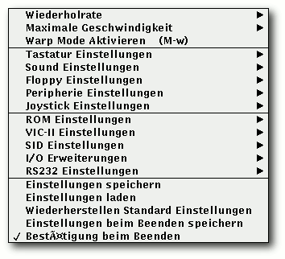

freiesMagazin Juli 2010 (ISSN 1867-7991)
Topthemen dieser Ausgabe
„Play Games!“
Inhalt
Software
ASCIIpOrtal – The GUI is a lie!
Kurztipp: BrettSpielWelt
C64-Emulatoren – Nostalgie pur
Spieletipp: Cave Story
FreeCiv – Besiedeln, erforschen und erobern
Gish – Teerball im Untergrund
The Hive Game
LinCity-NG
Machinarium – In der Welt der Maschinen
Mad Skills Motocross
Micropolis – Wir bauen uns eine Stadt
OpenTTD
Osmos – Spiel mit den Zellen
Fun mit Phun
Pioneers – Komm, lass uns siedeln!
Slingshot – Steinschleuder im Weltraum
Toribash – Kampf mit (der) Physik
Warcraft 3 mit Linux
World of Goo – Die Bälle sind los
X-Moto
Magazin
Editorial
Veranstaltungen
Konventionen
Impressum
Zum Index
Editorial
Spiel, Spaß und SpannungJuni 2010 – Die Spiele sind eröffnet
Nein, keine Sorge. freiesMagazin bleibt fußballfreie Zone, auch wenn das Spiel der deutschen Mannschaft letzten Sonntag gegen England schon schön anzusehen war. Abseits davon haben wir uns aber gedacht, da die meisten Leute eh vor dem Fernseher sitzen und keine Zeit haben, einen Artikel zu schreiben, dass wir das kleine Sommerloch mit einer Sonderausgabe zum Thema „Spiele“ überbrücken. In den letzten Monaten und Jahren, die freiesMagazin existiert, gab es zahlreiche Artikel, wie man die Zeit am Computer auf extrem produktive Weise verbringen kann. Auch wenn im Sommer wohl kaum jemand bei diesem Wetter Lust hat, die ganzen Spieletipps zu testen, kann man sich diese ja bereits für den nasskalten Winter vormerken (der sicherlich kommen wird). Damit das Recycling für die treuen freiesMagazin-Leser aber nicht zu langweilig wird, gibt es mit „Gish“, „Osmos“ und „Cave Story“ noch drei aktuelle Spieleartikel, die den einen oder anderen sicherlich erfreuen werden.Die Auswirkungen von Flattr sind spannend
Jeden Monat erfindet sich das Internet neu und wirft neue Dienste vor die Füße der Nutzer. Die letzten Monate machte Flattr [1] auf sich aufmerksam, ein neuartiger Bezahldienst, der vor allem bei Bloggern und Erzeugern von interessanten Inhalten beliebt zu sein scheint. Die Idee hinter Flattr ist, dass man pro Monat Geld an Webseiten verteilt, je nachdem wie oft man den Flattr-Button auf diesen Webseiten angeklickt hat. Letzten Monat wurden wir von einem Leser gefragt, ob wir nicht auch einen Flattr-Button auf unserer Webseite einbinden wollen, um freiesMagazin als Projekt etwas Gutes zu tun. An sich ist das keine schlechte Idee, nur hat die Benutzung von Flattr in unseren Augen ein paar Nachteile. Allem voran ist freiesMagazin ein nicht-kommerzielles Projekt und soll es auch bleiben. Ein Flattr-Button hat aber Spendencharakter, der dazu aufruft Geld an das Projekt zu spenden. Dazu kommt, dass wir ab und zu Non-Commercial-Inhalte in freiesMagazin nutzen. Die Eigentümer der Inhalte könnten uns die Nutzung ggf. verbieten, weil sie (wie viele andere auch) Flattr bereits als „Commercial“ ansehen. Ein großer Nachteil für die Benutzung in einem Projekt und nicht als einzelne Person ist, dass Flattr erfordert, dass jeder Beschenkte am Flattr-Programm teilnimmt. Das bedeutet, dass wir pro Monat zwei Euro ausgeben müssten (Mindestbetrag zur Teilnahme), um Flattr-Spenden empfangen zu können. Es ist sehr fraglich, ob die Rechnung aufgeht und viel wichtiger, wer sich und seinen Namen für die Anmeldung „opfert“. (Es gibt natürlich auch erfolgreiche Beispiele [2], mit denen wir aber wahrscheinlich nicht mithalten können. ) Außerdem ist anzumerken, dass auch Einnahmen per Flattr (bzw. solche Einnahmen im Allgemeinen, die nicht als Spende deklariert sind) versteuert werden müssen. Und das ist etwas, was den Aufwand wirklich nicht wert ist [3]. Und abschließend: Mit Geld können wir ehrlich gesagt nicht viel anfangen. Natürlich benötigen wir es privat zum Leben, aber eine Aufteilung im Team wäre bei den wahrscheinlich zusammenkommenden Beträgen kaum noch relevant und die Server werden glücklicherweise von unserem Hoster xencon [4] gesponsort, sodass wir kaum Kosten haben. Daneben haben wir uns in der Projektleitung zum Ziel gesetzt, nicht mit Geld irgendwelche Leute ins Team zu holen, da der Anreiz der Mitarbeit dann ein falscher ist.Viel Spaß im Sommer
Wer freiesMagazin wirklich unterstützen möchte, kann dies mittels Leserbriefen tun. Es passiert dann hoffentlich nicht wieder das Gleiche wie letzten Monat [5]. Aus Versehen zeigte der Kommentarlink in der Ausgabe nicht auf die Nachricht im Blog, sondern auf die statische Übersichtsseite zur Juniausgabe, die man aber nicht kommentieren kann. Wir entschuldigen uns an dieser Stelle noch einmal für den Fauxpas und hoffen, dass es dafür diesen Monat umso mehr Kommentare gibt. Noch besser sind natürlich Artikel für das Magazin, denn das erwähnte Sommerloch oben war in der Tat ernst gemeint. Für den Monat August haben wir zwar bereits ein paar Artikel, eine gesamte Ausgabe in gewohnter Größe können wir damit aber nicht erstellen. Daher an dieser Stelle noch einmal der Aufruf, Artikelvorschläge an[1] http://flattr.com/
[2] http://www.lawblog.de/index.php/archives/2010/07/01/flattr-der-erste-monat/
[3] http://www.retosphere.de/offenenetze/2010/06/16/flattr-und-andere-zahlungsdienste-in-blogs-rechtliche-implikationen/
[4] http://www.xencon.net/
[5] http://www.freiesmagazin.de/20100630-hinweis-zu-kommentaren-der-juniausgabe
Das Editorial kommentieren
Zum Index
ASCIIpOrtal – The GUI is a lie!
von Dominik Wagenführ Das Spiel Portal [1] hatte aufgrund seiner genialen Spielidee einen riesigen Erfolg im Jahr 2007. Die Relevanz des Spieles hat sogar die Wikipedia erkannt und eines der besten Computerspiel-Zitate („The cake is a lie!“) stammt daraus. Mit ASCIIpOrtal [2] von Joe Larson wird das Spielprinzip für Konsolenjunkies auch auf die Linux-Plattform portiert. Redaktioneller Hinweis: Der Artikel „ASCIIpOrtal – The GUI is a lie!“ erschien erstmals in freiesMagazin01/2010 [3]. Zuerst ein wichtiger Hinweis: ASCIIpOrtal glänzt nicht mit überragender 3-D-Grafik. Dafür darf man umso erstaunter sein, welche Möglichkeiten ein reiner Zeichensatz einem in der Konsole bietet.
Der Titelschirm von ASCIIpOrtal.
Spielprinzip
Das Spielprinzip von ASCIIpOrtal ist sehr schnell erklärt: Mit Hilfe einer Kanone kann man zwei verschiedenfarbige Portale (ein gelbes und ein blaues) an den Decken, Böden und Wänden eines zweidimensionalen Levels erzeugen, durch die man sich dann bewegen kann. Wichtig dabei ist der Impulserhaltungssatz, der da in Kurzform lautet: „Was schnell rein geht, kommt schnell raus.“ Lässt man sich also von einer Plattform in das eine Portal fallen, kommt man auf der Gegenseite mit dieser Geschwindigkeit auch wieder heraus und wird entsprechend in die jeweilige Richtung (also auch nach oben) geschleudert.Installation
Die Installation ist denkbar einfach. Auf der Webseite [4] gibt es zwei Archive, je eines für 32-Bit- und 64-Bit Rechner. Der Quellcode des Spieles liegt den Archiven bei, also ist auch die Kompilierung auf anderen Systemen kein Problem, solange folgende Entwicklerpakete installiert sind (die Namen stammen von einem Ubuntu-System):- build-essentials
- libsdl1.2-dev
- libsdl-mixer1.2-dev
$ cd src $ make $ cp asciiportal .. $ cd .. |
$ ./asciiportal |
- libsdl1.2 (bzw. libsdl1.2-debian in Debian/Ubuntu)
- libsdl-mixer1.2
Spielstart
Direkt nach dem Start drückt man irgendeine Taste („Where is the any key?“) und kann mit den Pfeiltasten den gewünschten Menüpunkt auswählen. „1) Begin“ sollte für den Anfang aber sicherlich ausreichen. Danach begrüßt einen eine nette Computerstimme als ungebetenen Besucher – Kuchen kann man also sicher keinen erwarten.Das grüne Å muss zum weißen E.
Mit den Pfeiltasten „Pfeil rechts“ und „Pfeil links“ bewegt man sich nach rechts und links. Die Portalkanone justiert man dann durch die Pfeiltasten „Pfeil hoch“ und „Pfeil runter“. Etwas einfacher könnte es sein, den Ziffernblock zur Steuerung der jeweiligen Richtung der Kanone zu nutzen. Auf Leitern gibt es beispielsweise gar keine andere Möglichkeit. Mit „Leertaste“ oder „5“ auf dem Nummernblock schießt man abwechselnd Portale. Da man da ganz schön durcheinanderkommen kann, welches Portal denn das nächste sein wird, ist es besser, mit den Tasten „X“ (gelbes Portal) und „Z“ (blaues Portal) zu arbeiten. Wie ASCIIpOrtal ansonsten funktioniert, muss jeder selbst herausfinden, denn auch das ist Teil des Spiels. :) Ein Hinweis: Mit „F2“ schaltet man die Sichtweise der Portale um. Dabei ist entweder der neue Sichtbereich mit (gelben und blauen) Linien markiert, gar nicht markiert oder komplett farbig ausgefüllt. Mit der ersten Auswahl (Standard) kommt man dann wohl am besten zurecht - soviel sei an dieser Stelle angemerkt.
Weitere Levels
Sollte man die 50 Standardlevels irgendwann durchgespielt haben, kann man auch noch die Zusatzlevel spielen. Dafür wählt man im Hauptmenü den Punkt „3) Change Map Set“ und gibt den Namen des Ordners mit den Dateien an. In der Version 1.1 vom 31. Oktober 2009 sind dies die Ordner evil, extralevels und raisonbran648. Die Standardlevels befinden sich im Ordner maps.Der Blick durch die Portale kann verwirrend sein.
Leveleditor
Der Leveleditor besteht aus einem Texteditor - hier kann man natürlich seinen Lieblingseditor benutzen. Will man eigene Levels erzeugen, findet man Im Hauptordner des Spiels die Datei map_making_tips.txt, die einige hilfreiche Hinweise gibt, wie man Levels erstellen kann. Wie es zu erwarten war, besteht jedes der Spielelemente aus einem ASCII-Zeichen [5]. Auf diese Art kann man Dinge wie Spieler, Wände, Ausgänge, Türen etc. definieren und so das Level gestalten. Zusätzlich kann man bis zu 10 Textnachrichten an bestimmten Stellen im Level einblenden lassen, die den Spieler unterhalten oder ihm womöglich auch einmal helfen sollen. Die Levels können dann in einem extra Verzeichnis gespeichert werden und sollten aufsteigend nummeriert sein: 001.txt, 002.txt usw. Es gibt auch von einem Community-Mitglied einen Level-Editor, der aber nur für Windows programmiert wurde und auch nicht im Quellcode vorliegt. Joe Larson plant aber vielleicht, einen Online-Editor zu programmieren, um die Level-Gestaltung zu vereinfachen.Obiges Level im Texteditor.
Kommandozeilen-Parameter
Die Hilfe mit allen Kommandozeilen-Parametern erhält man mittels
$ ./asciiportal -h |
Fazit
ASCIIpOrtal fängt den Stil des großen Bruders sehr gut ein und portiert das Spielprinzip in faszinierender Weise auf die Konsole. Es macht wirklich Spaß, auch wenn – für manche vielleicht gerade weil – die Grafik minimal ist. Die Bemerkungen des Computers sind recht witzig und die Musik von Steve Fenton erinnert an die guten alten Spielhallenzeiten. Es gibt aber auch noch kleinere Bugs. So funktioniert die Option -d nicht und führt zu einem „Segmentation Fault“. Und bei der Benutzung des Vollbildmodus schaltet das Spiel nach dem Beenden nicht zurück in die alte Desktopauflösung. Aber die Fehler werden sicherlich in einer späteren Version ausgemerzt (oder liegen vielleicht auch am Testrechner) und stören sowieso nicht weiter. Bei Fragen kann man sich an die Community im Forum [6] wenden. ASCIIpOrtal ist ein rundherum gelungenes und kurzweiliges Spiel für alle, die nicht immer Wert auf Displacement Mapping, High Definition Rendering oder Ambient Occlusion legen. Links[1] http://de.wikipedia.org/wiki/Portal_(Valve)
[2] http://cymonsgames.com/asciiportal/
[3] http://www.freiesmagazin.de/freiesMagazin-2010-01
[4] http://cymonsgames.com/asciiportal/#download
[5] http://de.wikipedia.org/wiki/ASCII
[6] http://cymonsgames.com/forum/index.php?board=14.0
| Autoreninformation |
| Dominik Wagenführ spielt sehr gerne unter Linux. Vor allem Geschicklichkeits- und Denkspiele machen ihm dabei viel Spaß. |
Zum Index
Kurztipp: BrettSpielWelt
von Dominik Wagenführ Über das Portal BrettSpielWelt (BSW) [1] hat man die Möglichkeit, verschiedene Brett- und Kartenspiele als Online-Version gegen andere Spieler auf der Welt zu spielen. Vor allem aber in Deutschland ist die Seite sehr beliebt. Auch wenn die Client-Software von BrettSpielWelt nicht Open Source ist, so macht eine kleine Runde Siedler, Carcassonne oder Dominion damit unter Linux dennoch viel Spaß. Redaktioneller Hinweis: Der Artikel „Kurztipp: BrettSpielWelt“ erschien erstmals in freiesMagazin07/2008 [2].BrettSpielWelt-Startfenster.
Installation
Um an einem Spiel teilzunehmen, kann man direkt über den Browser einen Online-Client zu jedem Spiel starten. Für diesen ist ein installiertes Java-Plugin erforderlich. Wesentlich sinnvoller ist aber der Online-Client zum Herunterladen [3], der als gepacktes tar.gz-Archiv vorliegt. Nach dem Entpacken muss man nur die Datei start.sh ausführen (z. B. per Mausklick im Dateimanager). Als Voraussetzung für den Online-Client ist nur eine aktuelle Java-Version von Sun erforderlich. Mit GNU Java war der Client leider nicht zur Mitarbeit zu bewegen. Der Vorteil der Download-Version besteht darin, dass die Bilddaten zu einem Spiel nur einmalig heruntergeladen werden müssen. Hinweis: Der Online-Client steht auch für Microsoft Windows (alle Versionen ab Windows 95) und Mac OS X zum Download bereit.Bedienung
Startet man den Client, sieht man ein buntes Fenster (das Titelbild variiert dabei), auf das man einmal klicken muss. Hier kann man auch vor dem Start Optionen wie „Sound an/aus“ einstellen, was aber auch im Spiel selbst zu (de-)aktivieren ist. Danach erscheint ein Fenster zur Anmeldung, dabei ist eine Registrierung bei BrettSpielWelt optional. Einige Spieler bevorzugen aber das Spiel mit anderen registrierten Mitgliedern. Wer sich ohne Registrierung anmelden will, lässt das Passwortfeld leer. Man muss dann aber zwingend einen noch nicht registrierten Benutzernamen verwenden. Nach der Anmeldung erscheint ein auf den ersten Blick sehr buntes und durcheinander wirkendes Spielefenster – der Spielemanager. Die BSW-Spiele finden an bestimmten „Tischen“ statt. Es gibt zu jedem Spiel nur endlich viele Tische – in den meisten Fällen ist aber immer einer frei. Die Tische haben in der Übersicht verschiedene Farben:- Hellgrün: Offene Spiele, in die man direkt einsteigen kann.
- Dunkelgrün: Offene Spiele, an deren Tisch man erst treten muss, um nachzufragen, ob man mitmachen darf.
- Braun: Entweder leere Tische oder offene Spiele, die nicht aktiv nach Mitspielern suchen.
- Violett: Bereits gestartete Spiele.
Verschiedene Farben zeigen den Spielstatus an.
Jeder Tischeintrag ist dabei gleich aufgebaut:
- Spielname (mit optionalen Erweiterungen)
- Teilnehmende Spieler
- Tischnummer und -name
- Anwesende Spieler, die noch nicht am Spiel teilnehmen
Einem Spiel beitreten
Möchte man einem offenen Spiel (hellgrüner Tisch) beitreten, klickt man mit der linken Maustaste auf einen Tisch, hält diese gedrückt und wählt „Beitreten“. An dunkelgrünen und violetten Tischen kann man nur „Zusehen“ auswählen, darf dann aber gegebenenfalls mitspielen. Ist man einem Spiel beigetreten, kann man über den Befehl /join in der Kommandozeile des Clients einsteigen und losspielen, sobald der Spieleröffner das Spiel startet. Alternativ kann man auch „Spiel Pfeil rechts Join“ wählen. Hinweis: Ist das Fenster zu breit, kann man die Kommandozeile am unteren Rand nicht sehen. Leider hängt die Höhe des Chatfenster proportional von der Breite des gesamten Clientfensters ab und kann nicht separat eingestellt werden. Ein Vollbildspiel ist somit meist nicht möglich.Ein Spiel eröffnen
Um ein Spiel zu eröffnen, wählt man zunächst den Knopf „Mitspieler gesucht“ oben rechts und sucht sich aus der Liste ein Spiel aus. Danach kann man dann - auch wieder oben links - nach „freie Tische“, „laufende Spiele“ und „Mitspieler gesucht“ filtern. Um ein neues Spiel zu starten, klickt man mit der linken Maustaste auf einen freien Tisch (braun), hält diese gedrückt und wählt „Beitreten“ oder „Eröffnen“. Mit „Beitreten“ tritt man nur an den Tisch heran und muss danach erst über „Join“ am Spiel teilnehmen (siehe oben). Mit „Eröffnen“ tritt man gleich dem Spiel bei und schickt eine „Mitspieler gesucht“-Nachricht an die Community. Ist man im Spiel und hat Mitspieler gefunden, startet man dieses über /start in der Eingabezeile oder den zugehörigen Menueintrag „Spiel Pfeil rechts Start“. Eine genaue Anleitung zum Spielemanager findet man auf der BSW-Seite [4].Spieleauswahl
Aktuell gibt es 38 Spiele in der BrettSpielWelt, darunter einfache Spiele wie Backgammon oder Doppelkopf, Spieleklassiker wie „Die Siedler von Catan“ oder „Carcassonne“, aber auch sehr komplexe Spiele wie „Die Säulen der Erde“ oder „Caylus“. Zu jedem Spiel gibt es eine sehr ausführliche Spielanleitung, die eigentlich alle aufkommenden Fragen klärt.Und sonst?
BrettSpielWelt ist mehr als nur ein Spieleportal, denn es gibt auch ein Metaspiel, welches in Städte aufgeteilt ist, bei denen jeder Teilnehmer zum Beispiel auch Berufe ausüben kann. Auch gibt es zu jedem Spiel einen Chat, in dem sich Interessenten treffen und verabreden können. Außerdem werden dort die Spiele oft erklärt. Die Community ist sehr freundlich, auch wenn man ein Spiel nicht kennt. In einer Testphase wurde der Autor sogar „an die Hand genommen“. Ein Spieler hat ihn in seine Karten schauen lassen und immer erklärt, weshalb er diesen oder jenen Zug macht.
Das Spiel eröffnen, beitreten oder nur zusehen.
Wer also viele Hunderte Kilometer von seinem „Stammtisch“ entfernt wohnt, findet bei BrettSpielWelt sicher das ein oder andere Spiel, an denen er Spaß haben kann. Natürlich gilt aber: Ein Spiel am Küchentisch mit echten Menschen und einer Tüte Chips kann BSW nicht ersetzen. Links
[1] http://www.brettspielwelt.de/
[2] http://www.freiesmagazin.de/freiesMagazin-2008-07
[3] http://www.brettspielwelt.de/Community/Download/
[4] http://www.brettspielwelt.de/Hilfe/Manager/
| Autoreninformation |
| Dominik Wagenführ ist leidenschaftlicher Brettspieler und gibt sich gerne einer digitalen Runde „Carcassonne“ oder „Säulen der Erde“ hin, wenn er die Zeit dazu findet. |
Zum Index
C64-Emulatoren – Nostalgie pur
von Dominik Wagenführ Der C64 [1] ist einer der beliebtesten Heimcomputer der 80er und sogar 90er Jahre gewesen. Viele Nutzer hatten damit ihren Einstieg in die Computerwelt und denken manchmal wehmütig an diese Zeit zurück. Redaktioneller Hinweis: Der Artikel „C64-Emulatoren – Nostalgie pur“ erschien erstmals in freiesMagazin02/2007 [2]. Für den Fall, dass man seinen alten „Brotkasten“, wie der C64 früher genannt wurde, nicht vom Dachboden holen will, kann man die meisten Spiele und Anwendungen auch unter Linux über eine Emulation verwenden. In diesem Artikel werden zwei Emulatoren vorgestellt, mit den man die C64-Diskettenimages laden kann. Eine Warnung aber vorweg: Man darf die Diskettenimages nur dann herunterladen und nutzen, wenn man in Besitz des Originalspiels ist, da die meisten Spiele immer noch urheberrechtlich geschützt sind. In manchen Fällen sind bestimmte Spiele auch freigegeben, um sie nutzen zu können. Eine Liste gibt es am Ende des Artikels.Frodo
Frodo ist in diesem Fall kein Hobbit, sondern ein freier C64-Emulator, der auch unter Unix-Systemen lauffähig ist. Man lädt sich von der Homepage [3] das gepackte Verzeichnis FrodoVERSION.Src.tar.gz herunter und entpackt dieses. Darin befindet sich der Quellcode, den man kompilieren muss. Hierzu benötigt man noch die Pakete- libsvga1-dev
- libsdl1.2-dev
- 1541 ROM
- Basic ROM
- Char ROM
- Kernal ROM
Frodo.
Um das Einstellungsfenster nutzen zu können, muss das Paket
- tk (mindestens Version 8.4)
./Frodo |
Einstellung von Frodo.
- Hier gibt man das Verzeichnis oder die Image-Datei für die Diskette an, die meistens im Format D64 oder T64 vorliegen. Mittels eines Klicks auf einen der Knöpfe oder per Doppelklick in das Eingabefeld kann man ein Verzeichnis oder eine Datei auswählen. Die vier verfügbaren Laufwerke sind dabei durchgehend von 8 bis 11 nummeriert.
- Mit dem Knopf „Show/Hide Advanced Options“ kann man die erweiterten Optionen aufrufen.
- Wichtig ist, dass man „Limit Speed“ aktiviert. Ansonsten haben die Leertaste oder Backspace eine zu hohe Wiederholungsrate und man kann nicht mehr vernünftig tippen.
- Man lädt den Inhalt und zeigt ihn an (siehe unten).
- Danach bewegt man den Cursor in die gewünschte Zeile mit dem Programm und gibt dort vorne das LOAD ein.
- Nach den Anführungszeichen am Ende der Zeile tippt man das ,8,1 ein.
Spiel: Hägar der Schreckliche.
Auf Systemen mit Notebooktastaturen (das schließt Netbooks mit ein) kann es sein, dass die Cursortasten nicht reagieren. Leider wurden die Pfeiltasten auf den Nummernblock der Tastatur gemappt, der bei Notebooktastaturen aber nur per „Fn“ erreichbar ist. In manchen Fällen kann man ein Spiel so bedienen, in anderen wiederum funktioniert das leider gar nicht. Hier ist dann eine anderen „vollwertige“ Tastatur oder ein Joystick empfohlen.
VICE
Den VICE-Emulator [4] gibt es schon eine Weile länger. Er emuliert nicht nur Programme für den C64, sondern auch für den C128, VC20 und diverse anderen 8bit-Computer. VICE ist als fertiges Paket namens vice verfügbar und kann über die Paketverwaltung installiert werden. Wer die neueste Version haben möchte, kann sich von der Homepage das Archiv herunterladen, entpacken und wie gewohnt mittels
$ ./configure $ make # checkinstall |
VICE.
Um VICE nutzen zu können, benötigt man wieder vier ROM-Dateien. Im Gegensatz zu Frodo (siehe oben) liefert VICE diese aber nicht mit. Daher leiht man sie sich einfach aus dem Frodo-Verzeichnis aus. :-) Damit die Dateien nun aber erkannt werden, muss man zuerst das Verzeichnis .vice/C64 im Homeverzeichnis anlegen und dann die Dateien wie folgt hinein kopieren und auch umbenennen (wichtig dabei ist, dass man die Groß-/Kleinschreibung beachtet!):
- 1541 ROM nach dos154
- Basic ROM nach basic
- Char ROM nach chargen
- Kernal ROM nach kernal
$ x64 |
VICE-Menü, linke Maustaste.

VICE-Menü, rechte Maustaste.
Über den Punkt „Disk Image einlegen Pfeil rechts Laufwerk #8“ oder alternativ per „Alt“ + „8“ kann man nun für das erste Laufwerk ein Diskimage auswählen. Wenn man keinen Joystick hat, kann man über „Joystick Einstellungen Pfeil rechts Joystick in Port 2“ alternativ die Funktionen auf den Ziffernblock legen oder, falls man keinen hat, auf „Benutzerdefiniert“ stellen. Im zweiten Fall werden dann die Tasten „W“, „E“, „R“, „S“, „D“, „F“, „X“, „C“, „V“ zum Steuern und die „Leertaste“ zum Feuern benutzt. Hier sollte man nur aufpassen, dass man den Joystick erst während des Spiels einstellt. Sonst kann man nämlich obige Buchstaben nicht mehr tippen, um das Programm zu starten.
Spiel: It's Magic.
Spiele herunterladen und starten
Einige Spielehersteller haben mittlerweile ihre Spiele (oder zumindest einen Teil davon) freigegeben, sodass andere Spieleseiten sie zum Download anbieten dürfen. Sich auf eine ausgiebige Recherche im WWW zu machen, lohnt sich auf jeden Fall. Trifft man während seiner Suche auf sogenannte „Abandonware“-Seiten, dann sollte man von diesen Abstand nehmen. Man sollte sich dessen bewusst sein, dass das Herunterladen vieler Spiele nach wie vor meist illegal ist – schließlich sind die Spiele oder Teile davon immer noch urheberrechtlich geschützt. Ist man auf der Suche nach legalen Downloadlinks, schaut man vielleicht bei Lemon64 [5] vorbei. Ferner lohnt sich ein Besuch der Commodore-Seite von Softwolves' [6]. oder bei der ehemaligen C64-Spieleschmiede Gremlin Graphics [7]. Hat man nun ein passendes Spiel gefunden und heruntergeladen, geht es an das Spielen. Hierbei ist Folgendes zu beachten: Um ein Spiel zu starten, bindet man zuerst das Diskettenimage ein. Danach lädt man „wie gewohnt“ den Inhalt der Diskette mit
LOAD "$",8 LIST |
LOAD "DATEINAME",8,1 RUN |
LOAD "*",8,1 RUN |
Spiel: Kikstart II.
Redaktioneller Hinweis: Alle abgebildeten Screenshots sind von frei erhältlichen Spielen gemacht worden! Links
[1] http://de.wikipedia.org/wiki/C64
[2] http://www.freiesmagazin.de/freiesMagazin-2007-02
[3] http://frodo.cebix.net/
[4] http://www.viceteam.org/
[5] http://www.lemon64.com/games/
[6] http://www.softwolves.pp.se/cbm/
[7] http://gremlinworld.emuunlim.com/commodore64.htm
| Autoreninformation |
| Dominik Wagenführ erhielt seinen ersten C64 Anfang der 1990er und ist auch heute noch davon begeistert, was aus so einem kleinen Gerät alles herauszuholen war. |
Zum Index
Spieletipp: Cave Story
von Dominik Wagenführ Retro-Gaming kommt ja nicht wirklich aus der Mode, nicht umsonst gibt es so zahlreiche Emulatoren für diverse alte Spielekonsolen und Computer. Das Spiel Cave Story [1] schlägt in die gleiche Kerbe und präsentiert ein sehr schönes Action-Adventure in Pixelgrafik.Zur Geschichte
Cave Story ist ein japanisches Computerspiel, welches von Studio Pixel [2] als Freeware (also kostenlos, aber nicht mit Quellcode) im Jahr 2004 veröffentlicht wurde. Das Spiel umfasst zwar auch einige Jump'n'Run-Elemente, kann aber eher in die Schublade der Action-Adventures gesteckt werden. Technisch mag das Spiel mit seiner 2-D-Pixelgrafik gegebenenfalls abschrecken, die einzelnen Sprites sind aber sehr liebevoll gezeichnet und animiert und erinnern tatsächlich an ältere Konsolenklassiker. Bei dem seitwärtsscrollenden Action-Adventure gibt es aus diesem Grund auch klassische Bosskämpfe und Zwischengegner, die es zu besiegen gibt.Im Startbildschirm kann man den letzten gespeicherten Spielstand laden oder ein neues Spiel anfangen.
Das Spiel
Man landet als Junge ohne Gedächtnis auf einer Insel, die von hasenähnlichen Wesen namens Mimiga bevölkert sind (wobei „bevölkert“ angesichts der Vermehrungsrate von Hasen doch etwas übertrieben ist). Um von der Insel wieder fort zu kommen, muss man mit den verschiedenen Einwohnern der Insel sprechen, die von einem seltsamen Professor beherrscht werden. Eine Mimiga namens Sue will ebenfalls von der Insel fliehen und wird von den Lakaien des Professors gejagt. Die Aufgabe ist es nun, Sue zu suchen und ihr zu helfen.Sue sucht ihren Bruder und sie selbst ist auch noch gefangen.
Dazu hüpft man von Level zu Level, spricht mit den Mimiga und sammelt Gegenstände ein, die man dann von Punkt A nach Punkt B bringen muss. Diese werden im Inventar gesammelt und automatisch benutzt, wenn es das Spiel für angebracht hält. Um nicht wehrlos gegen die Gegner dazustehen, findet man verschiedene Waffen, die von Pistole über Raketenwerfer bis hin zum Feuerkugelwerfer gehen.
Gegner greifen sowohl am Boden als auch aus der Luft an.
Installation
Auf der Fanseite zu Cave Story [3] gibt es zahlreiche Portierungen des erstmals auf dem PC erschienenen Spiels für die verschiedensten Betriebssysteme – darunter auch Linux [4]. Das Spiel selbst wurde noch nicht in die deutsche Sprache portiert; wer also mit Englisch ein Problem hat, könnte Schwierigkeiten bekommen, da die Gespräche mit den anderen Bewohnern der Insel in Textboxen ablaufen. Nachdem man sich die aktuelle Version als Tar-Archiv, aktuell linuxdoukutsu-1.01.tar.bz2, heruntergeladen hat, entpackt man das Spiel und muss nur die Datei doukutsu ausführen. Im Terminal zum Beispiel:
$ tar -xzf linuxdoukutsu-1.01.tar.bz2 $ cd linuxDoukutsu-1.01 $ ./doukutsu |
Der namenlose Held hat das Drachenei Nr. 00 gefunden.
Einstellungen
Einstellungen für das Spiel gibt es leider nicht nativ, d. h. es gibt keine Textdatei, die man editieren kann, und auch kein Programm, welches man ausführen muss, um die Optionen zu ändern. Immerhin kann man aber die mitgelieferte DoConfig.exe für Windows mit Wine starten:
$ wine DoConfig.exe |
Oben links sieht man die verschiedenen Waffen zur Auswahl.
Steuerung
Gesteuert wird der namenlose, junge Held per Gamepad (ungetestet, siehe oben) oder Tastatur. Per Standard bewegt man sich nach rechts und links mit den Pfeiltasten, mit dem Pfeil nach unten durchsucht oder benutzt man Objekte, mit „Z“ springt und mit „X“ schießt man. Hieran sieht man auch schon die Zielgruppe des Spiels, denn „X“ und „Z“ liegen nur auf einer englischen Tastatur nebeneinander. Bei einem deutschen Qwertz-Tastaturlayout kann man diese nur per per kleinem Finger („X“) und Zeigefinger („Z“) sinnvoll bedienen, was aber auf Dauer zu einem Krampf in der linken Hand führen kann. Weitere wichtige Tasten sind „S“ und „A“ für das Durchschalten der Waffen, „Q“ für die eingesammelten Gegenstände und „W“ für die Übersichtskarte. (Zumindest theoretisch, im Spiel hat „W“ keinerlei Funktion gezeigt.)Per Teleporter kann man sich durch die Levels bewegen.
Die einzelnen Welten sind meistens durch Teleporter verbunden. In ihnen warten zahlreiche Gegner wie Fledermäuse, Quallen, Elefanten, Hornissen und anderes Getier. Wenn man einen Gegner abgeschossen hat, hinterlässt dieser entweder Munition für Waffen, die man sammeln kann, Lebenspunkte, die die Gesundheit auffrischen oder allgemeine Stufenupgrades (als kleines, oranges Dreieck), die zum Beispiel die Waffen verbessern. Wenn man Gegner berührt oder diese einen treffen, verliert man Lebensenergie, wird aber auch in der Stufe zurückgestuft, sodass die Waffen nicht mehr so eine hohe Durchschlagskraft haben. Hat man alle Lebenspunkte verloren, ist man tot und muss den letzten Spielstand laden. Speichern kann man leider nur einen Spielstand auf einmal an speziell dafür vorgesehenen Diskettensymbolen.
Grafik und Sound
Wie erwähnt, ist das Spiel in konsolenartiger Pixelgrafik gehalten. Dies mag sicherlich nicht allen Spielern gefallen, dennoch sind die Figuren liebevoll erstellt. Die Musik lehnt sich ähnlich an alte Zeiten an und klingt so blechern wie der SID eines C64. Das ist aber gewollt und soll den Retro-Stil des Spiels unterstreichen. Separat lässt sich der Ton leider nicht einstellen, d. h. wen die Musik und die Soundeffekte stören, der muss den Ton des Rechners komplett abstellen.In verschiedenen Räumen trifft man auf die einzelnen Mimiga, die einem meistens helfen.
Fazit
Cave Story ist ein kleines, nettes Action-Adventure für Linux, das vor allem Besitzer einer Konsole oder eines Heimcomputers der ersten Generation begeistern könnte. Die Story ist anfangs etwas verwirrend, mit der Zeit wird der Hintergrund der einzelnen Figuren aber klarer. Sehr schade ist, dass sich das Spiel nicht eindeutschen lässt, weder sprachlich noch von der Steuerung her. Ohne Handkrampf kann man auf einer Tastatur keine längere Zeit spielen. Und ohne englische Sprachkenntnisse ist man sowieso verloren. Ansonsten weiß Cave Story aber zu begeistern. Wer Action-Adventures mit Jump'n'Run-Einlagen mag, dem sei empfohlen, sich auf ein Leben als „Höhlenforscher“ einzulassen. Links[1] http://www.cavestory.com/
[2] http://hp.vector.co.jp/authors/VA022293/
[3] http://www.cavestory.org/
[4] http://www.cavestory.org/downloads_1.php
| Autoreninformation |
| Dominik Wagenführ spielt gerne und vor allem unter Linux. Cave Story hat ihn wegen der gesunden Mischung aus Jump'n'Run, Actioneinlagen und Adventure angesprochen. |
Zum Index
FreeCiv – Besiedeln, erforschen und erobern
von Stefan Erler Kontinente erkunden, Städte gründen, Äcker bewirtschaften, Technologien erforschen und Kriege führen. Nach dieser Kurzbeschreibung denkt man sofort an Civilization [1]. Jedoch geht es in diesem Artikel um FreeCiv [2], ein Mehrspieler-Strategiespiel, welches unter der GNU General Public Licence [3] veröffentlicht und mehrfach mit Civilization II verglichen wurde. Redaktioneller Hinweis: Der Artikel „FreeCiv – Besiedeln, erforschen und erobern“ erschien erstmals in Yalm 09/2008 [4] und wird unter der Creative-Commons-Attribution-ShareAlike-Lizenz [5] veröffentlicht.Die Installation
FreeCiv findet man in den Paketquellen; es lässt sich einfach über den Paketmanager installieren. Folgende Pakete müssen installiert werden:- freeciv-client-gtk
- freeciv-data
- freeciv-sound-standard
- freeciv-server
Das Spiel starten
Startet man FreeCiv, hat man drei Spielmodi zur Auswahl: Zunächst wählt man die Anzahl der Gegner und auch deren Stärke aus. Aber aufgepasst: Gerade als blutiger Anfänger sollte man dabei die Stärke seines Gegners nicht allzu hoch einstellen. Fehlt es zu Beginn an Kenntnissen und Fähigkeiten, überrennt einen der Gegner sonst doch sehr schnell. Hat man sich in das Spiel hineingefunden und bereits erste Siege errungen, kann man die Stärke der Gegner immer noch hochsetzen.Das Startmenü von FreeCiv – einfach und übersichtlich gestaltet.
Unter „Weitere Spieloptionen“ lassen sich zusätzliche Einstellungen zur Geologie, Gesellschaft, Wirtschaft, Militär, Wissenschaft, Spiel und Netz unternehmen. Unter „Wähle Nation“ lässt sich die Nation wählen, die man spielen möchte. Dabei hat man die Qual der Wahl, denn die Nationsgruppen sind breit gefächert. Man kann neben amerikanischen, europäischen und asiatischen Nationen auch viele fiktive Nationen, wie z. B. die sogenannten Fantasy-Nationen, auswählen. Nach der Nationenauswahl kann man das Spiel starten. Im Modus „Szenariospiel beginnen“ kann man bereits voreingestellte Spiele, in denen Karten, Anzahl der Gegner und Nationen voreingestellt sind, spielen. Man hat zwar die gleichen Einstellungsmöglichkeiten wie im Modus „Neues Spiel beginnen“, jedoch sind die Szenarien gut voreingestellt und man muss eigentlich nur die Nation, insofern man die voreingestellte nicht spielen möchten, auswählen und dann kann das Spiel auch schon losgehen. Über „Mit Netzwerkspiel verbinden“ kann man online sowie im eigenen Netzwerk gegen menschliche Gegner spielen. Öffnet man diesen Modus, gibt es die Möglichkeit, in einem lokalen Netzwerk oder auf einem Internet-Metaserver ein Spiel zu beginnen oder einem solchen beizutreten. Für diesen Modus ist die Installation des Paketes freeciv-server erforderlich. In diesem Multiplayermodus können bis zu 30 Spieler gleichzeitig um die Vorherrschaft kämpfen.
Gründe ein Reich
Ist die Wahl für einen Spielmodus getroffen, kann es losgehen. Das Spiel startet man mit einem Kundschafter, mehreren Arbeitern und einigen Siedlern. Mit dem Kundschafter kann man die Karte erkunden, welche bei Spielbeginn nur soweit bekannt ist, wie die eigenen Einheiten sehen können.Auf einer unerkundeten Karte geht es los …
Mit einem Siedler kann man an einer geeigneten Stelle eine Stadt gründen. Dabei sollte man jedoch behutsam vorgehen und einige Faktoren berücksichtigen. Eine der ersten Städte sollte beispielsweise am Meer liegen, damit man eine Hafenstadt besitzt, von welcher aus weitere Inseln und Kontinente erkundet und besiedelt werden können. Außerdem sollte die Stadtgründung auch an vorhandenen Rohstoffen festgemacht werden. Gebiete, in denen zum Beispiel viel Wald und Äcker sind, eigenen sich gut für den Holzabbau und für die Bewirtschaftung von Äckern. In Gebirgen wiederum lassen sich Rohstoffe wie Metalle aller Art gut abbauen. Außerdem gibt es Gebiete auf der Karte, in denen sich besondere Rohstoffe, wie zum Beispiel Seide, gut anbauen lassen. Der Abbau von Rohstoffen wird im Spielverlauf sehr wichtig, da die Bevölkerung mit Luxusgütern versorgt werden möchte, welche aus Rohstoffen hergestellt werden. Nachdem eine Stadt gegründet wurde, geht es an deren Ausbau. Man kann diese mit Gebäuden, wie zum Beispiel einer Kaserne, einem Marktplatz und einer Stadtmauer erweitern. Je nachdem, wie weit man Technologien erforscht hat, stehen unterschiedliche Gebäudetypen zur Auswahl. Nur durch Stadterweiterungen kann das Reich vergrößert werden, denn dann werden mehr Einwohner und damit mehr Steuereinnahmen produziert, welche wiederum benötigt werden, um das Heer, die Luftwaffe und die Marine zu finanzieren. Des Weiteren lassen sich in Städten Weltwunder bauen und Einheiten, militärische sowie zivile, ausbilden. Die Produktion von Einheiten ist, wie das Spiel als Ganzes, rundenbasiert und die Produktionsdauer hängt von der Art der zu produzierenden Einheit oder Gebäudes ab. In Runden, in denen Städte nichts produzieren, verdient die Stadt Geld mit Steuereinnahmen, mit denen sich das Spielerkonto füllt.
Neue Technologien
Um den Gegner früher oder später bezwingen zu können, müssen zeitig neue Technologien erforscht werden. Man beginnt mit der Grundlagenforschung, wie zum Beispiel der Erforschung des Alphabets und der Töpferei, um später einmal die Kernspaltung und Stealth-Technologie erforschen zu können.Das Forschungsfenster – es gilt mehrere Forschungsstufen zu erforschen.
Je fortschrittlicher eine Nation ist, desto höher stehen ihre Siegeschancen, denn hat man bereits die Atombombe erfunden und der Erzfeind führt noch mit Katapulten Kriege, ist der eigene Sieg leicht. Dabei hängt die Dauer der Erforschung einzelner Technologien von den Forschungspunkten eines Reiches ab. Diese setzen sich aus der jeweiligen Größe eines Reiches und den vorhandenen Gebäudeerweiterungen (wie zum Beispiel Universitäten) zusammen. Je mehr Forschungsgebäude man hat und je größer die eigene Bevölkerung ist, desto schneller können Technologien erforscht werden. Generell empfiehlt es sich also, die Städteerweiterung bzw. die Gründung neuer Städte immer im Auge zu behalten, um so schneller einen Vorteil gegenüber dem Gegner zu bekommen.
Gestalte eine eigene Außenpolitik
Ein weiterer großer Bestandteil von FreeCiv ist die Diplomatie – und die ist in der Außenpolitik nötig. Über das Diplomatiefenster kann man mit Gegnern Nichtangriffspakte, Allianzen und Handelsabkommen abschließen. Außerdem lassen sich Pakte und Allianzen wieder kündigen und dem Gegner kann der Krieg erklärt werden, was man früher oder später machen sollte, da das Spielziel die Vorherrschaft ist. Außerdem wird FreeCiv, wie jedes Kolonisationsspiel, ohne Kriege langweilig.Über das Diplomatiefenster kann man Abkommen mit Gegnern vereinbaren.
Eine weitere Funktion ist, dass Technologien mit Gegnern getauscht werden können. Fehlt eine Technologiestufe, um beispielsweise das Rad zu erfinden, und der Gegner besitzt diese bereits, kann man diese gegen eine bereits erforschte Technologie tauschen, sofern der Gegner zustimmt. Diplomatie bestimmt einen großen Teil des gesamten Spielverlaufes, denn möchte man sich als Einzelkämpfer durchschlagen, ist der Gesamtsieg sicherlich schwieriger zu erreichen als mit Verbündeten. Es empfiehlt sich also, die Diplomatie nicht zu vernachlässigen, denn sonst könnte es beispielsweise passieren, dass man auf einmal zwei verbündete Nationen gegen sich hat.
Die Menüsteuerung
FreeCiv wurde komplett ins Deutsche übersetzt und daher findet man sich von Anfang an gut zurecht. Durch klare und aussagekräftige Menübezeichnungen, wie zum Beispiel „Spiel“, „Regierungsform“, „Ansicht“, „Befehle“ und „Berichte“, werden gesuchte Funktionen zügig gefunden. Lediglich das Aufrufen der Diplomatie- und Forschungsfenster hätte etwas klarer gemacht werden können, denn diese beiden Fenster verbergen sich unter „Befehle“. Im Großen und Ganzen ist die Menü- und Spielsteuerung aber recht übersichtlich und einfach gestaltet.Die Steuerung
FreeCiv lässt sich komplett mit der Maus steuern. Jedoch ist es auch möglich, Befehle über die Tastatur auszuführen, was das Gameplay natürlich vereinfacht. Daher lassen sich alle Mausbefehle auch mit der Tastatur ausführen. Die Tastenkürzel dazu findet man in der Menüsteuerung hinter der Aktionsbeschreibung.Grafik und Sound
Für jeden Spielefan ist die Grafik ein wichtiger Faktor. Wer an neuere Versionen von Civilization gewöhnt ist, für den ist FreeCiv – grafisch gesehen – sicherlich ein Rückschritt, denn FreeCiv erinnert hier an eine der ersten Civilization-Versionen. Wer also hohe Ansprüche an die Grafik stellt, wird von FreeCiv sicherlich enttäuscht sein. Jedoch läuft FreeCiv problemlos auf den meisten Rechnern, mit den Benutzeroberflächen GTK+, GTK+2, Win32, Amiga und Xaw, da die Hardwareanforderungen minimal sind. Auch sollte man nicht zu viel vom Sound erwarten. Eine gute Spielmusik fehlt und die Soundeffekte erinnern auch an frühere Civilization-Versionen.Die FreeCiv-Community
Die Community hinter FreeCiv ist, wie man es bei Open-Source-Programmen eigentlich gewohnt ist, recht groß. Auf der offiziellen deutschen Projektseite [2] findet man neben einer ausführlichen Anleitung auch viele Informationen zu Einheiten, Gebäuden, Strategien, Technologien und vieles andere mehr. Außerdem gibt es auf der Projektseite ein Forum, in dem sich Spieler über das Spiel austauschen, Entwickler Ideen besprechen und Hilfesuchende Probleme direkt ansprechen können. Das Forum ist jedoch nur über die in englischer Sprache geführten Projektseite [6] zu erreichen. Des Weiteren kann man sich über die offizielle englische Projektseite an der Entwicklung von FreeCiv beteiligen. Ferner bietet die deutsche sowie englische Projektseite immer die neueste Version von FreeCiv kostenlos zum Download an.Fazit
FreeCiv ist eine gute Alternative zum kommerziellen und auch für Linux erhältlichen Civilization. Längerer Spielspaß wird geboten, jedoch wird FreeCiv wegen der Grafik und des Sounds für viele Spieler mit hohen Ansprüchen möglicherweise nicht in Frage kommen. Für den Nutzer, der lediglich etwas Spielspaß möchte, ist es jedoch empfehlenswert, da man als Spieler schon einmal nicht mitbekommt, wie die Zeit an einem vorbei läuft. Da die Community recht aktiv ist und die Entwicklung von FreeCiv immer voran geht, wird es sicherlich Weiterentwicklungen geben, die das Spiel grafisch und akustisch aufwerten. Links[1] http://de.wikipedia.org/wiki/Civilization_(Computerspiel)
[2] http://de.freeciv.wikia.com/
[3] http://www.freiesmagazin.de/yalm
[4] http://www.gnu.org/copyleft/gpl.html
[5] http://creativecommons.org/licenses/by-sa/3.0/de/
[6] http://freeciv.wikia.com/wiki/Main_Page
Diesen Artikel kommentieren
Zum Index
Gish – Teerball im Untergrund
von Dominik Wagenführ Im Geschicklichkeitsspiel Gish [1] übernimmt man die Rolle eines Teerballs, der sich nach der Entführung seiner Freundin in die Abwasserkanäle der Stadt vorwagt, um den Entführer zu jagen.Handlung
Die Geschichte in Gish hat sicherlich keinen Preis verdient, zu aufgesetzt wirkt die Geschichte der entführten Freundin, die man retten muss. Aber der Entwickler Cryptic Sea [2] musste den Teerball irgendwie in den Untergrund bekommen und das Konzept hat schließlich schon vor 26 Jahren bei Donkey Kong [3] funktioniert. Ansonsten macht Gish aber viel Spaß. Man rollt, rutscht, springt und hangelt sich durch die einzelnen Levels und sammelt dabei Münzen ein, löst kleinere Schalterrätsel und springt den Gegnern auf dem Kopf herum. Wichtig ist dabei immer die Physik, denn je nach Form verhält sich der Teerball anders. Das Spiel stammt von 2007 und hat bereits 2005 beim Independent Games Festival den „Grand Prize“ und den Preis für „Innovation in Game Design“ gewonnen [4]. Durch die Beigabe im „Humble Indie Bundle“ [5] hat Gish aber vor Kurzem noch einmal etwas Aufwind erhalten.Der Startschirm von Gish.
Installation
Da es das „Humble Indie Bundle“ nicht mehr gibt, kann Gish derzeit nur über Steam gekauft werden [6], für das immer noch kein eigener Linux-Client existiert [7]. Es gibt zwar auch bei Chronic Logic eine Bestellmöglichkeit [8], dort kostet das Spiel aber doppelt so viel wie bei Steam, weswegen der Kauf nicht empfohlen werden kann. Immerhin kann aber die Linux-Demo dort heruntergeladen werden [9]. Nach dem Download des Tar-Archives (z. B. gish153-1.tar.gz) entpackt man dieses und führt danach einfach nur die Datei gish aus (für 64-Bit-Systeme entsprechend gish64):
$ tar -xzf gish153-1.tar.gz $ cd gish153 $ ./gish |
#!/bin/sh cd ~/bin/gish153 ./gish |
Das Spiel
Nach dem Start des Spiels kann man sofort mit Gish loslegen. Dafür wählt man im Menü „Start“, legt dann einen neuen Spieler an bzw. wählt einen bereits erstellten aus (Level, Leben und Punkte stehen immer dabei) und klickt im nächsten Bildschirm auf „New Game“ bzw. „Continue“. Wie man daran auch sieht, ist das Menü und auch das gesamte Spiel in Englisch gehalten. Eine deutsche Version gibt es (bisher) nicht. Glücklicherweise enthalten nur die Zwischensequenzen und die Tutorial-Tipps am Anfang Text, sodass man auch ohne große Englischkenntnis das Spiel bedienen kann, wenn einem die Steuerung einmal erklärt wird. Alle Menüs lassen sich auch ohne Maus nur über die Tastatur steuern, indem man entweder die Cursortasten und „Enter“ benutzt oder direkt den fett markierten Buchstaben in einem Eintrag drückt.Am Ende des Levels gibt es eine Übersicht, was man alles erreicht hat.
Wer will, kann vorher noch im Hauptmenü (per „Esc“ kommt man zurück) die Optionen verändern, bei denen man aber nur die Steuerung für bis zu vier Spieler einstellen und die Auflösung variieren kann. Ja, richtig gelesen, bis zu vier Spieler können Gish spielen. Leider nicht das Hauptspiel mit mehreren Teerklumpen, sondern nur in einem extra Versus-Spielmodus, der weiter unten erklärt wird.
Steuerung
Der Teerklumpen in Gish wird über die vier Cursortasten bewegt. Die reine Bewegung nach rechts und links ist leicht, springen ist aber etwas komplexer. Am besten ist es, man drückt die Cursortaste nach unten und dazu die Leertaste, um zu springen. Wenn man dann hüpft, wechselt man auf die Cursortaste nach oben. Sobald man anfängt nach unten zu fallen, drückt man wieder die Cursortaste nach unten. Beim Aufprall auf den Boden wird der Teerball zusammengedrückt. Im komprimiertesten Zustand drückt man dann wieder die Leertaste und beginnt das ganze Prozedere von vorne. Richtig abgestimmt, kann man so sehr hoch springen, um hoch gelegene Absätze zu erreichen.Unter Wasser ist dank Auftrieb sogar ein Transport von Gegenständen möglich.
Neben der reinen Bewegung gibt es noch verschiedene Formen, die der Teerball annehmen kann. Mittels „A“ aktiviert man dem Haftmodus. Der Teerball bekommt Stacheln und hängt sich an alles, was nicht schnell genug wegrennen kann. Man kann damit sogar Gegner durch die Luft wirbeln oder Steine transportieren. Aber auch an Decken entlanglaufen ist damit kein Problem. Der zweite Zustand ist der Schlabbermodus per „S“. Hierbei wird der Teerball ganz weich und kann sich so auch durch schmale Ritzen zwängen, durch die er normalerweise nicht passen würde.
Wenn man sich dünn macht, passt man durch fast jede Lücke.
Zu guter Letzt kann man sich per „D“ noch extrem schwer machen. Dies ist beim Schwimmen wichtig, weil sonst der Auftrieb des Wassers zu groß ist und man nur an der Wasseroberfläche treiben würde. Aber auch wenn man Gegner zerstampfen oder Steine kaputt machen möchte, ist diese Form hilfreich.
Spielziel
Ziel des gesamten Spiels ist es natürlich, die eigene Freundin zu befreien. Pro Level ist das Ziel aber meist gleich: Gelange zum Ausgang! Dabei sollte man natürlich nicht Ewigkeiten brauchen, um zum Ende zu gelangen, ein echtes Zeitlimit gibt es aber (normalerweise) nicht. Auf dem Weg findet man einige Münzen („Amber“ genannt), die man einsammeln sollte, oder Gegner, die man überrollen kann.Wenn man auf Gegner draufspringt, macht man sich am besten schwer.
Bei den Gegnern sollte man natürlich aufpassen, denn diese können einen auch verletzen. Oben links sieht man die Teerfüllstandsanzeige (Gesundheit), die bei 100 beginnt. Fällt diese auf 0, hat man eines der standardmäßig fünf Leben verloren und muss das aktuelle Level neu beginnen. Hat man alle Leben verloren, muss man die komplette Welt mit fünf neuen Leben von vorne anfangen.
Die Gegner werden auch immer teuflischer.
Verletzen kann man sich auch bei einem Aufprall aus großer Höhe oder wenn man zwischen Steinen oder anderen bewegenden Elementen eingeklemmt wird. Hier ist also Vorsicht geboten. Immerhin kann die Gesundheitsanzeige durch das Aufsammeln von (recht seltenen) kleinen Teerkugeln wieder aufgefüllt werden. Und in manchen Leveln findet man sogar das eine oder andere Extraleben. Als kleine Besonderheit gibt es in fast jedem Level noch Geheimverstecke, die meistens weitere Münzen enthalten. Die Verstecke sind oft sehr gut hinter zerstörbaren Steinen oder unsichtbaren Durchgängen getarnt. Am Ende jedes Levels wird neben anderen Informationen auch angezeigt, wie viele Verstecke man gefunden hat.
Viele Münzen findet man in geheimen Verstecken.
Spielmodi
Es gibt noch einige weitere Spielmodi. Zum einen ist da der oben bereits erwähnten Versus-Modus, den man im Hauptmenü über den Eintrag „Versus“ auswählen kann. Hier findet man einige Minispiele wie z. B. Football, Sumo oder Dragster, bei der zwei (bei Sumo bis vier) Spieler an einem Computer gegeneinander antreten können.Im Versus-Mode kann man in Minispielen gegen andere, echte Personen antreten.
Als Zweites findet man nach der Auswahl eines Spielers ein Münzsammelspiel über den Punkt „Collection Game“. In 23 Levels muss man dann versuchen, innerhalb einer gewissen Zeit alle Münzen in einem Level zu sammeln.
In Extra-Levels darf man Münzen sammeln.
Wer nur etwas üben will, findet in dem Menü auch einen Eintrag „Practice“, über den man sich in einem Hindernisparcours austoben kann. Mit Klettern, Tauchen, Rutschen und Hüpfen ist für jeden etwas dabei.
Im Trainingslevel kann man Tarzan spielen.
Der letzte wichtige Punkt sind die eigenen Levels unter „Custom Levels“. Entweder spielt man hier eine komplette Kampagne über „Play Campaign“ oder wählt über „Load Level“ ein einzelnes Level aus, welches man spielen kann. Vorinstalliert sind vier Kampagnen und 112 Level.
Fazit
Gish ist ein älteres, aber dennoch bemerkenswertes Geschicklichkeitsspiel, das mit einem innovativen Konzept daherkommt. Die Änderung der Formen erinnert ein wenig an Morph [10] [11], das Aussehen an World of Goo, freiesMagazin 03/2009 [12]. Es dauert eine Weile, bis man die 112 Level durchgespielt hat und selbst dann hat man mit der Jagd nach Münzen oder den Kampagnen noch einen Wiederspielwert. Sehr schön ist auch, dass alle Spielinhalte vorliegen und angeschaut bzw. angehört werden können. Vor allem die Animationen der Gegner im Ordner animation und die im freien OGG-Format vorliegende Hintergrundmusik ist bemerkenswert. Wenn es Gish nun noch für Linux als (nicht überteuerten) Direktkauf gäbe, wäre dies der perfekte Zeitvertreib für Leute, die World of Goo bereits durchgespielt haben. Links[1] http://www.crypticsea.com/gish/
[2] http://www.crypticsea.com/
[3] http://de.wikipedia.org/wiki/Donkey_Kong
[4] http://www.igf.com/2005finalistswinners.html
[5] http://ikhaya.ubuntuusers.de/2010/05/06/linux-spielepack-zum-selbstbestimmungspreis/
[6] http://store.steampowered.com/app/9500/
[7] http://www.phoronix.com/scan.php?page=article&item=valve_steam_announcement&num=1
[8] http://www.chroniclogic.com/gishorder.htm
[9] http://www.chroniclogic.com/gish_download.htm
[10] http://www.lemonamiga.com/games/details.php?id=761
[11] http://www.youtube.com/watch?v=SRgCYOYjIN0
[12] http://www.freiesmagazin.de/freiesMagazin-2009-03
| Autoreninformation |
| Dominik Wagenführ spielt sehr gerne Geschicklichkeits- und Knobelspiele und freut sich über jede neue Spieleveröffentlichung, die es für Linux gibt (wenn sie denn nur leichter zu kaufen wären). |
Zum Index
The Hive Game
von Ralf Hersel Das gab es noch nie! Exklusiv für das Yalm-Magazin ist ein Computerspiel entstanden. Passend zu einem Python-Tutorial in Yalm ist das Spiel Hive auch in Python geschrieben und verwendet Tkinter als Grafikbibliothek. Der Artikel beschreibt das Spiel, erklärt wo es bezogen werden kann und lädt zur Mitarbeit bei der Weiterentwicklung ein. Redaktioneller Hinweis: Der Artikel „The Hive Game“ erschien erstmals in Yalm 02/2009 [1] und wird unter der Creative-Commons-Attribution-ShareAlike-Lizenz [2] veröffentlicht.Willkommen beim Hive-Spiel
Das Spielfeld von Hive ähnelt einer Bienenwabe, daher kommt sein Name. Man schlüpft in die Rolle eines Imkers, der sich um den Erhalt und die Gesundheit seines Bienenstocks kümmern darf. Unglücklicherweise geht zur Zeit ein gefährlicher Virus um, der die Waben im Bienenstock infiziert. Die Aufgabe des Imkers ist es, die Wabe zu impfen, um die Infektion zu bekämpfen. Stellt man sich dabei schlau an, kann die Wabe vor einer vollständigen Infektion bewahrt werden.Spielregeln
Man spielt gegen den Computer. Der Spieler ist der Imker, der die Zellen in der Wabe impft. Der Computer spielt die Rolle des Virus, der versucht, mehr und mehr der Zellen zu infizieren. Zu Beginn ist die Wabe fast leer außer einigen roten und blauen Zellen. Solange die Grundeinstellungen nicht verändert werden, hat der Spieler die roten Zellen und der Computer die blauen. Der Spieler beginnt, indem er auf eine seiner (roten) Zellen klickt. Dann werden alle Nachbarn dieser Zelle grau markiert. Es gibt zwei Typen von Nachbarzellen, nahe und ferne Nachbarn. Die nahen Zellen befinden sich in unmittelbarer Nachbarschaft zu der ausgewählten (roten) Zelle. Die fernen Nachbarn liegen weiter außen neben den nahen Nachbarn. Das kann man sich wie zwei Ringe um die Zellen herum vorstellen; den inneren Ring bilden die nahen Zellen und den äußeren Ring formen die fernen Zellen. Die Abbildung verdeutlicht das Konzept: die hellgrauen Zellen sind nahe Zellen, während die mittelgrauen ferne Nachbarn sind. Im Spiel werden beide Nachbartypen im gleichen Grau dargestellt.Hive in Aktion.
Nachbarzellen können geimpft werden. Der Spieler kann entweder auf einen nahen oder einen fernen Nachbarn klicken. Es ist auch möglich, die zuvor gewählte Zelle (rot) durch einen Klick wieder abzuwählen um eine andere rote Zelle auszuwählen. Der Unterschied zwischen nahen und fernen Nachbarn liegt in der Art der Züge, die dorthin erlaubt sind. Wenn man einen nahen Nachbarn auswählt, dehnt sich das Impfserum zu dieser Zelle hin aus; die Anzahl der geimpften Zellen wächst. Abschließend sind zwei Zellen geimpft: die alte rote Zelle und der nahe Nachbar. Bei fernen Nachbarn springt die Impfung zu dieser Zelle über. Danach hat man die alte Zelle verloren und den fernen Nachbarn hinzu gewonnen. Am besten probiert man das aus; es ist viel einfacher als hier beschrieben. Wenn man zu einer Nachbarzelle wächst (nah) oder springt (fern), werden alle infizierten Zellen (blau) die die neue Zelle berühren geimpft. Sie ändern ihre Farbe von blau zu rot.
Nahe und ferne Nachbarn.
Hier noch einmal das Vorgehen in drei einfachen Schritten:
- Wähle eine eigene Zelle.
- Wähle die Art des Zuges aus: Wachsen oder Springen.
- Prüfe, welche infizierten Zellen nun geimpft sind (aus blau wird rot).
Einstellungen
Am oberen Rand des Spiels gibt es einige Schalter. Die meisten davon sind selbsterklärend. Der Schalter „Einstellungen“ öffnet einen Dialog, in dem die Spielstärke und weitere Optionen ausgewählt werden können. Die Einstellungen werden gespeichert und sind damit auch bei einem Neustart des Programms noch gültig. Mit „Beenden“ wird das Spiel verlassen.Dialog mit Einstellungen.
Im Fenster mit den Einstellungen kann die Spielstärke verändert werden. Es gibt vier Stärken: „adaptive“, „easy“, „medium“ und „hard“. Die Spielstärke „easy“ ist für absolute Anfänger und für Kinder gedacht. Der Computer verfolgt dabei nicht das Ziel zu gewinnen, sondern macht Züge, die ihm einen größtmöglichen Freiheitsgrad (viele Zugmöglichkeiten) für den nächsten Zug geben. In der Spielstärke „medium“ versucht der Computer das Spiel zu gewinnen, indem er möglichst viele Zellen infiziert und dabei auch den Freiheitsgrad berücksichtigt. In dieser Einstellung ist der Computer relativ leicht zu besiegen. Bei der Spielstärke „hard“ benutzt der Computer drei Algorithmen, um das Spiel für sich zu entscheiden. Er beachtet den Freiheitsgrad, er maximiert die infizierten Zellen und er hält seine Zellen nahe beieinander. Jetzt ist es nicht mehr so einfach den Computer zu schlagen (der Autor hat es bisher noch nie geschafft). Als weitere Spielstärke gibt es „adaptive“. Hierbei ändert sich die Spielstärke in Abhängigkeit vom Punktestand. Wenn der Computer denkt, er würde verlieren, schaltet er eine oder zwei Spielstärken höher. Außerdem kann eingestellt werden, welcher Spieler den ersten Zug macht. Die Hilfe zum Spiel (Schaltfläche „Hilfe“) öffnet eine HTML-Datei in einem Webbrowser. Im Feld „Web Browser“ kann der Name des Webbrowsers angegeben werden. Dies ist nur auf Linux-Systemen notwendig; auf Windows-Computern wird der Browser gestartet, der mit der HTML-Dateien verknüpft ist. Die Einstellung im Feld „Web Browser“ wird daher auf Windows-Systemen ignoriert. Bei Linux führt das Spiel, nachdem auf die Hilfe-Schaltfläche geklickt wurde, einen Kommandozeilenbefehl aus, z. B.
$ firefox help_de.htm |
name|de|en|fr |
Installation
Das Spiel Hive wird bei Launchpad [3] verwaltet. Von dort kann die aktuelle Version heruntergeladen werden. Die ZIP-Datei muss nun in ein beliebiges Verzeichnis entpackt werden. In diesem Verzeichnis befindet sich die Python-Datei hive.py. Um diese Datei starten zu können, muss vorher Python 2.x installiert werden. Auf Linux-Systemen ist Python meistens bereits vorhanden. Unter Windows kann die Datei hive.py durch einen Doppelklick direkt gestartet werden, da die Endung *.py bei der Installation von Python mit eben diesem verknüpft wird. Unter Linux kann entweder in einer Konsole zum Hive-Verzeichnis navigiert werden, um dort mittels
$ python hive.py |
Zusammenarbeit
Ursprünglich war geplant, das Spiel bei SourceForge [4] für die Zusammenarbeit mit der Community bereit zu stellen. Da der Autor dort aber „vor lauter Bäumen den Wald nicht mehr gesehen hat“, wurde das einfachere und übersichtlichere Kollaborationsportal Launchpad [5] von Canonical für das Projekt-Hosting ausgewählt. Dort gibt es die Projektübersicht, der Quellcode ist verfügbar, Bugs können gemeldet werden, Anforderungen zur Weiterentwicklung (so genannte Blueprints) werden dort verwaltet und vieles mehr. Links[1] http://www.freiesmagazin.de/yalm
[2] http://creativecommons.org/licenses/by-sa/3.0/de/
[3] https://launchpad.net/hivegame
[4] http://sourceforge.net/
[5] https://launchpad.net/
Diesen Artikel kommentieren
Zum Index
LinCity-NG
von Martin Hähnel Wer kennt sie nicht? Wer hat sie noch nie gespielt? Die Städtebausimulation SimCity hat Generationen von Computerspielern stundenlang Freude beschert. Auch Linuxspieler haben dank LinCity-NG [1] die Möglichkeit, diesen Klassiker neu zu erleben. Redaktioneller Hinweis: Der Artikel „LinCity-NG“ erschien erstmals in freiesMagazin05/2008 [2] und wurde teilweise für die Neuveröffentlichung angepasst.Installation
Für das Spiel stellt das Entwicklerteam neben dem Quellcode auch ein distributionsunabhängiges Installationsprogramm für das Autopackage-System zur Verfügung. Darüber hinaus gibt es Pakete für fast alle großen Distributionen, die aber nicht offiziell von den Entwicklern erstellt wurden. Auf der Downloadseite [3] des Projektes wird explizit darauf hingewiesen, dass diese Pakete veraltet sein könnten. Unter Umständen fehlen daher einige neuere Funktionen und sie könnten Programmfehler enthalten, die in der neuesten Version von LinCity-NG bereits ausgebessert wurden. in deisem Artikel wird die Installation anhand des offiziellen Installationsprogramms beschrieben. Als erstes wird die Installationsdatei lincity-ng-2.0.x86.package von der Projektseite heruntergeladen und über folgendes Kommando gestartet (man befindet sich im Verzeichnis, in dem sich die heruntergeladene Datei befindet):
$ bash lincity-ng-2.0.x86.package |

Der Startbildschirm von LinCity-NG.
Das Spiel
In LinCity-NG übernimmt man das Amt eines Stadtplaners. Man baut Gebäude, kümmert sich um den Strom, um Naturschutz und Bildung. Veteranen des Klassikers SimCity werden erstaunt sein, denn in LinCity-NG funktionieren viele Dinge ganz anders, als man es zunächst erwartet.Fade Menükost
Ist das Spiel einmal gestartet, bietet sich dem Spieler ein im Comicstil gehaltenes, deutschsprachiges Menü. Hier lassen sich Spielstände laden und speichern und einige Einstellungen vornehmen. Leider sind die Möglichkeiten, hier etwas einzustellen, begrenzt. Optionen, wie etwa die Auflösung des Spiels zu verändern oder eigene Musikstücke als Hintergrundbeschallung auszuwählen, sind über das Einstellungsmenü nicht möglich. Es muss oft umständlich von Hand an der Konfigurationsdatei von LinCity-NG herumgeschraubt werden oder – wie im Falle der Musik – manuell etwas in ein dafür vorgesehenes Verzeichnis kopiert werden. Ein guter Anlaufpunkt für Hilfe ist das offizielle Wiki [1] (insbesondere die FAQ [5]) des Projektes und der IRC-Channel #lincity auf dem Netzwerk irc.freenode.net, in dem sich auch deutschsprachige Entwickler tummeln. Mit einem Klick auf „Neues Spiel“ hat man die Wahl zwischen einem Sandkastenmodus, wahlweise mit einem kleinen funktionierenden Dorf oder ohne, oder man wählt eines der drei mitgelieferten Szenarien aus.Screenshot aus LinCity-NG: Vom Dorf ...
Aller Anfang ist schwer
Man startet sein Spiel in einer grünen, jungfräulichen Landschaft mit lediglich ein paar kleinen Hütten, einem Marktplatz und einer Köhlerei. Die Oberfläche von LinCity-NG erinnert dabei stark an das Menü von SimCity 3000, und man findet sich trotz der vielen Buttons und Informationsfenster relativ schnell zurecht. Im oberen linken Bereich befinden sich die Gebäude, Straßen und weitere Dinge, wie etwa Stromleitungen. Ein Rechtsklick auf eines der Symbole gibt in einem Hilfefenster Aufschluss über die Objekte.
... über die Stadt ...
Man sollte in Ruhe planen, bevor man seine Stadt aufbaut. Dafür lässt sich über die Buttons im unteren linken Bereich die Geschwindigkeit des Spiels in drei Stufen skalieren und per Pausefunktion hält man das Spiel sogar komplett an. Ein Mausklick auf die gebauten Gebäude lohnt sich, um, untermalt mit einem zum Gebäude passenden Geräusch, wichtige Informationen wie den Stromanschluss und die Verfügbarkeit einer Feuerwehr zu kontrollieren. Eine wichtige Hilfe, um die Bedürfnisse der Menschen und den Zustand der Stadt zu analysieren, bietet das in der unteren rechten Ecke positionierte Karten- und Statistiken-Menü. Hier hat man die Möglichkeit – ganz wie in SimCity – zum Beispiel das Verkehrsaufkommen für die Straßen zu überprüfen oder das Vorkommen von Kohleflözen sichtbar zu machen. Die Statistiken zeigen einem, dass schon bald die ersten neuen Bewohner in die Stadt kommen. Die ersten Probleme beginnen: Den Bewohnern fehlt Arbeit. Leider fehlt LinCity-NG ein richtiges Tutorial, welches dem Anfänger den Einstieg ins Spiel vereinfacht. Ein Blick in die umfangreiche Hilfe, die man über den i-Button im Statistiken-Menü findet, verrät aber, dass man eine Töpferei benötigt, um für den Anfang Arbeitsplätze bereitzustellen.
... zur Raketenbasis.
Man baut also solch ein Gebäude und kann so die Abwanderung der Neusiedler abwenden. Die Städter haben Hunger und so baut man ein paar Bauernhöfe, um die hungrigen Münder zu stopfen. Die meisten Probleme löst man nach dem immer gleichen Schema: Statistiken analysieren und eine Änderung über die verschiedenen Bauoptionen herbeiführen.
Bildungslücke?!
Das Spiel hat eine weitere wichtige Komponente: Das so genannte Technologie-Niveau. Dieses wird durch die Errichtung von sogenannten Monumenten, später Schulen und schließlich Universitäten gefördert. Mit der Zeit wächst so das technologische Niveau, was es einem ermöglicht, neue Gebäude zu errichten, Strom zu erzeugen oder auch Eisenbahnstrecken zu bauen. Der Fortschritt ermöglicht es einem auch, neue Rohstoffe zu verwenden und somit neue und bessere beziehungsweise wertvollere Waren zu erzeugen, die wiederum wichtig für neue Gebäude und deren Wirtschaftskreisläufe sind. Grafisch wird das Spielgeschehen in einer isometrischen 3-D-Ansicht dargestellt. Die Grafikengine gewinnt sicherlich keinen Schönheitswettbewerb, ist aber zweckmäßig und übersichtlich. Die einzelnen Gebäude werden dabei jedoch nur rudimentär animiert. Leider gibt es bei den Gebäudemodellen wenig Abwechslung. So sieht beispielsweise ein Bauernhof immer gleich aus, was dazu führt, dass die Städte fade und nicht so abwechslungsreich wie im großen Vorbild SimCity 3000 wirken.Alles sehen, alles steuern
Dreh- und Angelpunkt der Stadtplanung sind neben den schon genannten Statistiken die Marktplätze. Sie verfügen über einen gewissen Einzugsbereich, innerhalb dessen sie umstehende Gebäude versorgen, und sie bieten außer Waren und Rohstoffen auch Arbeitsplätze für die wachsende Bevölkerung an. Neben den wirtschaftlichen Belangen, sollte man auch immer einen Blick auf die Luftverschmutzung haben, da die Bewohner eines Städtchens ganz empfindlich auf Umweltverschmutzung reagieren. Auch für die Müllentsorgung will gesorgt werden und ehe man sich versieht, hat man – ohne es zu merken – Stunden vor dem Computer verbracht.Das Statistikfenster mit Menü.
LinCity-NG ist etwas für Tüftler und Perfektionisten. Für Simulationsfans ist es ein Spiel mit enormem Langzeitspielspaß, während sich Freunde des actionlastigen Spiels nicht nur auf Grund des fehlenden Eyecandys und der fehlenden zwischenzeitlichen Motivationen, wie etwa durch die Berater in SimCity, relativ schnell langweilen werden. Der Soundtrack, der das Geschehen untermalt, ist dabei leider eher mau, erinnert aber an die Hintergrundmusiken von SimCity. Das Spiel endet entweder mit der Etablierung einer nachhaltigen Wirtschaft oder dem Bau einer Raketenbasis, um die Stadtbevölkerung auf einen neuen, unbekannten Planeten zu führen.
Fazit
Das Spiel gefällt. Es weckt den Perfektionisten in einem, jedes noch so kleine Detail noch ein kleines bisschen zu verbessern. Wer sich an den etwas lieblos gestalteten Gebäuden und der drögen Soundausgabe nicht stört, findet hohen Dauerspielspaß für Tüftler und Simulationsfans. Links[1] http://lincity-ng.berlios.de/wiki/index.php/Main_Page
[2] http://www.freiesmagazin.de/freiesMagazin-2008-05
[3] http://lincity-ng.berlios.de/wiki/index.php/Download/Installation
[4] http://www.autopackage.org/
[5] http://lincity-ng.berlios.de/wiki/index.php/FAQ
Diesen Artikel kommentieren
Zum Index
Machinarium – In der Welt der Maschinen
von Dominik Wagenführ Mit Samorost [1] und Samorost 2 [2] legte das unabhängige Entwicklerstudio Amanita Design [3] in den letzten Jahren zwei sehr gute und eigenständige Adventures für den Browser vor. Das „Ende“ dieser Entwicklung fand Mitte des letzten Jahres seinen Höhepunkt im Spiel Machinarium [4], welches in diesem Artikel vorgestellt werden soll. Redaktioneller Hinweis: Der Artikel „Machinarium – In der Welt der Maschinen“ erschien erstmals in freiesMagazin02/2010 [5]. In Machinarium übernimmt man die Rolle eines kleinen Roboters, der am Anfang des Spiels auf einer Müllhalde landet. Ohne zu wissen, was genau das Ziel des Spiels ist, bewegt man sich durch extrem schön gezeichnete 2-D-Hintergründe und bringt damit die Geschichte erst in Gang. Ganz langsam erfährt man in Art von Erinnerungen, was vor dem Aufwachen auf der Müllhalde genau passiert ist.Machinarium.
Technik, die begeistert
Vorab wieder der Hinweis, dass Machinarium nicht Open Source ist. Der Quellcode ist nicht einsehbar und das Spiel kostet darüber hinaus Geld. Dafür aber wenig Geld. Geld, das jeden Cent wert ist. Für 20 US-Dollar (ca. 15,40 Euro) kann man Machinarium auf der Webseite kaufen. Die Bezahlung erfolgt dabei leicht per PayPal oder Kreditkarte. Etwas fragwürdig ist, wieso FastSpring, über die der Kauf abgewickelt wird, die Adresse eine Käufers braucht, obwohl alle Daten nur digital ausgetauscht werden. Nach dem Kauf stehen glücklicherweise alle Dateien sofort zum Download bereit. Man erhält die Links aber auch noch einmal gesondert per E-Mail, wobei die Downloadlinks nur 14 Tage lang gültig sind. Man sollte Machinarium also am besten nicht einen Tag vor einem vierwöchigen Urlaub kaufen. Mit dem Kauf erwirbt man zum einen die Downloads für die DRM-freie Linux-, Mac- und Windows-Version sowie für den sehr guten Soundtrack im MP3-Format. Da Machinarium als Flash-Spiel entwickelt wurde, ließ es sich sehr leicht auf jedes der oben genannten Systeme portieren. Der Download des Spieles als TAR.GZ ist 344 MB groß, der Soundtrack schlägt noch einmal mit 98 MB zu Buche. Achtung: Wer das Spiel (für Windows) über Steam kauft, erhält den Soundtrack nicht inklusiv. Die deutsche Version gibt es auch als CD (inklusive Samorost 2, Soundtrack und Poster) für 29,99 Euro von Daedalic zu kaufen [6], die auch bereits die sehr guten Adventures „Edna bricht aus“ (auch unter Linux lauffähig) und „Whispered World“ herausgebracht haben. Dummerweise enthält die Spiele-CD aber nur die Versionen für Windows und MacOS. Es ist leider unklar, ob es irgendwann auch eine CD-Version für Linux geben wird.Auch ohne Worte kann man sich verständigen.
Klick mich
Der Start des Spiels geht sehr einfach von der Hand: Nur das Archiv entpacken und mit Doppelklick auf die Datei Machinarium das Spiel starten. Alternativ kann man ebenso
$ ./Machinarium |
Auf der Suche nach …
Wie anfangs erwähnt, landet man als Roboter ohne weitere Erklärung auf einer Müllkippe und muss sich in den ersten Minuten erst einmal selbst wieder zusammenbauen. Dabei erfährt man durch kleine Hinweistexte, wie die Navigation des Roboters bzw. die Interaktion mit der Spielwelt funktioniert. Mit einem einfachen Klick läuft man entweder zu einer Stelle (erkennbar am Geh-Symbol) oder interagiert mit Gegenständen (Hand-Symbol).
Der Roboter kann sich strecken und stauchen.
Als Besonderheit kann sich der namenslose Roboter strecken oder stauchen. Dazu klickt man einfach den Kopf an und bewegt diesen mit gedrückter Maustaste auf oder ab. Dies ist in manchen Fällen wichtig für einige Rätsel, da man bestimmte Gegenstände nur ganz groß oder ganz klein erreichen kann. Diese Funktion wurde im Spiel aber nicht so oft genutzt, wie es möglich gewesen wäre. Manchmal streckt sich der Roboter auch von allein, wenn man einen nicht erreichbaren Punkt anklickt. Die „Sprache“ des (zum Download angebotenen) Spiels ist dabei zwar Englisch, was dem Spiel aber nicht schadet, da es nach dem Hauptmenü und der ersten Einführung komplett ohne Sprache auskommt. Jede Interaktion mit anderen Robotern findet über Sprechblasen und Bilder statt, die international verständlich sein sollten. Auf diese Art hat man sich clevererweise auch eine Internationalisierung gespart bzw. diese vereinfacht. Ganz oben am Bildschirm findet man auf der linken Seite alle gesammelten Gegenstände, die sich durch Klick auch miteinander kombinieren lassen. Will man einen Gegenstand mit der Umgebung benutzen, klickt man diesen an, zieht ihn ins Bild und sieht, wenn dieser hell aufleuchtet, dass man ihn an der jeweiligen Stelle benutzen kann.
Das Inventar befindet sich in der oberen Leiste.
S.O.S. – Hilf mir
Auch wenn alle Rätsel durchweg fair sind und einen angenehmen Schwierigkeitsgrad haben, passiert es, dass man irgendwo hängen bleibt. In so einem Fall hilft die eingebaute Rätselhilfe. Diese gibt es in zwei ganz unterschiedlichen Formen. Zum einen kann man auf die Glühlampe in der rechten oberen Ecke klicken. Damit erfährt man wieder in Form einer Sprechblase, was die aktuelle Aufgabe im aktuellen Bildschirm ist.
Auf dem Weg zur Lösung.
Sollte das immer noch nicht helfen, gibt es eine Art eingebaute Komplettlösung. Klickt man auf das Buch mit dem Fragezeichen in der oberen rechten Ecke, muss man erst ein kurzes Minispiel überstehen, bei dem man seitwärtsscrollend einen fliegenden Schlüssel ohne anzustoßen durch ein sehr einfach aufgebautes Level steuern muss. Auf und ab hüpfende Spinnen, die man abschießen kann, behindern den Weg etwas. Das Minispiel ist kurzweilig und sollte immer zu bewältigen sein, stellt aber zumindest eine kleine Hürde dar, sodass man die Komplettlösung nicht zu oft konsultiert. In der Komplettlösung sieht man dann zwei Seiten eines Buches. Auf der linken Seite gibt es meist viel (nicht lesbaren) Text und nette Zeichnungen, passend zur aktuellen Szene. Auf der rechten Seite sieht man in einer Art Comicstrip, welche Aktionen man ausführen muss, um den aktuellen Bildschirm zu verlassen. Dies ist vor allem bei einigen schwereren Puzzlen sehr hilfreich, wenn man diese nicht lösen kann.

Die Komplettlösung als Comic-Strip.
Minispiele ahoi
Neben dem obigen kleinen Spiel, um an die Komplettlösung zu kommen, gibt es noch weitere solcher Minispiele, die sich aber nie wiederholen. Dies reicht von einfachen Puzzles und Verschieberätseln bis hin zum glorreichen Space Invaders [7], welches man an einem Spielhallenautomaten spielen darf.Yeah, Space Invaders!
Auch eine Runde „5 gewinnt“ darf man spielen, wobei dieses doch recht kniffelig ist, wenn man nicht weiß, nach welcher Taktik der gegnerische Roboter spielt. Hierfür gibt es aber im englischen Machinarium-Forum aber eine bebilderte Lösung: „Lamkin's gambit: 5 in a row after 9 moves“ [8]. Ansonsten läuft man als Roboter durch die schön anzusehenden 2-D-Welten, wobei die Rätsel glücklicherweise meist auf zwei bis drei Bildschirme beschränkt sind, sodass man keine zu großen Laufwege hat.
Eines der einfacheren Puzzle.
Fazit
Die Grafik macht definitiv einen Großteil der Atmosphäre von Machinarium aus. Und obwohl diese „nur“ zweidimensional sind, wirkt die Welt lebendig, denn meist bewegt sich irgendwo etwas: Vögel fliegen umher, Putzroboter fahren durchs Bild oder andere Roboter interagieren miteinander. Daneben trägt aber auch die sehr gute Geräuschkulisse und der stimmungsvolle und abwechslungsreiche Soundtrack von Tomas Dvorak einen Großteil zur Spielatmosphäre bei. Nach circa sieben Stunden hat man die 30 2-D-Bilder aus Machinarium durchgespielt und kann sich über das Ende freuen. Für den Preis von etwa zwei Euro pro Stunde Spielzeit erhält man ein sehr gutes Spiel, wovon sich einige Vollpreisspiele mit 45 Euro, die nicht wesentlich länger dauern, eine Scheibe abschneiden können. Durch die Lade- und Speicherfunktion muss man dabei das Spiel nicht an einem Stück durchspielen, sondern kann immer wieder Pausen einlegen.Die Hintergründe sind schön gezeichnet und clever aufgeteilt.
Wer sich jetzt noch unsicher ist, ob das Spiel etwas für einen ist, kann die Demo entweder online spielen [9] oder man lädt sich die Linux-Demo gleich auf den heimischen Rechner, um die Systemvoraussetzungen zu prüfen [10]. Hilfe erhält man bei Fragen im Übrigen im englischen [11] oder deutschen Forum [12]. Als kleines Schmankerl vorab kann man auch in die Soundtrack Bonus EP von Machinarium reinhören [13]. Thomas Dvorak hat fünf Lieder kostenlos als MP3 zur Verfügung gestellt, die es nicht mehr in den offiziellen Soundtrack geschafft haben. Dass Machinarium im Übrigen nicht so schlecht zu sein scheint, zeigt auch die Auszeichnung „Excellence In Visual Art“ auf dem Independent Games Festival 2009 [14]. (Die Seite ist auch so empfehlenswert für Spielefreaks, auch wenn nur wenige Spiele auf Linux portiert sind.)
Das Ende ist erreicht.
Redaktioneller Hinweis: Herzlichen Dank an Jakub Dvorský von Amanita Design für das Rezensionsexemplar von Machinarium. Links
[1] http://amanita-design.net/samorost-1/
[2] http://amanita-design.net/samorost-2/
[3] http://www.amanitadesign.com/
[4] http://machinarium.net/
[5] http://www.freiesmagazin.de/freiesMagazin-2010-02
[6] http://www.amazon.de/gp/product/B002PAR4CU
[7] http://en.wikipedia.org/wiki/Space_Invaders
[8] http://machinarium.net/forum/index.php?topic=701.0
[9] http://machinarium.net/demo/
[10] http://www.bigdownload.com/games/machinarium/pc/machinarium-demo-linux/
[11] http://machinarium.net/forum/
[12] http://forum.daedalic.de/viewforum.php?f=34
[13] http://machinarium.net/blog/2009/11/22/free-machinarium-soundtrack-bonus-ep/
[14] http://www.igf.com/2009finalistswinners.html
| Autoreninformation |
| Dominik Wagenführ spielt sehr gerne Adventures und Knobelspiele und freut sich über jede neue Veröffentlichung, die es für Linux gibt. |
Zum Index
Mad Skills Motocross
von Dominik Wagenführ Rauf auf den Sattel, das Gas voll aufgedreht und schon startet man durch. Das Vorderrad hebt ab, ein klassischer Wheelie, man zieht an der Konkurrenz vorbei und möchte am liebsten den Mittelfinger wie im Autorennklassiker „Outrun“ [1] heben. Das Vorderrad hebt sich weiter, man lehnt sich nach vorne, aber alles hilft nichts, der Crash ist vorprogrammiert – so spielen sich die ersten zehn Sekunden von Mad Skills Motocross [2]. Redaktioneller Hinweis: Der Artikel „Mad Skills Motocross“ erschien erstmals in freiesMagazin12/2009 [3].Ich will Spaß, ich geb Gas!
Mad Skills Motocross (kurz MSM) ist ein Motorradrennspiel des Independent-Labels turborilla [4], bei dem man gegen einen einzelnen Gegner fährt und vor diesem die Ziellinie erreichen muss, um weitere Strecken freizuschalten. Das Spiel selbst steht dank Java-Engine für die Plattformen Linux, Mac OS X und Windows zur Verfügung. Man sollte aber beachten, dass MSM nicht frei und auch nicht kostenlos ist. Etwa 22 Euro muss man für den 2-D-Arcade-Racer hinlegen, bevor man sich das erste Mal auf den Sattel schwingen kann. Die Bezahlung ist per Kreditkarte oder Paypal möglich. Um nach der Bezahlung das Spiel herunterzuladen, legt man sich einfach ein kostenloses Konto auf der MSM-Webseite an. Danach erhält man den Downloadlink zur Vollversion. Dabei darf man sich aussuchen, auf welchen Plattformen man das Spiel installieren will. Laut EULA (und Bestätigung durch die Programmierer) darf man das Spiel bis zu drei Mal auf eigenen Computern im Haushalt installieren. Das schließt also auch Familienmitglieder und Zweitgeräte mit ein. Nach dem Download des Tar-Archives für Linux kann man die Datei zum Beipiel per
$ tar -xzf MadSkillsMotocross.tar.gz |
$ cd "Mad Skills Motocross" $ ./msh.sh |
$ java -version java version "1.6.0_10" Java(TM) SE Runtime Environment (build 1.6.0_10-b33) Java HotSpot(TM) 64-Bit Server VM (build 11.0-b15, mixed mode) |
Der Startbildschirm von Mad Skills Motocross.
Goldener Reiter
Zuerst sollte man sich einen eigenen goldenen Reiter oben rechts über „Change“ anlegen. Wie man hier schon sieht, ist das Spiel komplett in Englisch gehalten. Da es aber nur sehr wenig Text zu lesen gibt, sollten auch Nicht-Englischprofis einfach damit zurecht kommen. Danach kann man sich entscheiden, im Karrieremodus zu spielen oder eine „Time-Attack“ zu starten, bei der es gilt, neue Bestzeiten für bereits gefahrene Strecken zu erreichen. Im Karrieremodus fährt man immer gegen einen Computergegner, der etwas überhalb von einem selbst startet. Dieser verhält sich – trotz wechselnder Motorradkluft – pro Strecke immer gleich. Dahinter steckt ein einfacher Trick: Man fährt nicht gegen einen schlauen Computergegner, sondern sieht nur die Aufzeichnung eines Rennens, welches einer der Programmierer vorher auf dieser Strecke aufgezeichnet hat. Dieses Verhalten hat Vor- und Nachteile: Der Nachteil ist, dass sich eine Strecke immer gleich spielt. Wenn der Gegner einen Fehler macht, macht er diesen immer an der gleichen Stelle. Der Vorteil ist aber auch, dass sich der Gegner immer gleich verhält, denn so kann man von ihm lernen. Vor allem bei späteren trickreichen Rennen ist es sinnvoll, genau zu schauen, was der zweite Fahrer macht, um die Strecke zu meistern. Das Motorrad selbst lässt sich per Tastatur, Maus oder Gamepad steuern. Ein Gamepad wurde mangels Hardware nicht getestet, die Steuerung mit der Maus sollte man gleich wieder vergessen. Nutzt man die Tastatur, muss man sich nur die folgenden Tasten merken (Standardbelegung):- „ Pfeil hoch “ – beschleunigen
- „ Pfeil runter “ – bremsen
- „Pfeil links“ – nach hinten lehnen
- „Pfeil rechts“ – nach vorne lehnen
- „Leertaste“ – Aktionstaste

Das wird ein Backflip ... also fast.
99 Luftballons
Ziel des Spiels ist es, bei normalen Rennen als erster ins Ziel zu gelangen – wobei man durch Konfettiregen und Luftballons belohnt wird. Dies klingt simpel, ist aber nicht immer so einfach, zumal die Strecken im Laufe des Spiels immer anspruchsvoller werden. Neben den normalen Rennen gibt es noch besondere Herausforderungen („Challenges“), bei denen man innerhalb einer bestimmten Zeit Aktionen und Tricks durchführen muss. Hat man eine Strecke (die in der Regel zweimal abgefahren wird und recht kurz ist) einmal durchgespielt, wird die nächste freigeschaltet. Dabei ist es egal, ob man das Rennen gewonnen hat oder nicht. Der Haken liegt aber in den einzelnen Divisionen. Insgesamt gibt es fünf Stück in Mad Skills Motocross, man beginnt in der vierten Division. Um in die nächsthöhere Division zu gelangen, muss man alle Rennen in der vorherigen erfolgreich absolviert haben. Und das ist mitunter bockschwer. Die Tastenfolge „Esc“ „Enter“ sollte man sich einprägen, denn wenn man im Spiel den kleinsten Fahrfehler macht, darf man meist von vorne anfangen. Es ist mitunter keine Besonderheit, dass man eine Strecke zehn- oder zwanzigmal neu startet, weil man irgendwo an einer Ecke hängengeblieben ist oder eine Landung nach einem Salto nicht exakt genug war. Insgesamt gibt es 52 Strecken, wobei die Divisionen 1 bis 4 je elf Strecken (inkl. drei Sonderaufgaben) umfassen. Die Division „Turbocharged“ konnte aufgrund mangelnder Fähigkeiten (Division 1 ist schier unmöglich zu schaffen, so kommt es einem vor) noch nicht getestet werden.
Das Rennen ist gewonnen und zeigt die erreichten Boni.
Über den Wolken
Die Herausforderungen geben Mad Skills Motocross einen zusätzlichen Kick, denn selbst Fliegen ist kein Problem. In jeder Division erfindet ein verrückter Professor (wieso sind solche Leute eigentlich immer verrückt?) ein neues Gimmick, das er dem Fahrer unter den Hintern schnallt. Von der Sinnhaftigkeit sollte man an der Stelle besser nicht reden. In der ersten Division erhält man ein kleines Sprungmodul, sodass man mit der Aktionstaste einen kleinen Hüpfer macht. Bei richtiger Lage des Motorrads kann man so auch nach vorne springen. Die zweite Division verlagert dieses Sprunggerät in die Waagerechte und aus dem Sprung wird ein Super-Beschleuniger (nein, nicht der LHC [5]). Mithilfe dieses Extra-Boosters kann man vor allem in der Luft sehr große Distanzen überbrücken. In der dritten Division darf man auch ohne Red Bull fliegen, denn der Professor bastelt zwei Flügel an das Motorrad, womit man über kleinere Distanzen schweben kann. Diese lassen sich aber mitunter nur schwer einsetzen und man muss etwas üben. Das Wort „verrückt“ erhält dann in der vierten Division seine Begründung, denn die Raketenstiefel, mit denen man unterwegs ist, lassen einen abheben – nur leider sehr unkontrolliert. Hier kommt es allein auf die Position beim Auslösen an, der Rest ist (glücklicher) Zufall.Der Booster treibt das Rennen an.
Die Gimmicks sind leider nicht frei wählbar, sondern fest vorgeschrieben. Sobald der Professor ein neues Gadget erfindet, ist das vorherige für die restlichen Strecken nicht mehr wählbar. Vorherige Strecken kann man natürlich immer noch mit dem jeweiligen, zu der Zeit gültigen, Spielzeug absolvieren. Der Professor hat noch zwei weitere Funktionen: Zum einen gibt er während der Rennen meist hilfreiche Tipps, wenn man sich zu blöd anstellt (also wenn man das Rennen zum x-ten Male neu startet). Zum anderen führt er auch in die technischen Aufgaben ein, die es manchmal zu lösen gibt. Pro Division gibt es davon drei, bei denen man folgenden Fähigkeiten erlernt:
- Frontflip – Salto vorwärts
- Backflip – Salto rückwärts
- Double Backflip – zweifacher Salto rückwärts
- Big Air – hoher bzw. weiter Sprung
- Wheelie – auf dem Hinterrad fahren [6]
- Stoppie – auf dem Vorderrad fahren [7]
Hier war jemand fleißig am Boni sammeln.
Völlig losgelöst
Bei extremer Beschleunigung oder bei großen Sprüngen kann es schon mal zu Unfällen kommen. So löst der Fahrer manchmal ungewollt seine Hände vom Lenker des Motorrads. Bei tiefen Stürzen oder Sprüngen gegen ein Hindernis kann auch die Radhalterung brechen. Das führt dazu, dass man nach wenigen Metern vom Motorrad rutscht und neu aufsitzen muss. Weniger toll sind die Geräusche der Fahrer bei solchen Unfällen. Diese bewegen sich mittels einer Ragdoll-Animation [8] und lassen bei einem Crash die Knochen knacksen. Dazu geben sie leise Stöhn- oder Schreilaute von sich. Was vielleicht realistisch sein mag, mutet dann aber doch etwas seltsam an. Immerhin wurde auf Blutfontänen verzichtet. Die Geräusche kann man allerdings in den Optionen abstellen.
Marmor, Stein und Motorrad bricht ...
Um sich zu verbessern, kann man, wie oben schon erwähnt, ein Zeitrennen gegen sich selbst fahren. Dabei wird die Technik wie im normalen Rennen eingesetzt, sodass man gegen die Aufzeichnung aus einem vorherigen Spiel fährt. Es macht teilweise Spaß, gegen sich selbst anzutreten und seine eigenen Zeiten zu verbessern. Noch schöner wäre es aber, wenn man gegen andere Spieler fahren könnte. Dies ist auch (noch) eines der größten Mankos von Mad Skills Motocross: Es gibt anscheinend keine Community. Auf der Webseite gibt es kein Forum oder Wiki, um sich mit anderen Spielern auszutauschen. So ist es ziemlich schwer, ein längerfristiges Interesse am Spiel zu wahren. Laut Entwickler Tobias Andersson soll in einer späteren Version der Austausch von Zeiten und selbst gebastelten Strecken unter den Spielern leicht möglich sein. Dies ist auch ein gutes Stichwort, um kurz auf den Editor einzugehen. Dieser ist derzeit nur sehr rudimentär vorhanden. Man kann zwar eigene Strecken mit Hügeln, Rampen und allem Möglichen versehen und das Ganze abspeichern, aber ein Austausch mit anderen ist nicht leicht möglich. Einzig der direkte Dateiaustausch mit Speicherung der Strecke im MSM-Homeorder (/home/$BENUTZERNAME/Mad Skills Motocross/tracks) und Nachladen im Editor lässt einen die Strecke einmalig spielen. Hier kommt aber nicht das gleiche Spielgefühl wie bei den vordefinierten Strecken auf. Ein Rennen gegen andere Spieler oder ein Zeitrennen ist ebenfalls nicht möglich.

Der Streckeneditor (mit leichten Grafikfehlern).
Rock me Amadeus
Was gibt die Musik denn noch so her, außer den oben erwähnten Knacksgeräuschen? Das Motorengeräusch der Maschinen ist okay, die Musik von Stefan Björklund ist dafür umso besser. Sie klingt zwar durchgehend elektronisch und man hätte sich etwas mehr Abwechslung bzw. eine bessere Unterscheidung zwischen den Divisionen gewünscht, aber sie ist eine nette Untermalung. Wesentlich besser und schöner anzuschauen sind da schon die handgemalten 2-D-Hintergründe von David Ferriz, die während des Spiels vorbeifliegen. Zu dieser Zeit hat man natürlich mehr damit zu tun, nicht vom Motorrad zu fallen, aber man sollte sich die Bilder wirklich anschauen. Zu jeder Division gibt es eine eigene Umgebung, von Meeresstrand und großen Canyons über saftig grüne Wiesen hin zu verschneiten Bergkuppen. Die jeweilige Farbe des Bodens passt sich an und alles wirkt sehr stimmig. Der dritte Programmierer im Bunde, Tobias Andersson, muss eigentlich nur noch dafür sorgen, dass ein paar Bugs verschwinden. Unter Linux ist die Grafikunterstützung noch nicht optimal, und außer der aktuellen Desktopauflösung kann man keine andere auswählen, da alle nur mit einer Farbtiefe von 1bpp angegeben sind. Etwas nerviger ist es da schon eher, dass nach einer Stunde Spielzeit das Spiel zu ruckeln anfängt – vermutlich, weil der Hauptspeicher vollläuft. Ein simpler Neustart von MSM schaft Abhilfe. Beim Zeitfahren gegen seinen eigenen Geist hat sich daneben auch als Fehler gezeigt, dass der „Gegner“ eine ganze andere Strecke abgefahren hat. Das Wort „Geisterfahrer“ bekommt so eine ganze andere Bedeutung, wenn man ein Motorrad an sich vorbeischweben sieht.
Ein echter Geisterfahrer.
Etwas witziger ist es da schon, wenn man es schafft, beim Rennstart links aus dem Schirm heraus zu fahren (wie das geht, muss jeder selbst herausfinden) und in eine unendliche Tiefe stürzt. Es sei aber gesagt, dass keiner der Bugs schwerwiegend ist und ein Spielen unmöglich macht oder den Spielspaß schmälert.
Fazit
Wer nun Lust auf Mad Skills Motocross bekommen hat, kann sich die Demo-Version auf der Webseite herunterladen oder auch erst einmal nur das Video zum Spiel [9] anschauen. Als Spielzeit könnte man von ein bis zwei Stunden ausgehen, wenn man jede Strecke auf Anhieb schaffen würde – was man aber nicht tut, keine Sorge. Realistischer sind da schon um die zehn Stunden Spielspaß, wobei Pausen eingelegt werden müssen, weil man sonst von der starren Haltung der Finger auf der Tastatur einen Krampf bekommt. Wenn die kleineren Bugs noch behoben werden (der Speicherbug ist laut der letzten Meldung Mitte November inzwischen behoben) und die Community etwas ausgebaut wird, ergibt sich daraus ein sehr gutes und kurzweiliges Rennspiel. Aber auch als Einzelspieler macht es Spaß, sich den Herausforderungen zu stellen. Ab und zu möchte man zwar gerne die Tastatur vor lauter Frust in den Monitor rammen, wenn man dann aber eine dieser Strecken am Ende doch geschafft hat, reißt man jubelnd die Arme empor und freut sich wie ein kleiner Schneekönig. Allein die Division 1 ist viel zu schwer und extrem frustrierend, weil man selbst nach 50 und mehr Versuchen (vor allem bei den Sonderaufgaben) noch scheitert. Redaktioneller Hinweis: freiesMagazin bedankt sich bei Tobias Andersson für das Testexemplar von Mad Skills Motocross und die sehr schnelle und gute Kommunikation. Links[1] http://de.wikipedia.org/wiki/Outrun
[2] http://www.madskillsmotocross.com/
[3] http://www.freiesmagazin.de/freiesMagazin-2009-11
[4] http://turborilla.com/
[5] http://xkcd.com/474/
[6] http://de.wikipedia.org/wiki/Fahrtechnik#Auf\_dem\_Hinterrad\_fahren
[7] http://de.wikipedia.org/wiki/Ragdoll
[8] http://www.youtube.com/watch?v=7_9dt0cDFsw
| Autoreninformation |
| Dominik Wagenführ spielt sehr gerne unter Linux. Vor allem Spiele, bei denen es auf Geschicklichkeit und Knobelei ankommt, machen ihm dabei Spaß. |
Zum Index
Micropolis – Wir bauen uns eine Stadt
von Dominik Wagenführ Wer wäre nicht gern Bürgermeister seiner eigenen Stadt? Electronic Arts macht dies nun möglich, indem es die Quellen für das bekannte Aufbauspiel Sim City unter einer freien Lizenz zur Verfügung stellt. Aufgrund von Namenskonflikten heißt das Spiel jetzt Micropolis, spielt sich aber fast genauso wie der Klassiker von 1989. Redaktioneller Hinweis: Der Artikel „Micropolis – Wir bauen uns eine Stadt“ erschien erstmals in freiesMagazin02/2008 [1].Startmenu von Micropolis.
Sim City [2] von Maxis war eines der ersten Aufbauspiele für den PC. Mit einer für heutige Verhältnisse sehr einfachen Grafik konnte das Spiel dennoch sehr lange am Bildschirm fesseln. Um eine Stadt zu verwalten, muss man Häuser für neue Anwohner bauen, Einkaufsgebiete und Büros schaffen und natürlich die Industrie voranbringen. Das Ganze muss man dabei so geschickt verbinden, so dass sich die Bereiche gegenseitig nicht negativ beeinflussen. Wer will schon direkt neben einem qualmenden Kohlekraftwerk wohnen? Für das One-Laptop-Per-Child-Projekt [3] hat Electronic Arts, die Maxis inzwischen integriert haben, das Originalspiel von 1989 unter eine freie Lizenz gestellt. Mit der GPLv3 [4] kann nun jeder das Spiel verbreiten oder gar auf der gleichen Codebasis weiterbauen. Einzig der geschützte Name „Sim City“ darf nicht dafür verwendet werden. Dies ist auch der Grund, wieso das Spiel nun „Micropolis“ genannt wurde, was der Originalname von Sim City während der Entwicklungsphase war.
Installation
Micropolis kann seit Ubuntu 9.10 „Karmic Koala“ über die Paketquellen installiert werden. Man kann sich das Programm aber auch selbst kompilieren. Hierzu installiert man sich zuerst die benötigten Bibliotheken. Neben einem C-Compiler (am leichtesten über das Paket build-essentials zu erhalten) installiert man noch die Pakete- libx11-dev
- libxpm-dev
- x11proto-xext-dev
- libxext-dev
$ cd /usr/bin # ln -s freebsd-yacc yacc |
$ patch -i micropolis_mac-osx.patch -p0 |
$ cd micropolis-activity/src $ make $ make install $ cd .. |
Micropolis.
Danach kann man das Spiel schon mittels Eingabe von
./Micropolis |
export SIMHOME=`pwd` |
export SIMHOME=/opt/micropolis-activity/ |
# cp -r micropolis-activity /opt/ $ cd /usr/bin # ln -s /opt/micropolis-activity/Micropolis |
Bekannte Probleme
Leider hat das Spiel noch einige Fehler:- Kein Sound. – Auch wenn der Sound eingestellt ist, kann man dem Spiel keinen Ton entlocken. Der Sound von 1989 ist aber sicherlich eh nicht so vermissenswert.
- Zu hohe Auflösung. – Das Spiel hat eine feste Auflösung von 1200x900 Bildpunkten, was wahrscheinlich bei vielen Benutzern nicht tragisch ist, aber einige sehen somit nicht das ganze Geschehen.
- Num-Lock-Problem. – Während des Spiels darf Num-Lock nicht aktiviert sein. Falls doch, reagiert die Maus nicht mehr auf Klicks.
Alternativen
Es gibt neben Micropolis noch einige andere offenen Alternativen. LinCity [7] kommt dabei am ehesten an das alte Sim City heran. Die Entwicklung wurde aber inzwischen eingestellt. Als Nachfolger gibt es LinCity-NG [8], welches bereits eine isometrische 3-D-Ansicht bietet und grafisch einiges mehr hermacht (siehe dazu auch den Artikel „LinCity-NG“). Ebenso in der Entwicklung ist OpenCity [9], welches auch eine schöne 3-D-Ansicht bietet. Alle drei Spiele befinden sich meist in den Paketquellen der jeweiligen Distribution oder können auch direkt von der jeweiligen Homepage heruntergeladen werden.
LinCity-NG.
Links
[1] http://www.freiesmagazin.de/freiesMagazin-2008-02
[2] http://de.wikipedia.org/wiki/SimCity
[3] http://www.laptop.org/index.de.html
[4] http://www.gnu.org/copyleft/gpl.html
[5] http://www.donhopkins.com/home/micropolis/
[6] http://rmdir.de/~michael/micropolis_mac-osx.patch
[7] http://lincity.sourceforge.net/
[8] http://lincity-ng.berlios.de/
[9] http://www.opencity.info/
| Autoreninformation |
| Dominik Wagenführ spielt sehr gerne unter Linux und ab und zu macht ihm auch die Arbeit als Stadtplaner und Baumeister Spaß. |
Zum Index
OpenTTD – Das Urgestein der Wirtschaftssimulationen auf dem Linuxsystem
von Stefan Erler Einige Leser werden sich vielleicht noch an das Urgestein unter den Wirtschaftssimulationen erinnern können: „Transport Tycoon Deluxe“ [1] war Mitte der 90er das erste von vielen Tycoon-Spielen, in dem der Spieler seine eigene Transportfirma gründet und mit Bussen, LKW, Zügen, Schiffen und Flugzeugen sein Geld verdienen muss. Redaktioneller Hinweis: Der Artikel „OpenTTD – Das Urgestein der Wirtschaftssimulationen auf dem Linuxsystem“ erschien erstmals in Yalm 03/2009 [2] und wird unter der Creative-Commons-Attribution-ShareAlike-Lizenz [3] veröffentlicht. Gefolgt von vielen anderen Wirtschaftssimulationen, wie z. B. „Transport Gigant“ oder „Railroad Tycoon“, machte Transport Tycoon sich auf vielen Windowsrechnern breit und sorgte für lang anhaltenden Spielspaß. Das Open-Source-Projekt OpenTTD [4] macht es möglich, Transport Tycoon als Klon auf dem Linuxrechner zu spielen.Die Installation
OpenTTD lässt sich über die Paketverwaltung installieren. Dazu installiert man einfach über die Paketverwaltung das Paket openttd. Anschließend findet man OpenTTD unter „Anwendungen Pfeil rechts Spiele“. Achtung: Um OpenTTD spielen zu können, benötigt man die Grafikdateien vom Originalspiel. Diese lassen sich bei Transport Tycoon Main Station [5], einer deutschen Projektseite zu Transport Tycoon Deluxe, kostenlos herunterladen.Das Menü zur Welterstellung in OpenTTD.
Sind die Originaldaten heruntergeladen, entpackt man die Dateien in einen beliebigen Ordner auf dem System. Im nächsten Schritt werden die Spieldaten mit Root-Rechten in den Datenordner von OpenTTD unter /usr/share/games/openttd/data kopiert. In einigen Spielversionen kann es sein, dass Dateien groß geschrieben sind (Beispiel: SAMPLE.CAT). In solch einem Fall muss diese Datei in Kleinschreibung umbenannt werden (z. B.: sample.cat), da Linux zwischen Groß- und Kleinschreibung unterscheidet. Nun kann es mit dem Spiel losgehen!
Das Spiel
OpenTTD kann wie im Original im Einzelspieler- sowie im Mehrspielermodus gespielt werden. Über „Neues Spiel“ startet man den Einzelspielermodus. Zunächst wird die Karte erstellt, auf der die Simulation gestartet werden soll. Der Spieler hat in der Welterstellung die Option, die Art der Landschaft auszuwählen. Dabei gibt es vier Typen zur Auswahl: Eine grüne Landschaft mit Flüssen, Seen, Wäldern und Hügeln, eine Winter-, eine Wüsten- sowie eine Fantasielandschaft á la Alice im Wunderland. Des Weiteren können die Spielfeldgröße, die Anzahl der Städte, die Dichte der Industrie, das Startdatum und einige weitere Landschaftseigenschaften wie zum Beispiel der Baum-Algorithmus eingestellt werden. Startet man das Spiel mit einem frühen Startdatum, so stehen Fahrzeuge dieser Zeit zur Verfügung. Das Startdatum 1950 beinhaltet beispielsweise Dampfloks und Propellerflugzeuge. In diesem Falle durchläuft man alle technologischen Epochen während des Spiels von der Dampflok zur Magnetschwebebahn, von Propellermaschinen zu Düsenjets. Es lohnt sich also recht früh zu starten, um alle Fahrzeuge einmal durchzuspielen. Außerdem bleibt das Spiel so länger interessant.Die ersten Jahre sind hart
Im Spiel angekommen sollte man sich erst mal in aller Ruhe die Karte ansehen, um herauszufinden, wo es sich lohnt, sein Geschäft zu starten. Da die Anschaffung von Transportmitteln sowie das Bauen von Straßen, Gleisen, Bahnhöfen und Flughäfen teuer und der Geldbeutel zu Beginn des Spiels eher schmal ist, sollte man sich wirklich gut überlegen, mit welchem Geschäft man anfängt, da die eigene Firma sonst ruckzuck pleite ist. Es besteht zwar die Möglichkeit, einen Kredit aufzunehmen, jedoch wird das Kreditlimit anhand der eigenen Liquidität festgelegt und so kann diese Möglichkeit, an Geld zu kommen, auch schnell ausgeschöpft sein. Es empfiehlt sich, erst einmal klein anzufangen, wie bei vielen Dingen im Leben. Die in der Anschaffung günstigsten Fahrzeuge sind Busse und LKW. Straßen sind in der Regel schon viele vorhanden, jedoch müssen Städte meistens noch miteinander verbunden werden. Busbahnhöfe sind im Vergleich zu anderen Bahnhöfen noch erschwinglich. Sucht man sich also zwei relativ große Städte, die viele Passagiere produzieren, und verbindet diese miteinander, lässt sich mit der Hilfe von Bussen und Busbahnhöfen das erste Geld verdienen. Wie viele Passagiere oder Waren Städte bzw. Fabriken produzieren, kann man herausfinden, indem man auf die Stadt oder Fabrik klickt. Ein Infofenster öffnet sich, in dem man das Potenzial der Stadt oder Fabrik nachlesen kann. Transportiert man Waren von Produktionsstädten zu Fabriken, bedeutet dies meist nicht nur Geld durch diese erbrachte Transportleistung, sondern es kann im Anschluss auch Geld am Transport der produzierten Waren verdient werden. Befördert man beispielsweise Getreide und Vieh von einem Bauernhof zu einer Fabrik mit einigen LKW oder mit der Bahn, produziert diese Fabrik wiederum Waren, welche man mit dem LKW an einem Warenterminal in einer Stadt anliefern kann.OpenTTD – schon das Startmenü erinnert sehr stark an das Original Transport Tycoon.
Während des Spiels wird man feststellen, dass sich Städte, in denen man Passagiere befördert, mit der Zeit wachsen. Dies bedeutet, dass damit auch die Passagierzahlen wachsen und man somit noch mehr Fahrzeuge zum Transport einsetzen kann, wodurch Bahnhöfe und Flughäfen noch profitabler werden.
Der Grundstein ist gelegt
Steht die eigene Transportfirma finanziell auf eigenen Beinen und ist der Anfangskredit zurückbezahlt, kann man etwas größere Investitionen in Flughäfen und Flugzeuge, Häfen und Schiffe tätigen und somit noch mehr Geld verdienen. In frühen Jahren steht ein kleiner Flughafen mit einer Start- und Landebahn zur Verfügung. Verbindet man zwei Städte mit Flughäfen bzw. Flugzeugen miteinander, wird man merken, dass die Erträge bei Flugzeugen wesentlich höher sind als bei Bussen oder Zügen. Damit verbunden ist jedoch ein höherer Anschaffungswert und auch ein gewisses Risiko, da Flugzeuge auch abstürzen können. Nach einigen Jahren Spielzeit stehen auch größere Flughäfen mit mehreren Start- und Landebahnen zur Verfügung, welche die Abwicklung von Start und Landung beschleunigen. Größere Flughäfen rentieren sich zum Beispiel bei Städten, die gewachsen sind und eine hohe Passagieranzahl ausweisen. Da in OpenTTD die Beförderung von Passagieren und Fracht nicht nur auf dem Land- oder Luftweg möglich ist, sondern auch auf dem Wasserweg, lassen sich auch Häfen bauen, um Schiffe, welche Fracht oder Passagiere anliefern möchten, anlegen zu lassen. Sind zwei Städte beispielsweise durch einen Fluss oder See getrennt, ist der einfachste Weg, beide miteinander zu verbinden, einen Fährdienst einzurichten. Mit Fähren lassen sich einfach und schnell mehr Passagiere als mit dem Bus befördern und es ist nicht extra erforderlich, vorher eine Trasse zu bauen, da diese bereits durch die natürliche Umgebung vorhanden ist.Eine Großstadt mit einem internationalen Flughafen mit vier Start- und Landebahnen.
Des Weiteren lassen sich einige Güter am effektivsten mit dem Schiff befördern, wie zum Beispiel Öl. Ölquellen oder Ölbohrinseln werfen eine Menge Öl ab, für welche man große Transportkapazitäten benötigt. Ein LKW oder ein Zug reichen da in der Regel nicht aus. Da helfen große Öltanker, mit welchen sich diese Mengen am besten befördern lassen. Zwar sind Öltanker langsam, weisen aber bei einer langen Transportstrecke einen hohen Gewinn aus.
Warte und erweitere die Flotte
Wie in der Realität gehen Fahrzeuge auch kaputt und werden alt. Um zu gewährleisten, dass Bus-, Flug- oder Schifflinienverkehre nicht von Pannen dominiert werden, müssen die Verkehrsmittel mit der Zeit ausgewechselt werden. Dadurch rüstet man seine Flotte auch immer mit der neuesten und effektivsten Technik aus. Alte, langsame Busse werden gegen neue, schnellere, welche sogar mehr Passagiere befördern können, ausgetauscht. Mit schnelleren und größeren Fahrzeugen lässt sich automatisch auch mehr Geld verdienen. Es empfiehlt sich also, die Fahrzeuge nicht nur fahren oder fliegen zu lassen, sondern diese auch öfter mal zu überprüfen, ob sie vielleicht zu alt sind und ausgetauscht werden müssen.Eine Fähre macht im Hafen fest.
Der Wettbewerb ist groß
In den Einstellungen des Spiels kann man zwar die Anzahl der Mitbewerber auf null setzen, jedoch wird das Spiel ohne Mitbewerber mit der Zeit langweilig. Spannend wird es erst dann, wenn man seine Gegner ausschalten kann, wobei man jedoch auch aufpassen muss, dass man nicht selber ausgeschaltet wird. Die einfachste Methode, einen Mitbewerber auszuschalten, ist, diesen einfach aufzukaufen. Die etwas spannendere Methode ist jedoch, dem Gegner das Geschäft zu vermiesen, indem man einfach eigene Bahnhöfe oder Flughäfen neben denen des Gegners baut oder die exklusiven Transportrechte von Städten kauft, in denen der Mitbewerber Bahnhöfe oder Flughäfen betreibt. So wäre der Gegner gezwungen, seine Aktivitäten in diesen Städten einzustellen und die eigenen Gebäude abzureißen, da er keine Möglichkeit mehr hat, damit Geld zu verdienen.Fazit
Die Grafik und der Sound von OpenTTD sind veraltet. Für Spieler, die besonderen Wert auf diese beide Eigenschaften legen, ist OpenTTD sicherlich nichts. Jedoch merkt man bei OpenTTD nicht, wie schnell die Zeit vergeht, und wer Wirtschaftssimulationen mag, für den ist dieses Spiel sicherlich der richtige Zeitvertreib. Da OpenTTD grafisch nicht besonders aufwändig ist, läuft dieses Spiel auch auf älterer Hardware und Netbooks. Auf der Projektseite von OpenTTD [2] erhält man Hilfe sowie Karten und Erweiterungen zum Download. Links[1] http://de.wikipedia.org/wiki/Transport_Tycoon_Deluxe
[2] http://www.openttd.org/
[3] http://www.freiesmagazin.de/yalm
[4] http://creativecommons.org/licenses/by-sa/3.0/de/
[5] http://www.tt-ms.de/
Diesen Artikel kommentieren
Zum Index
Osmos – Spiel mit den Zellen
von Dominik Wagenführ Wer wäre nicht gerne mal wieder ein Einzeller? So, wie die Menschheit vor Jahrmillionen entstanden ist, findet man sich im Geschicklichkeitsspiel Osmos [1] von Hemisphere Games wieder. Als kleine Zelle (im englischen Mote genannt) in einer riesigen Ursuppe gilt nur ein Gesetz: Fressen und Gefressen werden!Das Spiel
Wie erwähnt, mimt man in Osmos eine Zelle (bzw. ein Partikel), die durch die Ursuppe schwimmt. Durch Ausstoßen von Materie bewegt man sich vorwärts, wird dabei aber selbst auch kleiner. In der Regel besteht das Spielziel darin, sich alle anderen Zellen einzuverleiben. Das heißt, kleinere Zellen (durch einen blauen Kreis um die Zelle erkennbar) kann man fressen, größeren Zellen (rot umrandet) sollte man aus dem Weg gehen, da man sonst selbst verschluckt wird. Das Prinzip variiert dabei leicht von Level zu Level, sodass man manchmal gezielt eine oder mehrere besondere Zellen jagen muss.Installation
Osmos lässt sich sowohl als Demo auf der Webseite herunterladen als auch als Vollversion mit mehreren Levels für 10 US-Dollar (ca. 7,77 Euro) kaufen. Nach dem Download entpackt man das Archiv und führt darin die Datei Osmos aus:
$ ./Osmos |
Kleine Zelle in großer Welt.
Steuerung
Das Spiel steuert man fast vollständig mit der Maus. Über die linke Maustaste stößt man Materie aus und bewegt sich damit vorwärts (bzw. in die Gegenrichtung des Ausstoßes). Mit dem Scrollrad kann man in die Welt hinein- bzw. herauszoomen. Der Zoom wird dabei aber automatisch angepasst sobald man andere Zellen frisst und größer wird, sodass man eigentlich immer einen recht guten Überblick über das Spielfeld hat. Hilfreich ist mitunter, über die rechte Maustaste die Zeit zu verlangsamen, um besser reagieren zu können. Das Gegenteil passiert, wenn man die mittlere Maustaste drückt. In dem Fall beschleunigt man das Spiel. Das Zeitverhalten kann man aber auch variabel per „Strg“ + „Scrollrad“ einstellen.Genügend gefressen und schon ist man der Größte.
Zwei weitere (in späteren Levels oft genutzte) Tastenkombinationen sind „Alt“ + „N“, um ein Level neu zu starten, wenn man sieht, dass man nicht zum Ziel kommt, und „Alt“ + „Z“, worüber man das Level mit einer neuen Anordnung der Zellen neu startet. Vor allem die zweite Tastenkombination ist wichtig, weil es öfter Levels gibt, in denen die Startposition äußerst schlecht ist, um das Ziel überhaupt erreichen zu können.
Einstellungen
Drückt man während des Spiels die Taste „Esc“, gelangt man ins Menü. Dort kann man einige Details zur Grafik und zum Sound einstellen. Die Steuerung kann man nicht im Spiel selbst ändern, sondern man muss die Datei bindings.cfg dafür anpassen, in der die Tastenbelegungen zu finden sind.Grafik und Sound
Die Grafik ist sehr schön und bunt, auch wenn das Zellenleben an sich nicht viel Abwechslung bietet. Die Musik ist entsprechend dem Spiel sehr entspannend und „chillig“, nervt aber nie. Hektik kommt so keine auf – außer man wird von anderen, größeren Zellen verfolgt.Grafisch sieht Osmos sehr angenehm aus.
Fazit
Osmos ist ein sehr schönes Geschicklichkeitsspiel für Linux. Das Spiel wurde mit dem „D2D Vision Award“ auf dem 12. Independent Games Festival ausgezeichnet [2] und für einen geringen Preis von knapp 8 Euro erhält man 47 Level voller Herausforderungen. Einige sind leicht zu meistern, an anderen sitzt man sicherlich einige Versuche länger, um die richtige Strategie zu finden. Daneben ist das Spiel DRM-frei und man erhält drei Versionen für Linux, Mac und Windows zur Installation. Links[1] http://www.hemispheregames.com/Osmos/
[2] http://www.igf.com/2009finalistswinners.html
| Autoreninformation |
| Dominik Wagenführ spielt sehr gerne Geschicklichkeits- und Knobelspiele und freut sich über jede neue Spieleveröffentlichung, die es für Linux gibt. |
Zum Index
Fun mit Phun
von Dominik Wagenführ Das Spiel Phun [1] ist eine 2-D-Physik-Simulation, die von Emil Ernerfeld als Master-Arbeit an der Umeå-Universität in Schweden geschrieben wurde. Das Programm kann zum einen zur reinen Spielerei benutzt, aber auch im Unterricht eingesetzt werden, um verschiedene physikalische Prozesse aus der Mechanik spielerisch darzustellen. Das Programm ist (noch) Closed-Source, kann aber frei für den nicht-kommerziellen Einsatz verwendet werden. Redaktioneller Hinweis: Der Artikel „Fun mit Phun“ erschien erstmals in freiesMagazin04/2008 [2].Installation und Start
Die Beta-Version von Phun kann von der Downloadseite [3] als vorkompilierte Binärdatei sowohl für 32- als auch 64-bit-Rechner heruntergeladen werden. Nach dem Entpacken des Archivs muss man nur die Datei phun im Ordner Phun ausführen. Sollte das Programm nicht starten, ruft man es am besten im Terminal auf:
$ cd Phun $ ./phun |
./phun: error while loading shared libraries: libGLEW.so.1.5: cannot open shared object file: No such file or directory |
$ LD_LIBRARY_PATH=. ./phun |
# cp -r Phun /opt/ |
#!/bin/bash cd /opt/Phun LD_LIBRARY_PATH=. ./phun |
# chmod +x /usr/local/bin/phun |
Bedienung
Es soll hier keine komplette Übersicht gegeben werden, sondern nur eine kleine Einführung in die einzelnen Werkzeuge und Optionen. Eine genaue Erklärung findet man auf der Webseite [4] und es gibt einige Tutorials [5]. Vor allem das Beispielvideo auf YouTube [6] zeigt sehr gut, was Phun alles kann.Die Startszene von Phun: Ein Flipper.
Menü
Im Menü „File…“ kann man einzelne Szenen laden, speichern, importieren oder die aktuelle Szene löschen. Gespeicherte Szenen liegen im Ordner Scenes als phn-Datei und können auch direkt mit einem Texteditor bearbeitet werden.Navigation
In einer Szene selbst kann man mit dem Mausrad zoomen und mit der rechten Maustaste den Hintergrund fixieren und umherschieben. Alternativ kann man auch rechts auf den Hintergrund klicken und über das aufspringende Menü die Szene verschieben und in sie zoomen. Zusätzlich gibt es links oben unter den Optionen noch die Möglichkeit, den Zoom per Schieberegler einzustellen. Objekte wählt man aus, indem man sie anklickt oder mit dem Brush-Werkzeug einkreist. Ausgewählte Objekte blinken und lassen sich gemeinsam verschieben oder drehen. Das Verschieben eines ausgewählten Objektes geschieht über die linke Maustaste, die man festhalten muss. Eine Rotation erhält man über die festgehaltene rechte Maustaste. Hält man „Strg“ gedrückt und verschiebt ein Objekt, kopiert man es. Ein Objekt löscht man, in dem man es markiert und „Entf“ drückt oder einen Strich mit dem Brush- oder Drag-Werkzeug darüber zeichnet. Hat man eine Szene erstellt, kann man über den großen, grünen Abspielknopf die Animation starten und danach wieder pausieren.Werkzeuge
Über den Rechtsklick auf ein Objekt erhält man je nach Objekttyp ein neues Menü mit zusätzlichen Eigenschaften. Bei fast allen kann man Folgendes unter „Geometry settings…“ einstellen:- „Friction“ – Reibung zwischen 0.0 und 2.0
- „Bounciness“ – Abprallstärke zwischen 0.0 und 1.0
- „Density (weight)“ – Dichte (Gewicht) zwischen 0.0001 und 100.0
- „Collides with stuff“ – legt fest, ob das Objekt mit der Umgebung interagiert
- „Liquefy selected“ – ausgewählte Objekte in Wasser transformieren
- „Add center hinge“ – ein Gelenk an den Mittelpunkt setzen (soweit möglich)

Die Optionen von Phun.
Die einzelnen Werkzeuge sind im Einzelnen:
- „Brush“ – Dies zeichnet Freihand-Polygone. Hält man die Taste „Umschalt“ fest, zeichnet man gerade Linien. Zusätzlich kann man hierüber Objekte markieren und löschen (siehe oben). Brush-Objekte können per „Transform into circle“ in einen Kreis umgewandelt werden.
- „Drag“ – Hierüber kann man alle nicht fixierten Objekte während der Animation bewegen. Während der Aufbauphase kann man nur fixierte Objekte damit bewegen.
- „Plane“ – Zeichnet eine Ebene, wobei der Richtungspfeil (Normalenvektor) mit der Maus vorgegeben wird. Eine Ebene besitzt nur die Eigenschaften „Friction“ und „Bounciness“.
- „Circle“ – Erstellt einen Kreis, wobei man zuerst den Mittelpunkt angibt und dann bei festgehaltener linker Maustaste die Größe (Radius) des Kreises bestimmt.
- „Box“ – Erstellt ein Rechteck. Hält man „Umschalt“ gedrückt, entsteht ein Quadrat. Box-Objekte können per „Transform into circle“ in einen Kreis umgewandelt werden.
- „Chain“ – Hiermit erstellt man eine Kette zwischen zwei Objekten oder dem Hintergrund und einem Objekt, die aus mehreren Kreisen und Klemmen besteht. Die Kette wird automatisch mit einer Klemme an einem Objekt fixiert, falls möglich. Man kann separat die Eigenschaften der Kreise und der Klemmen einstellen. Es gibt noch die Option „Dissolve chain“, mit der man die Verbindung auflöst.
- „Spring“ – Erstellt eine Feder zwischen zwei Objekten. Zieht man die Objekte danach auseinander oder drückt sie zusammen, dehnt sich die Feder oder wird gespannt. Über die Optionen „Spring strength“ und „Spring damping“ kann man die Stärke der Feder zwischen 0.001 und 1.0 und die Dämpfung zwischen 0.0 und 2.0 einstellen.
- „Fixate“ – Fixiert ein Objekt mit einer Klemme. Es wird grundsätzlich das Objekt mit dem dahinterliegenden fixiert. Liegt kein Objekt dahinter, wird es am Hintergrund fixiert. Die Größe der Klemme ist abhängig vom Zoomfaktor.
- „Hinge“ – Gelenke fixieren ein oder zwei Objekte, machen sie aber zusätzlich beweglich/drehbar in diesem Punkt. Jedes Gelenk kann mit einem „Motor“ versehen werden, der automatisch arbeitet oder manuell durch die Cursortasten bedient werden kann. Zusätzlich lässt sich die Drehrichtung („Reversed“), die Geschwindigkeit („Motor speed“) zwischen 0 und 2400 UpM und die Motorstärke („Motor strength“) zwischen 0 und unendlich („+inf“) einstellen.
Optionen
Im Optionsfenster gibt es relativ wenig Einstellmöglichkeiten:- „Gravity“ – schaltet die Gravition an/aus
- „Air Friction“ – Luftwiderstand an/ausschalten
- „Left mouse click opens popup“ – linke Maustaste = rechte Maustaste
- „Draw inside objects“ – innerhalb von Objekten zeichnen
- „Speed“ – Geschwindigkeit der Simulation einstellen
- „Enable shaders“ – Schattierungen de/aktivieren (falls von der Grafikkarte unterstützt)
- „Simple water rendering“ – Wasser vereinfacht/komplett darstellen
- „Draw Hinges/Fixes when running“ – bei der Animation Gelenke und Klemmen ein/ausblenden
- „Draw clouds“ – Wolken im Hintergrund ein/ausblenden
Beispiel – Auto
Als simples Beispiel soll ein Auto gebastelt werden.- Hierfür fügt man zuerst eine Ebene („Plane“) hinzu, deren Pfeil nach oben zeigt.
- Danach wählt man das „Brush“-Werkzeug und zeichnet die Karosserie schwebend über den Boden. Wichtig ist, dass die Animation dabei nicht läuft.
- Jetzt aktiviert man die Option „Draw inside Objects“, zeichnet ein erstes Rad („Circle“), deaktiviert „Draw inside Objects“ wieder, markiert das eben erstellt Rad, hält „Strg“ fest und zieht eine Kopie an die andere Seite des Autos.
- Danach wählt man beide Kreise aus ( „Strg“ beim Anklicken festhalten), und fügt über „Add center hinge“ ein Gelenk hinzu. Wichig ist, dass das Gelenk auch über der Karosserie liegt.
- Dann wählt man die beiden Gelenke aus und wählt „Motor“ in den Optionen.
- Zum Schluss spielt man die Animation ab und freut sich über das Gefährt. ;)

Das Phun-Auto.
Probleme
Phun ist noch in der Beta-Phase, was man an einigen Stellen merkt. Bei Problemen empfiehlt es sich, das Phun-Forum [7] aufzusuchen. Einer der größten Bugs ist, dass das Programm nicht-deterministisch ist. Das bedeutet, startet man eine Szene mehrmals, sieht das Ergebnis verschieden aus, was in manchen Fällen ärgerlich ist. Dennoch macht Phun viel Spaß und man kann damit locker einige Stunden „Physik lernen“. Links[1] http://www.phun.at/
[2] http://www.freiesmagazin.de/freiesMagazin-2008-04
[3] http://phun.cs.umu.se/wiki/Download
[4] http://phun.cs.umu.se/wiki/Tutorial
[5] http://phun.cs.umu.se/forum/viewforum.php?id=14
[6] http://www.youtube.com/watch?v=0H5g9VS0ENM
[7] http://phun.cs.umu.se/forum
| Autoreninformation |
| Dominik Wagenführ spielt sehr gerne unter Linux und vor allem Physiksimulationen machen ihm dabei viel Spaß. |
Zum Index
Pioneers – Komm, lass uns siedeln!
von Dominik Wagenführ Das Spiel Pioneers kennen vielleicht nur wenige. Wenn aber das Schlagwort „Die Siedler von Catan“ fällt, weiß meistens jeder, was gemeint ist. Pioneers [1] ist ein sehr guter Siedler-Klon, der aufgrund seiner wunderbaren Netzwerk-Integration gern zu einer Runde gegen die Kollegen am Nachbartisch einlädt. Redaktioneller Hinweis: Der Artikel „Pioneers – Komm, lass uns siedeln!“ erschien erstmals in freiesMagazin04/2007 [2].Das Pioneers-Startbild.
Pioneers basiert auf dem 1995 von Klaus Teuber entwickelten Spiel des Jahres „Die Siedler von Catan“ [3]. Es wurde 1999 erstmals unter dem Namen „Gnocatan“ vertrieben, aufgrund rechtlicher Probleme aber 2005 in „Pioneers“ umbenannt. Prinzipiell ist es aber egal, wie es heißt. Wichtig ist, was drinsteckt – und das ist eine Menge.
Spielmodi
Pioneers hat einen sehr großen Spielumfang, wichtig sind vor allem aber folgende zwei Sachen: Ein Einzelspielermodus mit einer relativ guten KI (=künstlichen Intelligenz), wenn gerade mal kein Mitspieler in Internet-Reichweite ist und einen Mehrspielermodus, bei dem man sich mit realen Gegnern messen kann.Installation
Pioneers befindet sich normalerweise in den Paketquellen der jeweiligen Distribution. Das Spiel war früher aufgeteilt in mehrere Pakete für Server und Client, die inzwischen aber in der Regel in einem Paket pioneers zusammengefasst sind.Alternative: Kompilierung
Wer noch ein älteres Betriebssystem hat, der muss entweder mit einer älteren Version aus den Paketquellen vorlieb nehmen oder er kompiliert sich das Programm aus dem Quellcode, was ziemlich einfach ist. Man benötigt hierfür neben einem C++-Compiler und checkinstall folgenden Pakete:- libglib2.0-dev
- libgnome2-dev
- libgkt2.0-dev
$ tar -xzf pioneers-0.12.3.tar.gz $ ./configure $ make # checkinstall |
# make install |
Der Client
Der Client baut eine Verbindung zu einem Server auf und stellt die Spieldaten eigentlich nur graphisch dar. Man findet ihn unter „Anwendungen Pfeil rechts Spiele Pfeil rechts Pioneers“. Danach sieht man den Startschirm und kann unter „Spiel Pfeil rechts Neues Spiel“ ein neues Spiel starten.Ein neues Spiel starten.
Als Spielername kann man sich einen auswählen, der zu einem echten Eroberer und Herrscher passt. Wer mag, kann das ganze Geschehen aber auch nur als passiver Zuschauer verfolgen. Der voreingestellte Metaserver „pioneers.debian.net“ sollte stehen bleiben, da über ihn alle öffentlichen Spiele laufen. Die drei unteren Schaltflächen sind am wichtigsten:
- „An öffentlichen Spiel teilnehmen“: Hierüber kann man einem öffentlichen Spiel im Internet beitreten.
- „Spiel erstellen“: Dies startet ein eigenes Spiel über den Server, siehe weiter unten.
- „An privatem Spiel teilnehmen“: Hierüber kann man einem privaten Spiel, das heißt in einem Netzwerk, beitreten.
Der Server
Der Server erstellt ein Spiel und sorgt dafür, dass die Spieldaten korrekt an alle Parteien verteilt werden. Das geschieht meistens über einen Metaserver wie z. B. „pioneers.debian.net“. Man kann den Server über „Anwendungen Pfeil rechts Spiele Pfeil rechts Pioneers Server“ oder direkt aus dem Menü heraus über „Spiel Pfeil rechts Neues Spiel Pfeil rechts Spiel erstellen“ öffnen. Im ersten DropDown-Menü wählt man das Spielfeld aus. Pioneers beherrscht dabei nicht nur das Basisspiel, sondern auch einige Erweiterungen wie „Die Seefahrer“. Darunter stellt man die Geländeverteilung, die Anzahl der Spieler (menschlich und künstlich) und die Anzahl der Siegpunkte ein.Servereinstellungen
Die Server-Einstellungen sind das Wichtigste. Den „Port“ lässt man am besten auf „5556“ stehen. Das Feld „Metaserver“ sollte ebenfalls so gelassen werden. Möchte man nur alleine spielen, so stellt man bei „Server registrieren“ auf „Nein“ und macht im Abschnitt „Einzelspielermodus“ (siehe unten) weiter. Falls nicht, stellt man hier auf „Ja“. Im Feld „Angezeigter Hostname“ muss entweder die eigene IP stehen, die man z. B. mittels
$ ifconfig |
Ein Spiel erstellen.
Alternativ kann man sich auf DynDNS [6] ein Konto erstellen und kann dann einen richtigen Hostnamen angeben und somit einen permanenten Spieleserver einrichten. Das weitere Vorgehen ist im Abschnitt „Mehrspielermodus“ (siehe unten) erklärt. Zum Schluss kann man den Server durch Klick auf die zugehörige Schaltfläche starten. Danach kann man aber an den Spieleinstellungen nichts mehr ändern. Im neuen Reiter „Laufendes Spiel“ kann man den Chat ein- und ausschalten, Computerspieler hinzufügen und den Server wieder stoppen. Das Server-Fenster kann für die Dauer des Spiels in den Hintergrund verschoben, darf aber nicht geschlossen werden.
Einzelspielermodus
Im Einzelspielermodus muss man zuerst auf dem Pioneers-Server (siehe oben) ein Einzelspielerspiel erstellt haben, das heißt die Option „Server registrieren“ muss auf „Nein“ stehen. Danach wählt man im Hauptfenster „Spiel Pfeil rechts Neues Spiel Pfeil rechts An privatem Spiel teilnehmen“.Ein privates Spiel.
Als Serverrechner wählt man „localhost“ und als Port denjenigen, den man zuvor eingestellt hat, also meistens „5556“. Mit „OK“ tritt man dem Spiel bei. Bevor es losgeht, muss man aber gegebenenfalls noch im Server-Fenster weitere Computerspieler hinzufügen. Erst wenn die vorgegebene Zahl voll ist, startet das Spiel. Die Reihenfolge der Spieler wird immer vom Computer ausgelost.
Mehrspielermodus
Entweder eröffnet man selbst ein Mehrspielerspiel wie oben beschrieben oder man nimmt an einem anderen Spiel teil. In jedem Fall wählt man im Hauptfenster „Spiel Pfeil rechts Neues Spiel Pfeil rechts An öffentlichem Spiel teilnehmen“.Öffentliche Spiele.
Hinweis: In der Liste sieht man oft viele Spiele, die aber leider falsch erstellt wurden. Die Ersteller haben weder ihre IP, noch einen korrekten Hostserver eingetragen, sodass eine Verbindung nicht möglich ist.
Let's play
An dieser Stelle soll nicht erklärt werden, wie sich Pioneers spielt, da die Regeln identisch zu „Die Siedler von Catan“ sind. Es sollen dagegen ein paar Besonderheiten und Optionen von Pioneers aufgezeigt werden.Spielfenster.
Das Spielfenster ist übersichtlich aufgebaut, nur bei extrem großen Karten ist die Übersicht etwas klein. Unter dem Spielfeld findet man das Chatlog, in dem auch alle Aktionen der Gegenspieler festgehalten werden. Auf der rechten Seiten findet man die eigenen Rohstoffe und Karten und darunter die aktuelle Punktzahl, aufgeschlüsselt nach den verschiedenen Gebieten. Ganz wichtig ist auch die obere Anzeige, die sagt, wie viele Spielelemente noch verbaut werden können. Ganz oben sieht man die einzelnen Aktionen, die man zum jeweiligen Zeitpunkt ausführen kann. Man kann diese unter „Einstellungen Pfeil rechts Werkzeugleiste“ wegschalten, wenn man die Tastenkürzel im Kopf hat. Man findet aber alle Angaben auch noch im Menü „Aktionen“. Zusätzlich gibt es im Menü „Spiel“ noch weitere nützliche Sachen. So kann man sich die aktuellen Spieldaten unter „Spieleinstellungen“ anschauen oder ein Fenster mit den „Erklärungen“ zum Spiel einblenden.
Einstellungen.
Neben diversen anderen Einstellungen findet man dort auch verschiedene Themen, die sich auf den Spielfeldhintergrund, aber viel wichtiger, auch auf die Karten auswirken.

Thema „Classic“.
Thema „FreeCIV-like“.

Thema „Iceland“.

Thema „Tiny“.
Thema „Wesnoth-like“.
Es sollte auf alle Fälle für jeden Geschmack etwas dabei sein. Themen können leicht selbst entworfen werden, wenn die zugehörigen Graphiken im Ordner /usr/share/games/pioneers/themes/THEMA mitsamt einer Datei theme.cfg liegen (der Ordner kann je nach Installation und System anders lauten). Die Umsetzung ist eigentlich selbsterklärend, man sollte sich am besten eines der anderen Themen als Vorlage nehmen.
Legende.
Die Legende kann man auch permanent als Reiter einblenden lassen. Die Option dafür findet man unter „Einstellungen Pfeil rechts Einstellungen Pfeil rechts Legende Anzeigen“.
Spieleditor
Zum Schluss darf natürlich der Spieleditor nicht fehlen. Die 25 mitgelieferten Karten sind zwar nicht schlecht, aber manchmal möchte man vielleicht eine eigene Idee umsetzen. Den Spieleditor findet man im GNOME-Menü unter „Anwendungen Pfeil rechts Spiele Pfeil rechts Pioneers Editor“. Die Benutzung ist recht intuitiv. An der rechten und unteren Seite findet man ein „+“ und „-“, um neue Reihen bzw. Spalten hinzufügen. Mit einem Linksklick in ein Feld öffnet sich ein Menü, aus dem man aus den verfügbaren Landschaften eine auswählen kann. Auf diese Art vervollständigt man sein Spielfeld. Im Reiter „Einstellungen“ legt man dann noch die Spieleinstellungen fest. Das heißt, die Anzahl der Spiele, die Siegpunkte, Anzahl der Karten und Gebäude bzw. Objekte, etc. Danach kann man über „Datei Pfeil rechts Speichern“ die erstellte Landschaft speichern. Achtung: Damit Pioneers später das Spiel findet, muss es im Spielordner (meistens /usr/share/games/pioneers) liegen. Um dort ein Spiel zu speichern, benötigt man aber Root-Rechte. Das sinnvollste ist es, das Spiel erst im Heimatverzeichnis zwischenzuspeichern und dann als Root in den Ordner zu verschieben. Es können im Spieleditor auch vorhandene Spiele geladen und verändert werden.Spieleditor.
Und zum Schluss …
Jetzt kann man eigentlich nur noch viel Spaß beim Siedeln wünschen und vielleicht sieht man sich ja auf einem Spieleserver wieder. :-) Links[1] http://pio.sourceforge.net/
[2] http://www.freiesmagazin.de/freiesMagazin-2007-04
[3] http://de.wikipedia.org/wiki/Die_Siedler_von_Catan
[4] http://sourceforge.net/project/showfiles.php?group_id=5095
[5] http://www.geobytes.com/IpLocator.htm?GetLocation
[6] http://www.dyndns.org/
| Autoreninformation |
| Dominik Wagenführ ist leidenschaftlicher Brettspieler und gibt sich gerne einer digitalen Runde „Siedler“ hin, wenn er die Zeit dazu findet. |
Zum Index
Slingshot – Steinschleuder im Weltraum
von Dominik Wagenführ Gravitation ist manchmal ganz schön nervend. Sie sorgt dafür, dass Äpfel nicht weit vom Stamm fallen oder dass man hinfällt, wenn man stolpert. Auch bei dem Open-Source-Strategiespiel Slingshot [1] kämpft man gegen die Anziehungskraft. Redaktioneller Hinweis: Der Artikel „Slingshot – Steinschleuder im Weltraum“ erschien erstmals in freiesMagazin09/2009 [2]. Slingshot ist ein zweidimensionaler Weltraumshooter, der aber mehr auf Taktik setzt als auf wildes Geballere. Das Spiel ist für zwei Spieler an einem PC ausgelegt, kann aber auch allein gespielt werden (indem man auch die Rolle des zweiten Spielers übernimmt) und sorgt für kurzweilige Abwechslung. Bei dem Spiel geht es darum, die Anziehungskraft der Planeten zu nutzen, um seine Rakete auf den Gegner zu lenken. Es ist sozusagen das Weltraum-Pendant des 1987 auf dem Atari ST erschienenen Klassikers „Ballerburg“ [3].
Das Hauptmenü in Slingshot.
Installation
Slingshot kann in den meisten Distributionen mit dem Paket slingshot über die Paketverwaltung installiert werden. Auf der Webseite des Projekts [4] findet man auch vorkompilierte Pakete für DEB- und RPM-basierte Systeme. Daneben wird auch ein systemunabhängiger Python-Installer zum Download angeboten, den man nach dem Entpacken über das Skript install.sh ausführt. Natürlich kann man sich aber auch den unter der GNU General Public License (GPL) veröffentlichten Quellcode von der Webseite [5] herunterladen. Zum Ausführen muss man nur die beiden Pakete python und python-pygame installiert haben.
Die einzelnen Schüsse werden durch Linien markiert.
Spielstart
Nach dem Start landet man im Hauptmenü des englischsprachigen Spiels. Dort kann man einfach auf „New game“ klicken, um ein neues Spiel zu starten. Man sieht je ein Raumschiff am linken und rechten Rand und dazwischen einige Planeten. Über die Cursortasten kann man mittels „Pfeil links“ und „Pfeil rechts“ den Abschusswinkel bestimmen. Über „Pfeil hoch“ und „Pfeil runter“ bestimmt man die Stärke des Schusses. Dabei gilt: Je stärker der Schuss war, desto weniger Punkte gibt es bei einem Treffer. Mit gedrückter „Umschalt“-Taste ist das Raster für Drehung und Schussstärke etwas gröber, mit der „Strg“-Taste feiner. Nach der hoffentlich richtigen Einstellung drückt man „Space“ oder „Enter“ und die Rakete macht sich auf dem Weg und wird dabei von den Planeten angezogen. Sie hinterlässt dabei eine Spur, sodass man sich beim nächsten Versuch daran orientieren kann. Hat man nicht getroffen ist der Gegenspieler mit seinem Zug an der Reihe.Die große Karte, falls der Schuss das Spielfeld verlässt.
Optionen
Durch die Taste „Escape“ gelangt man während des Spiels wieder ins Hauptmenü. Dort kann man unter „Settings“ diese Einstellungen wählen:| Menü „Game style“ | |
| Auswahl | Bedeutung |
| „Random“ | Per Zufall wird eine oder mehrere der unten genannten Optionen ausgewählt. |
| „Fixed Power“ | Die Schussstärke ist fest auf 200 eingestellt. |
| „Bounce“ | Schüsse prallen am Rand des Fensters ab. Man kann so gut über Eck schießen. |
| „Invisible planets“ | Die Planeten sind unsichtbar und man muss sich durch Testschüsse langsam ans Ziel herantasten. |
| Menü „Game options“ | |
| Auswahl | Bedeutung |
| „Max number of planets“ | Maximale Anzahl von Planeten auf dem Feld. |
| „Number of rounds“ | Anzahl der Runden, die gespielt werden sollen. |
| „Shot timout“ | Sorgt dafür, dass ein Schuss irgendwann verfällt. |
| Menü „Graphics“ | |
| Auswahl | Bedeutung |
| „Particles“ | Schaltet kleine Partikeleffekte ein, wenn ein Schuss einen Planeten trifft. |
Fazit
Slingshot ist ein sehr schönes Zweipersonenspiel, mit dem man sich aber auch allein die Zeit vertreiben kann. Ein Netzwerk- oder Online-Modus der es ermöglicht, daß mehrere Spieler gegeneinander antreten, würde natürlich noch viel mehr Spaß ins Spiel bringen und auch den Langzeitspielspaß deutlich erhöhen. Links[1] http://slingshot.wikispot.org/
[2] http://www.freiesmagazin.de/freiesMagazin-2009-09
[3] http://de.wikipedia.org/wiki/Ballerburg
[4] http://slingshot.wikispot.org/Downloads/Linux
[5] http://slingshot.wikispot.org/Downloads/Source
| Autoreninformation |
| Dominik Wagenführ spielt sehr gerne unter Linux und vor allem Physiksimulationen machen ihm dabei viel Spaß. |
Zum Index
Toribash – Kampf mit (der) Physik
von Dominik Wagenführ Auch wenn der Titel unter Umständen einige Leser abschrecken könnte, so trifft er die Beschreibung des Spiels Toribash [1] doch sehr gut. Dabei ist Toribash eigentlich kein Spiel, sondern eher eine Physiksimulation, in der man Kämpfe nicht mit simplen Mausklicks austrägt, sondern geschickt durch die Ausnutzung der Anatomie eines Körpers, der sich physikalisch korrekt verhält (Ragdoll [2]). Redaktioneller Hinweis: Der Artikel „Toribash – Kampf mit (der) Physik erschien erstmals in freiesMagazin06/2009 [3]. Toribash lässt sich sehr leicht beschreiben: Bei einer Art Crash-Test-Dummy kann man verschiedenen Gelenken und Muskelpartien sagen, wie sich diese verhalten sollen (an- oder entspannen, beugen oder strecken). Nachdem ein Bewegungsablauf ausgeführt wurde, wiederholt man dieses Vorgehen so lange, bis das Zeitkontingent aufgebraucht ist oder man seinen gesamten Bewegungsablauf abgeschlossen hat. Auf diese Art kämpft man gegen Gegner, die die gleichen Möglichkeiten besitzen. Da man hier seine Taktik immer nur einen Schritt im Voraus programmieren kann, entstehen mitunter interessante Kämpfe. Zusätzlich kann das Spiel durch Mods erweitert werden, die weitere Gegenstände oder Umgebungen in das Spiel einbringen. Im Singleplayer-Modus kann man seine Taktik an gegnerischen Dummys üben, im Mehrspieler-Modus Turniere austragen und wertvolle Punkte ergattern, die man bei einem Sieg erhält. Diese Punkte, Toricredits genannt, kann man dann im Torishop gegen kleine Gimmicks wie zum Beispiel neue Texturen eintauschen. Bei einigen Treffern spritzt dabei etwas Comicblut durch die Gegend und es ist rein physikalisch auch kein Problem, seinen Gegner komplett auseinanderzunehmen.Installation
Vorweg: Toribash ist Freeware, aber nicht Open Source! Dafür steht das OpenGL-Programm aber für Linux, Mac und Windows zum kostenlosen Download bereit. Auf der Linux-Downloadseite [4] findet man sowohl für 32-Bit- als auch 64-Bit-Rechner fertige Pakete für Debian/Ubuntu (deb-Paket), openSUSE/Fedora/RedHat (rpm-Paket), Slackware (tar.gz) oder man enpackt einfach nur das Tar-Archiv auf die Platte. Für die Installation werden weitere Pakete wie freeglut3, mesa, mesa-glx, liblua sowie libsdl-mixer und libsdl-ttf benötigt. Nach der Paketinstallation findet man das Spiel im Ordner /usr/games bzw. in dem Ordner, in den man das Tar-Archiv entpackt hat. Bei globaler Installation kann es durch Eingabe von toribash gestartet werden. Ansonsten startet man das gleichnamige Programm aus dem entpackten Ordner. Für diesen Artikel wurde hauptsächlich Toribash in Version 3.5 aus dem Tar-Archiv für ein 64-Bit-Ubuntu benutzt. Hinweis: Toribash ist komplett in Englisch gehalten und auch die Community verständigt sich größtenteils in Englisch.Steuerung
Nach dem Start sollte man sich am besten das Tutorial, welches man im Hauptmenü unter dem gleichnamigen Menüpunkt findet, anschauen und durcharbeiten. Ansonsten kann man auch gleich den Singleplayer-Modus im Hauptmenü über „Single Player“ starten.Kamera
Zuerst soll die Kamerasteuerung erklärt werden:- „W“ und „D“ – Kamera rotieren
- „A“ und „S“ – Zoomen
- „Shift“ + „A“ und „Shift“ + „S“ – Kamerahöhe verändern
Spielfigur
An der eigenen Figur, Tori genannt, gibt es zahlreiche Gelenke und Muskelpartien, welche man beeinflussen kann. Diese sind durch Kugeln dargestellt. Klickt man eine mit der linken Maustaste an, verändert man deren Eigenschaft/Zustand:- Relaxing – Entspannen (Kugel ist grau)
- Contradicting – Beugen (Kugel ist nur vorne orange)
- Extending – Strecken (Kugel ist nur hinten orange)
- Holding – Halten (Kugel ist orange)
- „X“ – Wechsel zwischen Entspannen und Halten
- „Z“ – Wechsel zwischen Beugen und Strecken
- „C“ – Wechselt alle Gelenke zwischen Entspannen und Halten
- Neck – Nacken
- Hände (Achtung: Keine Bezeichnung beim Drüberfahren mit der Maus.)
- Wrist – Handgelenke
- Elbow – Ellenbogen
- Shoulder – Schultern (alternative Zustände: Lowering/Heben und Raising/Senken)
- Pecs – Brustmuskeln
- Chest – Brustkorb (alternative Zustände: Right Rotating/rechtsdrehen und Left Rotating/linksdrehen)
- Lumbar – Lendenwirbelsäule (alternative Zustände: Right Rotating/rechtsdrehen und Left Rotating/linksdrehen)
- Abs – Bauchmuskel
- Glute – Gesäßmuskeln
- Hip – Hüften
- Knee – Knie
- Ankle – Fußgelenke

Die einzelnen Gelenke und Muskeln des Toris.
Bewegungsablauf
Im Singleplayer-Modus sieht man bei Standardeinstellungen oben in der Mitte des Schirms einen Zähler, der 500 anzeigt. Dies ist die verbleibende Framezahl, bis der Kampf zu Ende ist. Wenn man alle Gelenke so eingestellt hat, wie man es möchte, drückt man „Leertaste“ und der Zähler zählt eine bestimmte Schrittweite (Frames) weiter. Jetzt kann man erneut die Gelenke nach Belieben bewegen usw. Das macht man so lange, bis der Frame-Zähler heruntergelaufen ist. Wenn der Zähler abgelaufen ist, ist der Kampf vorbei. Auf diese Art kann man seinen Tori wahre Tänze und Saltos vollführen lassen [5]. Trifft man den Gegner dabei auch noch (anfangs eher zufälligerweise), leuchtet die getroffenen Partie rot auf und man erhält Trefferpunkte.Weitere wichtige Tasten
Man sieht „unter/hinter“ der eigenen Figur einen Schatten durchblitzen. Dieser vollführt genau das, was in den nächsten Abläufen nach den getätigten Einstellungen passieren würde. Man kann auf dieser Art also entscheiden, ob die Gelenkeinstellungen genau die Auswirkung auf die Figur hat, die man möchte. Über die Taste „B“ kann man auch einblenden, was die gegnerische Figur, Uke genannt, macht oder durch erneutes Drücken die Vorschau komplett deaktivieren. Mittels „G“ erhält man wieder den eigenen Schatten („Ghost“). Wenn ein Kampf beendet, der Zähler aber noch nicht abgelaufen ist, kann man die Taste „P“ drücken, sodass die Zeit kontinuierlich abläuft. Möchte man doch noch etwas während der Bewegung korrigieren, drückt man erneut „P“, um den Ablauf anzuhalten und kann seine Figur wie oben beschrieben bewegen. Mittels „R“ kann man den Zug auch komplett beenden und sieht den gesamtem Ablauf, wie er auch nach Ablauf des Zählers präsentiert wird. Man kann aber keine Veränderungen mehr tätigen, wenn einem das Ergebnis nicht gefällt! Nach einem Kampf hat man die Möglichkeit, mit „F“ eine Wiederholung („Replay“) abzuspeichern oder mit „Leertaste“ wieder einen neuen Kampf zu starten. Achtung: Es ist nicht möglich, einen Kampf zu wiederholen und dabei zu beeinflussen. Einmal getätigte Bewegungen lassen sich also nicht widerrufen!Spielmodi
Singleplayer
Wie oben bereits erwähnt gibt es den Einzelspieler-Modus, bei dem man gegen einen anderen Dummy namens Uke antritt, der sich (normalerweise) nicht wehrt. Vor allem zum Üben ist dieser Modus gut geeignet. Man kann den zweiten Dummy auch selbst bewegen und so gegen sich selbst kämpfen.Multiplayer
Wählt man im Hauptmenü den Eintrag „Multi Player“, wird man zuerst nach einem Login gefragt. Sollte man noch kein Konto haben, kann man sich leicht eines anlegen; es wird nur nach Name und Passwort gefragt. Andere Daten muss man nicht angeben. Danach sieht man eine Liste mit Servern, die zum Kampf offen stehen. Auf verschiedenen Servern gelten verschiedene Regeln (siehe unten), die man sieht, wenn man mit der Maus über einen Eintrag fährt. Durch einen Linksklick auf einen Eintrag tritt man einem Spiel bei. Es befinden sich meistens mehrere Spieler in einer Arena/Dojo. Da (normalerweise) nur zwei gegeneinander antreten können, landet man meist in einer Warteschlange. Hier hat man die Möglichkeit, den anderen Spielern erst einmal über die Schulter zu schauen. Wenn man an der Reihe ist, muss man relativ schnell reagieren, denn man hat nur 20 Sekunden Zeit, seine Bewegungen zu planen. Oben steht wie immer die Frame-Zahl, die bis 0 herunterläuft, womit dann der Kampf vorbei ist. Darunter findet man meist eine kleinere Zahl, die angibt, wieviel Frames nach dem Ablauf der 20 Sekunden vergehen. Die Zahl kann dabei während des Kampfes auch variieren. Gewinnt man ein Spiel, darf man erneut kämpfen, ansonsten wird sich wieder hinten in der Schlange angestellt. Wer einen eigenen Raum erstellen will, muss einfach nur „C“ im Multiplayer-Menü drücken, einen Namen vergeben und hoffen, dass sich jemand dahin verirrt. Die Regeln werden aus den aktuellen Einstellungen übernommen. Es scheint auch noch Kämpfe mit Teams zu je zwei Spielern zu geben, diese wurde aber nicht getestet/gefunden.
Die Liste mit Toribash-Servern.
Regeln
Jedes Spiel hat bestimmte Regeln. Diese kann man für sich im Singleplayer-Modus unter „Options Pfeil rechts Game Rules“ einstellen. Dabei ist es möglich, in jedem Feld entweder eine oder mehrere kommaseparierte Zahlen einzustellen, oder durch die Eingabe von „0“ oder „1“ Optionen zu deaktivieren bzw. zu aktivieren. Da man die Erklärung der Punkte nur nach ausgiebiger Suche im Netz findet (und dann auch nicht alle), folgt hier die Bedeutung der einzelnen Einträge:- Mod: Dies ist der aktuelle Modname (siehe unten)
- Match frames: Gesamtanzahl der Frames pro Kampf (Zahl oben in der Mitte des Bildschirms)
- Turn frames: Anzahl der Frames pro Runde (d. h. nachdem man „Leertaste“ drückt, um seinen Zug zu beenden). Dies kann auch eine kommaseparierte Liste sein.
- Flags: ein Spiel besitzt verschiedene Optionen:
- 0 = None: keine Besonderheiten
- 1 = DQ: mit Disqualifikation
- 2 = Decap: mit Verlust von Körperteilen/Enthauptung
- 4 = No gripping: Greifen verbieten
- 8 = Fractures: mit Brüchen
- Dismemberment: 1 = Verlust von Körperteilen erlauben. Über den Grenzwert darunter kann eingestellt werden, wie leicht Körperteile vom Körper zu trennen sind.
- Fracture: 1 = Brüche erlauben. Brüche entstehen, wenn ein Gelenk über den Grenzwert strapaziert wird. Dieses Gelenk färbt sich hellblau und kann nicht mehr bewegt werden.
- Disqualification: 1 = Disqualifikation aktivieren. Sobald ein anderes Körperteil außer Hände und Füße den Boden berührt, wird der jeweilige Spieler disqualifiziert.
- DQ timeout: Zeit in Sekunden, die ein Körperteil auf dem Boden verbleiben darf, ehe der Spieler disqualifiziert wird.
- DQ flag: 1 = Sofortige Disqualifikation, wenn man außerhalb des Ringes/Dojo den Boden berührt.
- Dismember Treshold: Prozentzahl, wie stark eine Kraft einwirken muss, bis ein Körperteil abfällt.
- Fracture Threshold: Prozentzahl, wie stark eine Kraft einwirken muss, bis ein Gelenk bricht.
- Dojo Type: 0 = quadratischer Ring, 1 = runder Ring
- Dojo Size: Größe des Dojo/Ringes in cm
- Engage Distance: Abstand in cm zwischen zwei Kämpfern beim Start des Kampfes
- Engage Height: Höhe in cm, in der sich die Kämpfer zu Beginn befinden
- Engage Rotation: Linksdrehung beider Figuren in Grad zu Beginn des Kampfes
- Engage Space: Abstand zweier Verbündeter in einem 2-gegen-2-Kampf
- Players Engage Position: Position im Raum für alle Spieler
- Players Engage Rotation: Drehung aller Spieler
- Damage: 0 = nur gegnerischer Schaden bringt Punkte/jeder Schaden (auch selbst verursachter) bringt Punkte / nur selbst verursachter Schaden bringt Punkte
- Gravity: Kräfte, die auf die Spieler von außen Einwirken (Standard ist Erdgravitation)
- Sumo: 1 = neben Händen und Füßen führen auch die Handgelenke auf dem Boden zur Disqualifikation
Mods
Das Wort „Mod“ ist in der Computerspielewelt die Kurzform von Modifikation. Sie beschreibt eine Veränderung der eigentlichen Spielwelt oder des Spielprinzips. In Toribash gibt es gibt verschiede Modifikationen, die das ursprüngliche Spiel mit zwei Figuren stark verändern. Man findet diese unter „Options Pfeil rechts Mods“ oder kann sie auch in den Regeln (siehe oben) durch Linksklick auf den Modnamen auswählen. Vorinstalliert werden fast 1000 Modifikationen mitgeliefert, darunter auch Schwertkämpfe, Basketball, Rollschuhe, Akrobatik, mechanische Bullen [6] und vieles vieles mehr. Hier kann man sich definitiv austoben.Auch Tischtennis kann man spielen.
Skripte
Unter „Options Pfeil rechts Scripts“ findet man einige Skripte, mit denen man auch das Verhalten Ukes, dem gegnerischen Dummy, beeinflussen kann. Einige davon sind:- „random“, „opener“, „ukebot“: Lässt Uke im Singleplayer-Modus nicht nur langweilig in der Gegend herumstehen.
- „worldbuilder“: Damit kann man auf relativ (!) leichte Art und Weise Objekte in der Welt erstellen.
- „tooltip“: Fügt Tooltips hinzu, die den Status der Gelenke zusätzlich zur unteren Bildschirmanzeige anzeigen.
- „unloadscripts“: Bisherige geladene Skripte wieder aufheben.
Replays
Nach dem Spiel kann man, wie oben erwähnt, eine Wiederholung des Kampfes speichern. Im Hauptmenü gelangt man über den Eintrag „Replays“ zur Liste der gespeicherten Kämpfe. Durch Auswahl mit „Enter“ lassen sich diese abspielen, aber nicht verändern.Optionen
Neben den Regeln kann man auch noch einige Einstellungen zu den grafischen Optionen des Spiels einstellen. Da auch diese im Spiel selbst wenig erklärt sind, folgt hier eine Auflistung:- Mouse Buttons: Anzahl der Maustasten, mit denen man die Gelenke beeinflussen kann. Stellt man hier „1“ ein, kann man mit der linken Maustaste zwischen allen vier möglichen wechseln. Zuständen. Stellt man „2“ ein, ist die linke Maustaste für das Entspannen und Halten zuständig und das Mausrad für das Beugen und Strecken.
- Background Click: 1 = Klick in den Hintergrund deselektiert die Spielfigur.
- Volume: Gesamtlautstärke
- Music: 1 = Musik aktivieren
- Music Volume: Musiklautstärke
- Fullscreen: Vollbild (die Auflösung des Fensters wird dabei nicht verändert!)
- Autosave replays: 1 = Wiederholungen werden automatisch im Ordner autosave gespeichert.
- Remember Game Rules: 1 = Behält die Regeln bei einem Neustart des Spiels bei. Ansonsten werden immer die Standardregeln geladen.
- Frame Skipping: unbekannt
- Shaders: 1 = aktiviert mehr Grafikeffekte
- Fluid Blood: Blutanimation
- Reflections: Spiegelungen auf dem Boden
- Soft Shadows: Spielerschatten
- Transparency: Transparente Texturen
- Ambient Occlusion: weichere Schatten
- Bump Mapping: Tiefeninformation bei Texturen
- Cel-Shading: Comic-Look (schwarze Umrandumg um Grafikelemente)
- Disable Graphics Reloading: unbekannt, soll angeblich bei Grafikproblemen helfen (siehe unten)
- Beginner: 0 = blendet den Tutorial-Punkt im Hauptmenü aus
Rechts mit Standardeinstellungen, links mit allen Grafikoptionen aktiviert (ohne Cel-Shading sieht es aber besser aus).
„Versteckte“ Optionen
Neben obigen Optionen gibt es noch einige Optionen, die man nicht über das Menü erreichen kann, sondern nur über die eingebaute Konsole. Will man sich mit anderen Spielern im Kampf oder in der Warteschlange unterhalten, drückt man „T“ und kann danach etwas eintippen. Über diese Eingabezeile kann man zudem verschiedene Kommandos absetzen, welche das Spiel beeinflussen. Hier ein kleiner Auszug:- /re 1024 768 – setzt die Auflösung auf 1024x768
- /opt OPTION 1 – aktiviert eine bestimmte Option (Liste aller Optionen [7])
- /help – blendet einige Befehle ein
- /fullhelp – blendet alle Befehle ein (eine Liste gibt es im Forum [8])
Torishop
Im Hauptmenü findet man auch den „Torishop“. Für gewonnene Kämpfe erreichte Toricredits können dort gegen kleine Gimmicks für die eigene Spielfigur eingetauscht werden. So gibt es verschiedene Farben (für Blut, Gelenke, Spielfigur, Schatten etc.), Schlag- und Trittbewegungsstreifen oder Kopftexturen zu kaufen. Auf der Webseite gibt es dazu noch einen größeren Shop [9], in dem man weitere Gimmicks findet. Gegen echtes Geld kann man auch Booster-Packs kaufen, die pro gewonnenem Kampf für mehr Toricredits sorgen. Wichtig ist, dass diese ganzen Veränderungen an der Spielfigur nicht die Fähigkeiten derselben verbessern.Probleme und Besonderheiten
Es gibt in Toribash leider auch einige Probleme bzw. Besonderheiten, die nicht immer ganz zu verstehen sind. Einige davon sollen hier erwähnt werden.Kameraführung
Die Kamera ist, auch wenn man einen Spieler anwählt, nicht auf diesen fixiert, sondern nur auf die initiale Spielerposition. Das führt dazu, dass man die eigene Spielfigur nur noch sehr schlecht erreichen und bewegen kann, wenn diese in einem Kampf ihren Platz zu weit verlässt. Hier hilft das Freecam-Skript [10]. Nach der Installation kann man die Kamera weiterhin mit den Tasten „W“,0„A“, „S“, „D“ bewegen. Zusätzlich gibt es aber auch noch „I“, „J“, „K“, „L“, mit denen man die Kamera seitwärts und vorwärts/rückwärts im Raum bewegen kann. Alternativ kann man auch /opt smoothcam 0 nutzen, womit der eigene Dummy immer im Mittelpunkt des Schirms bleibtHaltung nach Treffer
Nach dem Verlust eines Körperteils verlieren alle Gelenke ihren Zustand und gehen zu „entspannen“ über. Wenn man das übersieht, kann dies im nächsten Schritt unangenehme Folgen haben.Regeländerung
In manchen Fällen kam es im Test vor, dass sich Regeln nicht ändern ließen. Es half dann, die aktuelle Mod mit den Regeln komplett neu zu laden.Reihenfolge der Replays, Mods etc.
Ein großes Manko ist die fehlende Sortiermöglichkeit der Dateilisten. Es ist so gut wie unmöglich, die eigenen gespeicherten Wiederholungen in dem Wust von anderen wiederzufinden. Gegebenenfalls sollte man diese anderen alle vor dem Kämpfen aus dem Ordner replay entfernen. Zusätzlich wird, wenn eine Wiederholung gespeichert wird, nicht abgefragt, ob der Name bereits existiert. Man überschreibt so gegebenenfalls eine frühere Wiederholung.Grafikprobleme
Auf dem Testrechner, einem 64-Bit-Intel-Core-2-Duo und ATI-HD4850-Grafikkarte unter Ubuntu 8.10, gab es leider mit den erweiterten Grafikoptionen („Shaders“) beim Hintergrund Grafikfehler, sodass dieser manchmal gestreift war. Dies hat glücklicherweise nicht sehr vom Kampf abgehalten, es sah eben nur unschön aus. Die Option „Disable Graphics Reloading“ im Setup-Menü brachte hier keine Verbesserung.
Der Himmel kann etwas gestreift sein, wenn man die Shader-Option aktiviert.
Torishop
Der Torishop im Spiel selbst hat im Test leider gar nicht funktioniert. Weder ging der Link, noch konnten Farben oder Texturen gekauft werden. Über den Torishop auf der Webseite gelang der Kauf und die Aktivierung des Gimmicks dagegen ohne Probleme.Tar-Archiv vs. Deb-Palet
So leicht die Installation per Deb-Paket auch geht, hat diese Methode auch ein kleines Problem: Es werden anfangs keine Skripte gefunden, obwohl diese im Ordner /usr/share/games/toribash/data/script/ vorliegen. Dies hat den Grund, dass der Ordner .toribash/data/script/ im Homeverzeichnis bevorzugt wird und in diesem keine Skripte liegen. Man muss diese also manuell kopieren:
$ cp -r /usr/share/games/toribash/data/script/ ~/.toribash/data/ |
Community
Die Community ist weltweit vertreten und normalerweise während der Kämpfe sehr freundlich. So feuert man sich gegenseitig an und verabschiedet sich auch meist höflich mit einem „gg“ für „good game“ oder „gf“ für „good fight“. Wie überall gibt es leider auch dort ein paar Gestalten, die nur Ärger verbreiten wollen. In so einem Fall sollte man sich einen anderen Raum suchen. Für Toribash-Anfänger empfiehlt sich das Wiki [11], in dem man auch Anleitungen für sehr viele Bewegungsabläufe („Moves“) und zahlreiche weitere Mods findet. Daneben gibt es auf diversen Videoportalen auch zahlreiche Tutorials für Sprünge, Schläge und Tritte. Bei Fragen kann man sich auch an das Forum wenden [12] oder im IRC auf dem Server irc.toribash.com, Raum #toribash nachfragen. Letztgenannter hat leider ein sehr niedriges Niveau, so wurde ich bei einigen Testfragen mehrfach abwertend als Noob bezeichnet und mit „GTFO“ [13] verabschiedet. Einzelne haben immerhin relativ freundlich auf Fragen geantwortet.Gewaltgrad
Zum Schluss soll noch kurz auf den Gewaltgrad in Toribash eingegangen werden. Hierbei muss nach den einzelnen Disziplinen unterschieden werden. Aikido-Kämpfe enden zum Beispiel fast immer unblutig, weil es nur darum geht, den Gegner umzuwerfen, sodass andere Körperteile als Hände oder Füße den Boden berühren. Schwertkämpfe zielen wie beim Sportfechten darauf ab, den Gegner an kritischen Körperstellen zu treffen und sind entsprechend blutiger. Immerhin kann man über die versteckte Option /opt blood 0 und /opt bloodstains 0 das Blut komplett deaktivieren. Durch diese Optionen und die sowieso schon stark abstrahierten Dummies kann das Spiel meiner Meinung nach auch nicht als jugendgefährdend erachtet werden. Wer nicht nur zerstören, sondern erschaffen will, kann sich natürlich an eigenen Filmen versuchen, wie man sie auf verschiedenen Videoportalen findet. Diese zeigen sehr gute Bewegungsabläufe wie z. B. dieses Mirror-Edge-Video [14] oder dieses Akrobatik-Video [15].Fazit
Toribash macht jede Menge Spaß. Sei es nur, um im Einzelspielermodus einen der zahlreichen Mods zu testen oder im Mehrspielermodus gegen andere anzutreten. Selbst verlieren macht dann noch Freude, wenn der Gegner einen extrem guten Schlag oder Stoß fabriziert hat. Die Gewaltdarstellung hält sich in Grenzen und kann variabel eingestellt werden. Dennoch bin ich der Meinung, dass das Spiel für Achtjährige nicht unbedingt geeignet ist. Links[1] http://de.wikipedia.org/wiki/Ragdoll
[2] http://www.toribash.com/
[3] http://www.freiesmagazin.de/freiesMagazin-2009-06
[4] http://linux.toribash.com/
[5] http://youtube.com/watch?v=qFim15em3qA
[6] http://de.wikipedia.org/wiki/Bullenreiten#Mechanischer_Bulle
[7] http://forum.toribash.com/showthread.php?t=49716
[8] http://forum.toribash.com/showthread.php?t=58177
[9] http://forum.toribash.com/tori.php
[10] http://forum.toribash.com/showthread.php?t=23369
[11] http://wiki.toribash.com/
[12] http://forum.toribash.com/
[13] http://www.stupidedia.org/stupi/GTFO
[14] http://youtube.com/watch?v=dfu6YkqYG3k
[15] http://youtube.com/watch?v=CEg3qyb22pM
| Autoreninformation |
| Dominik Wagenführ spielt sehr gerne und versucht dafür natürlich auch alle Möglichkeiten von Linux auszunutzen und besonders gerne Physiksimulationen. |
Zum Index
Warcraft 3 mit Linux
von Robert Huckstorf Das im E-Sport Bereich seit Jahren sehr beliebte Warcraft 3 [1] ist ein Echtzeitstrategiespiel, das mithilfe von Wine auch unter Linux ausgeführt werden kann. Redaktioneller Hinweis: Der Artikel „Warcraft 3 mit Linux“ erschien erstmals in Yalm 01/2009 [2] und wird unter der Creative-Commons-Attribution-ShareAlike-Lizenz [3] veröffentlicht.Spiele unter Linux
Viele Benutzer, die den Umstieg von Windows auf Linux meiden, bringen oft als Argument an, dass ihre Spiele auf der Linux-Plattform nicht mehr zur Verfügung stehen. Dies liegt in der Regel an den Herstellern, die ihre Spiele nur für die Verwendung unter Microsoft-Betriebssystemen entwickeln, mit Ausnahmen wie Blizzard Entertainment [4], die häufig zusätzlich noch eine Version für das Apple-Betriebssystem [5] zur Verfügung stellen. Seit dem Umstieg von MacOS 9.x auf das Unix-basierte MacOS 10.x besteht Anlass zur Hoffnung, dass diese Hersteller zukünftig eine weitere Version für Linux anbieten. Grund dafür ist der verhältnismäßig geringe Aufwand, ein Unix-Programm auf Linux zu portieren. Beim Kauf von Warcraft 3 sollte man darauf achten, dass man ein Set kauft, in dem auch das Add-on „The Frozen Throne“ (TFT) enthalten ist. Wenngleich „Reign of Chaos“ (ROC) auch eigenständig läuft, so empfiehlt es sich doch, das Add-on zu erwerben. Nicht nur wegen der zusätzlichen Kampagne im Einzelspielermodus oder den hinzugefügten Einheiten und Spieloptionen, sondern vor allem wegen der deutlich höheren Verbreitung im E-Sport-Bereich. In dem Set erhält man zwei so genannte Hybrid-CDs; dies teilt die CDs in zwei Bereiche und sorgt dafür, dass sowohl Macintosh- als auch Windows-Benutzer sie ausführen können. Zur Installation unter Linux, wie in der nachfolgend aufgeführten Art, wird hierfür jedoch nur das von Windows verwendete ISO-9660-Dateisystem benötigt. In der Regel ist der Mac-Abschnitt der CD nicht sichtbar, da das von Apple benutzte Dateisystem HFS in den meisten Linux-Distributionen standardmäßig nicht integriert ist. Das Kommando für das manuelle Einhängen der ISO-9660-CD könnte inhaltlich wie folgt lauten:
# mount /dev/cdrom -r -t iso9660 /media/cdrom0 |
# mount /dev/cdrom -r -t hfs /media/cdrom0 |
Wine einrichten
Wine [6], das im Juni 2008 nach 15-jähriger Entwicklung in der Version 1.0 erschien, ermöglicht es, Windows-Programme unter Linux auszuführen. Damit können auch Spiele, die für Microsoft Windows entwickelt wurden, in POSIX-kompatiblen [7] Betriebssystemen wie zum Beispiel Linux laufen. Einige der wohl beliebtesten Spiele im E-Sport wie zum Beispiel Quake 3 [8], Starcraft [9], Counter Strike 1.6 [10] und Warcraft 3 sind in der Anwendungsdatenbank von Wine mit der Bewertung „Platinum“ bzw. „Gold“ zu finden. Die sehr gute Bewertung resultiert nicht zuletzt daraus, dass die Spiele schon seit mehreren Jahren auf dem Markt sind und aufgrund dessen nur geringe Hardware- und Softwareanforderungen haben. Allgemein kann man sagen, dass Spiele, die DirectX 8.x oder niedrigere Versionisierungen verwenden, mit Wine in der Regel sehr wahrscheinlich ausgeführt werden können. Aktuelle Spiele hingegen wie das im Dezember 2008 erschienene GTA 4 werden derzeit von Wine nur unzureichend bis gar nicht unterstützt. Die Installation von Wine kann in der Regel direkt über den jeweiligen Paketmanager des Linux-Betriebssystems erfolgen. Anschließend besteht die Möglichkeit, durch den Aufruf von:
$ winecfg |
Laufwerke konfigurieren mit winecfg.
Unter dem Menüpunkt Laufwerke sollte auch das CD-Rom Laufwerk eingetragen sein und mit einem Buchstaben (in den folgenden Beispielen „D“) versehen sein, über den es angesprochen werden kann. Sollte kein CD-Rom-Laufwerk enthalten sein, kann man dies manuell über den Punkt „Hinzufügen“ ändern.
Warcraft 3 spielen
Der Installationsverlauf von ROC und TFT erfolgt wie unter Microsoft Windows. Dazu bindet man den ISO-Bereich der ROC-CD wie oben beschrieben ein und führt das Kommando:
$ wine "D:\install.exe" |
# umount /media/cdrom0 |
$ mv -/.wine/drive_c/Programme/Warcraft III/Movies" -/.wine/drive_c/Programme/Warcraft III/backup_Movies" |
$ wine "C:\Programme\Warcraft III\Frozen Throne.exe" |
$ cp Beispiel_Map.w3x -/.wine/drive_c/Programme/Warcraft III/Maps" |
$ cp CustomsKeys.txt -/.wine/drive_c/Programme/Warcraft III" |
Optionen einstellen
Startet man nun anschließend das Programm und klickt in dem folgenden Menü auf „Optionen“, kann es bei einigen Systemen zu einem Laufzeitfehler kommen. Um diesen zu umgehen, öffnet man das Konfigurationsmenü von Wine, klickt auf den Punkt „Grafik“ und fügt einen Haken beim Punkt „Emuliere einen virtuellen Bildschirm“ hinzu. Hierbei sollten die Werte der Desktop-Größe 800x600 betragen. Zum Schluss bestätigt man seine Anpassungen durch das Klicken auf „Anwenden“ und schließt den Konfigurationseditor mit „OK“.Emulieren des Bildschirms mit Wine.
Führt man nun Warcraft 3 erneut aus, öffnet sich das Programm in einem Fenster und man kann nun die Optionen wie gewünscht einstellen. Nach Beendigung des Programms kann man die vorgenommenen Einstellungen in Wine einfach wieder zurücksetzen.
Audiostream
So genannte Shoutcasts können in der Regel mit allen gängigen Audioplayern abgespielt werden. Aufgrund dessen kann man den Player seiner Wahl wie zum Beispiel Rhythmbox, Banshee oder Amarok zum Empfang des Audiostreams nutzen. Da der Audiostream in der Regel mit anderen Programmen genutzt wird, die akustische Signale wiedergeben, gilt es zu beachten, dass entweder ein Soundserver wie zum Beispiel Pulseaudio installiert ist oder die Soundkarte in der Lage ist, mehrere Soundeingänge parallel zu bearbeiten. Um dies zu testen, kann man einfach eine Musikdatei laufen lassen, während man das Spiel startet. Sind sowohl die Musik als auch die Geräusche des Spiels hörbar, wird es auch mit dem Shoutcast in aller Regel keine Probleme geben.Waaagh!TV-Client
Der Waaagh!TV-Client [13] ist ein Programm, das es ermöglicht, Spiele, die mit einem wtv-Recorder zur Verfügung gestellt werden, in einer Ingame-Perspektive zu begleiten. Auch hier existiert nur ein Windows-Client, jedoch kann man diesen unter Verwendung von Wine auch unter Linux nutzen. Für die Installation lädt man sich die Software aus dem Netz [14] und entpackt anschließend die Datei durch den Aufruf von:
$ unzip wtvClient0.96.02.zip -d wtvClient |
$ mv wtvClient ~/.wine/drive_c/Programme |
$ wine "C:\Programme\wtvClient\wtvClient.exe" |
Waaagh!TV-Spielübersicht.
Videostream mit Octoshape
Die etwas bequemere Variante, Warcraft-3-Spiele zu verfolgen, ist die Nutzung eines Videostreams. In den letzten Jahren hat sich bei den beiden großen Anbietern ESL [17] und Gamesports die Verwendung von Octoshape [18] etabliert. Octoshape stellt nicht nur für Windows, sondern auch für Linux einen Client zur Verfügung, der es im Zusammenspiel mit einem Flash- oder Mediaplayer ermöglicht, die Übertragungen zu verfolgen. Zum Installieren des Octoshape-Clients lädt man sich das Programm von der Internetseite [19] herunter. Anschließend muss man die Datei noch ausführbar machen
$ chmod +x octosetup-linux_i386.bin |
$ ./octosetup-linux_i386.bin |
$ ./OctoshapeClient |
Autorefresh
Autorefresh beschreibt eine Funktionalität, die es ermöglicht, beim Hosten eines Spiels in Warcraft 3 die Ports der Spieler zu öffnen beziehungsweise zu schließen. Damit kann man den Server veranlassen, die Daten des Spiels zu aktualisieren. Das bei Dota- und Footmen-Frenzy-Spielern sehr beliebte Programm wc3banlist [20] ist unter Linux nicht lauffähig, da dieses Programm auf das kostenlose Tool WinPCAP [21] aufbaut und dieses von Wine nicht unterstützt wird.Footmen Frenzy 4.2 unter Linux.
Des Weiteren gibt es einige Autorefresh-Programme, die derzeit jedoch auch nicht ausgeführt werden können.
TeamSpeak
TeamSpeak [22] ist in der E-Sport-Gemeinde sehr beliebt. Es ist eine Sprachkonferenzsoftware, die den Anwendern die Möglichkeit gibt, über ein LAN oder das Internet miteinander zu kommunizieren. Sowohl der Client als auch der Server sind für Linux erhältlich und in der Regel auch in den gängigen Linux-Distributionen enthalten. Sie können somit über den jeweiligen Paketmanager problemlos installiert werden. Die Funktionalität von TeamSpeak ist sehr vielfältig und das Client-Server-Modell beinhaltet eine gewisse Komplexität, die den Rahmen des Artikels sprengen würde. Aufgrund dessen sei es nur der Vollständigkeit halber hier erwähnt und der Hinweis gestattet, dass es auch für diese Aufgabe eine Lösung unter Linux existiert.Fazit
Bis auf wenige Einschränkungen ist es ohne Weiteres möglich, Warcraft 3 unter Linux zu nutzen. Einzig die Anforderungen an die Hardware liegen aufgrund der Verwendung von Wine jedoch deutlich über denen für Windows. Hier ist vor allem eine aktuelle CPU (Intel Pentium D oder besser) erforderlich, um das Spiel in seiner gesamten Funktionalität nutzen zu können. Links[1] http://eu.blizzard.com/de-de/games/war3/
[2] http://www.freiesmagazin.de/yalm
[3] http://creativecommons.org/licenses/by-sa/3.0/de/
[4] http://www.blizzard.de/
[5] http://www.apple.com/de/
[6] http://www.winehq.org/
[7] http://de.wikipedia.org/wiki/POSIX
[8] http://www.idsoftware.com/games/quake/quake3-arena
[9] http://eu.blizzard.com/de/starcraft/
[10] http://www.counter-strike.net/
[11] http://frenzy.wikia.com/wiki/Footmen_Frenzy_Wiki
[12] http://www.dota-allstars.com/
[13] http://www.waaaghtv.com/
[14] http://www.waaaghtv.com/en/downloads/
[15] http://wc3.cups.gamesports.net/de/cup/138/
[16] http://broadcasting.gamesports.net/de/broadcast/
[17] http://www.esl.eu/
[18] http://www.octoshape.com/
[19] http://www.octoshape.com/index.php?page=get_octo/get_octo
[20] http://wc3banlist.de/
[21] http://www.winpcap.org/
[22] http://www.teamspeak.com/
Diesen Artikel kommentieren
Zum Index
World of Goo – Die Bälle sind los
von Dominik Wagenführ Kleine, teilweise saftig-grüne Goobälle kullern durch die Gegend, schlafen oder fliegen gen Himmel. Egal ob schwarze Ursuppe, luftige Höhen oder eisige Höhlen, überall trifft man auf die umherkullernden Bällchen. Aber kannst du sie wirklich alle retten? Oder müssen einige den Weg in den Goo-Himmel antreten – zum Wohle und zur Erhaltung ihrer ganzen Art natürlich? World of Goo [1] wird es zeigen. Für diesen Artikel wurde die Vollversion getestet. Redaktioneller Hinweis: Der Artikel „World of Goo – Die Bälle sind los“ erschien erstmals in freiesMagazin02/2010 [2].Das Spiel
Spielprinzip
World of Goo ist ein überaus interessantes Computerspiel, welches Ende 2008 auf den Markt gekommen ist. Die Idee bei dem Spiel ist so simpel wie unterhaltsam: Man baut aus sogenannten Goo-Bällen Türme, Brücken und sonstige Verbindungen, um in einem Level an einen besonderen Punkt (meist eine Rohröffnung) zu gelangen. Über diese können alle nicht benutzten Bälle in die Freiheit entschwinden. Die Gebilde verhalten sich dabei physikalisch korrekt. So neigt sich ein Turm stark nach rechts, wenn man ihn eben sehr rechtslastig baut. Zusätzlich wuseln auf den Querstreben auch alle restlichen Goobälle umher, die die Statik natürlich auch beeinflussen können.
Der Startbildschirm mit der Auswahl der Level und der Goo-Corporation.
Goo-Spezies
Es gibt verschiedene Spezies von Goobällen, die diverse Eigenschaften besitzen. Der Standard-Goo-Ball ist schwarz, macht große Augen, wenn man ihn anklicken will, lässt sich aber nicht mehr bewegen, wenn er einmal gesetzt wurde. Die weißen Albino-Goobälle sind ähnlich, gehen aber auch mehrfache Bindungen mit ihren Nachbarn ein. Danach sind aber auch sie unzertrennlich und bleiben bis ans Lebensende zusammen. Die rosa Goobälle sind extrem leicht und knautschig wie Luftballons und schweben daher auch gerne gen Himmel, wenn man sie irgendwo festbindet. Die grünen Goobälle zählen definitiv zu der saftigsten Sorte und erinnern mit ihrem kleinen Zipfel irgendwie an einen Apfel. Mit ihnen lässt sich besonders gut klettern, da sie eine hohe Haftreibung haben. Zusätzlich koppeln diese nicht nur an zwei weitere Goo-Bälle an, sondern auch an drei oder vier. Der Clou: Bindungen halten nicht ewig und was der Mensch zusammengefügt hat, darf der Mensch auch wieder scheiden. Daneben gibt es noch zahlreiche weitere Goo-Spezies, hier wollen wir uns aber auf die beschränken, die in der Demoversion des Spiels vorkommen.Die vier Goo-Spezies der Demo.
Die Level
Das Spiel besteht aus fünf Welten mit insgesamt 47 Levels. Pro Level muss man eine gewisse Anzahl von Goo-Bällen retten, um es abzuschließen. Die Ideen dabei sind extrem kreativ und umfassen mehr als nur „Baue einen Turm“ oder „Baue eine Brücke“. Ein Tutorial gibt es nicht, aber der Schildermaler hat in jedem Level meist ein oder zwei Schilder mit Hinweisen hinterlassen, was zu tun ist.
„Fistys Sumpf“ sieht ganz schön ungemütlich aus.
Als Besonderheit gibt es noch ein ZKV, das „Zwingende Kriterium für Vollständigkeit“. Dies besagt, dass man entweder eine ganze Menge mehr an Goobällen retten, das Level mit wenig Zügen oder in einer gewissen Zeit abschließen muss. Solche ZKV-abgeschlossenen Level sind in der Karte mit einer weißen Flagge markiert. Ob noch mehr dahintersteckt, verrate ich nicht. ;)
Musik
Die Musik von Kyle Gabler ist sehr ansprechend, läuft dezent im Hintergrund und stört dabei nicht. Auch wenn die einzelnen Musikstücke eher kurz sind und sich in einem Level wiederholen, kommt keine Langeweile auf. Wer reinhören möchte, kann einen Teil der Musik des Spiels kostenlos als MP3 herunterladen [3]. Ingesamt sind es 27 Stücke mit einer Gesamtlänge von 49 Minuten.Grafik
Die Grafik ist einfach nur süß :). Die Goobälle sind sehr niedlich anzusehen und die Animationen sind klasse. So bekommen die Bälle Augen, wenn man mit der Maus über sie fährt und anklicken will. Ebenfalls schön anzusehen sind die sehr kreativen und bunten Level. Der Comic-Look wirkt sehr gut umgesetzt und eignet sich für Jung und Alt.
In der „Waschtrommel“ geht es rund.
Humor
Eine Besonderheit des Spiels ist sicher auch der Humor. Bereits beim Start des Spiels sieht man – wie bei anderen Spielen auch – eine Reihe von Meldungen der Spielinitialisierung durchlaufen. Dort liest man dann Dinge wie: „stelle emotionale Tiefe her...generiere soziale Verantwortlichkeit...
filtere jegliche Moral...
stelle Verleger zufrieden...
diskutiere Spiele als Kunst...“ Auch die Hinweistexte des Schildermalers, der oben bereits erwähnt wurde, sind sehr lustig und kreativ. Ein Beispiel: „Wenn ein Gooball in einen 10 Meter tiefen Brunnen fällt und jeden Tag 3 Meter hochklettert, aber nachts 2 Meter abrutscht, sieht er dann am nächsten Morgen immer noch fantastisch aus?“ Was hier kaum Sinn ergibt, trifft die Beschreibung des Levels „Efeutürme“ sehr genau. Sehr positiv anzumerken ist die deutsche Übersetzung des Spiels. Nie geht der Humor des Spiels verloren und man trägt immer ein Schmunzeln mit sich herum.
Eine weitere Nachricht des Schildermalers.
Installation
Das Spiel und die Demo gibt es für Linux als Tar-Archiv mit einer ausführbaren Datei (auch für 64-Bit) sowie als fertiges DEB- und RPM-Paket [4]. Nach dem Download installiert man entweder das Paket (in den meisten Distributionen inzwischen per Doppellinksklick), was die Spieldateien nach /opt/WorldOfGoo kopiert und einen Menüeintrag unter „Spiele Pfeil rechts World of Goo“ anlegt, oder man entpackt das Archiv und führt zum Start des Spiels die Datei WorldOfGoo aus (z. B. wieder per Doppellinksklick).Konfiguration
Hat man das DEB- oder RPM-Paket installiert, findet man im Installations- bzw. Entpackordner unter properties/config.txt die Konfigurationsdatei für das Spiel. Man kann diese globalen Einstellungen aber auch überschreiben, indem man die Datei config.txt von ihrem jeweiligen Ort nach ~/.WorldOfGoo/config.txt kopiert. Es werden dann immer die Einstellungen dieses versteckten Ordners im Heimatverzeichnis des Nutzers vorgezogen.Sprache
Die Sprache findet sich in der Zeile
<param name="language" value="auto" /> |
- "en" – Englisch
- "de" – Deutsch
- "es" – Spanisch
- "fr" – Französisch
- "it" – Italienisch
- "nl" – Holländisch
Auflösung
Im Abschnitt „Graphics display“ kann man die Grafikeinstellungen ändern. Die Breite und Höhe des Bildschirms befindet sich in den Zeilen
<param name="screen_width" value="800" /> <param name="screen_height" value="600" /> |
<param name="fullscreen" value="false" /> |
Sonstiges
Ein nettes Gimmick ist sicher die Multi-Pointer-Unterstützung, mit der mehrere Personen an einem Spiel gleichzeitig einen eigenen Cursor bewegen können. Da ist dann Teamwork gefragt! Zur Aktivierung muss man den Wert "false" der Zeile
<param name="manymouse" value="false" /> |
# chmod a+r /dev/input/by-id/*event-mouse |
Probleme
Probleme kann es vor allem mit Composite Managern wie Compiz oder KWin 4.2 geben. Es wird daher empfohlen, diese Manager für das Spiel zu deaktivieren. Weitere Besonderheiten und Hilfen findet man in der Datei linux-issues.txt im Installationsordner.Bedienung
Die Bedienung läuft ausschließlich per Maus und ist sehr intuitiv. Wie oben beschrieben helfen Schilder mit Hinweisen, wenn man nicht weiß, was man tun soll.Tastenkürzel
Im Vollbildmodus funktionieren normale Tasten nicht. So kann man die Lautstärke an einem Laptop nicht über die Sondertasten regeln. Hierzu muss man erst per „Alt“ + „Enter“ in den Fenstermodus wechseln, die Lautstärke ändern und zurück in den Vollbildmodus gehen. Wen die Musik stört, kann diese aber auch schnell per „Alt“ + „M“ ausschalten. Per „Alt“ + „F4“ kann man das Spiel an jeder beliebigen Stelle speichern, der aktuelle Fortschritt in einem Level geht dann aber verloren.
Die erste Welt des Spiels mit 12 Leveln.
Fazit
World of Goo ist ein sehr interessantes und kurzweiliges Spiel. Für 20 US-Dollar (ca. 16 Euro) erhält man per Paypal Spielspaß für einige Stunden und auch der Wiederspielwert ist hoch, denn man will immer noch einen Gooball mehr retten als zuvor. Vor allem die Erfüllung des ZKV spornt extrem zum Wiederspielen an. Die beiden Spieleentwickler Kyle Gabler und Ron Carmel haben mit World of Goo in ihrem Indie-Spiele-Studio 2D Boy einen echten Hit gelandet – wenn man das Spielprinzip Puzzeln und Physiksimulation allgemein mag natürlich. Wer sich unsicher ist, sollte erst einmal die Demo testen, die sich genauso leicht wie das Spiel installieren lässt [5]. Links[1] http://worldofgoo.com/
[2] http://www.freiesmagazin.de/freiesMagazin-2010-02
[3] http://kylegabler.com/WorldOfGooSoundtrack/
[4] http://2dboy.com/games.php
[5] http://worldofgoo.com/dl2.php?lk=demo
| Autoreninformation |
| Dominik Wagenführ ist leidenschaftlicher Computerspieler und freut sich gerne über Knobeleien wie „World of Goo“, vor allem wenn diese nativ unter Linux laufen. |
Zum Index
X-Moto
von Mario Fuest Wer hat sich nicht schon einmal vorgenommen, sich auf ein BMX zu setzen und irgendwas Verrücktes anzustellen: Egal, ob durch Häuser fahren, Flugzeug fliegen oder „nur“ verdammt viele Saltos auf irgendeinem Berg – kaum einer macht solche Träume im echten Leben wahr. Virtuell stellt das aber seit langem kein Problem da, dank X-Moto [1]. Redaktioneller Hinweis: Der Artikel „X-Moto“ erschien erstmals in Yalm 10/2008 [2] und wird unter der Creative-Commons-Attribution-ShareAlike-Lizenz [3] veröffentlicht. In X-Moto schlüpft der Spieler in einer 2-D-Welt in die Rolle eines Motorradfahrers. Das Ziel ist gleichzeitig simpel und genial: Man muss auf Zeit alle Erdbeeren einsammeln und dann zur Blume fahren. Was sich zunächst einfach anhört, entpuppt sich jedoch schnell als äußert knifflig, da der Motorradfahrer keinen sonderlich guten Helm zu tragen scheint: Bei jeder Berührung mit dem Kopf gegen eine Wand, eine Decke oder etwas Vergleichbares ist er tot - und der Spieler muss von vorne anfangen. Die meisten Level stammen aus der Community, so haben gute Fahrer im Laufe der Zeit viele schwere Level kreiert. Als Anfänger braucht man also eine Weile, bis man sich zurecht findet, dann wird man aber sehr schnell süchtig.Installation
Auf der Homepage werden aktuelle Installer für Windows, Mac OS X, Ubuntu, Slackware, openSUSE und FreeBSD angeboten. Alternativ kann natürlich der Quellcode kompiliert werden. Das wird aber meistens nicht nötig sein, da in den meisten Distributionen das Paket xmoto in den Paketquellen zu finden ist.Das erste Mal
Nachdem alle Level geladen wurden, wird dem Spieler das Hauptmenü präsentiert. Zuerst ist es sinnvoll, neue Level aus dem Internet zu laden – das geht sehr einfach über einen Klick auf den Button oben links. Wer will, kann noch einige Einstellungen vornehmen, meistens kann man es aber bei den Vorgaben belassen.X-Moto: Ein Motorcross-Spiel.
Sehr praktisch ist die Funktion, Qualität und Schwierigkeitsgrad anzugeben und sofort ein Spiel zu starten (rechts unten). Leider sind viele Level wie oben erwähnt sehr schwer, als Anfänger findet man sich einfach nicht zurecht. „aeRo's Training“ und die 100 einfachsten Level können aber empfohlen werden (beides über Hauptmenü-Level erreichbar). Die Steuerung ist sehr einfach, aber nicht wirklich intuitiv. Pfeiltaste nach oben gibt Gas, nach unten bremst man, links und rechts zieht den Fahrer in die entsprechende Richtung und beim Drücken der Leertaste dreht der Fahrer sein Motorrad. Allerdings kann man - nach einer kurzen Gewöhnungszeit - das Rad sehr genau steuern, da es sehr empfindlich reagiert.
Gameplay
Das Spiel bietet eine große Vielfalt an Leveln, von einfach bis schwer, von antik bis modern. Vom „sinnlosen“ Zur-Blume-Fahren bis zu interessanten „Adventures“ – alles ist in den weit über 1000 Leveln dabei. Dem Spiel bekommt es wirklich gut, dass viele verschiedene Leute Level erfinden.Einige X-Moto-Level sehen nicht schlecht aus.
Natürlich darf man nicht allzu viel Realismus erwarten, immerhin spielt man in einer 2-D-Landschaft. Trotzdem hat man das Gefühl, dass sich die Programmierer bei der Physik viel Mühe gegeben haben. Oft kommt es auf Kleinigkeiten an: Wer länger auf dem Hinterrad fährt, wird schneller und schafft den Sprung vielleicht so gerade noch. Wer nach einem Salto abrupt abbremst, dessen Fahrer fliegt nach vorne und kommt so unter einer niedrigen Decke durch – oder knallt dann ungebremst vor eine Wand
Grafik
Oft machen kostenlose Spiele viel Spaß, eins aber liefern sie selten: Gute Grafik. X-Moto ist da glücklicherweise eine Ausnahme. Gute Beispiele für ansehnliche Level sind die meisten neueren, alle mit „Fradera-“ beginnenden und natürlich die 100 schönsten und besten. Die Level werden mit Inkscape und einer passenden Erweiterung erstellt, was bedeutet, dass dem Ersteller grafisch kaum Grenzen gesetzt sind. Mit vielen vorgefertigten Texturen ist es nicht mehr wirklich schwer, ein schönes Level zu kreieren. Wie das genau geht und was man beachten sollte, steht auf der offiziellen Homepage [4]. Leider gab es erstens von Anfang an nicht so viele schöne Texturen und zweitens hat man bis zur Version 0.2.4 auf den Eigenbau „xmoto-edit“ gesetzt, der nicht einmal Kurven unterstützte. So gibt es leider auch noch eine Reihe weniger schöner Level, was sich aber mit Sicherheit verkraften lässt.Die F9-Taste
Wer sich daran stört oder wem es teilweise zu bunt oder überladen ist, für den gibt es die Taste „F9“: Damit wird in einen sehr vereinfachten Strich-Modus geschaltet. Vorder- und Hintergrund, alle Farben, Animationen – alles weg. Stattdessen sind Wände weiß, das Ziel gelb, Erdbeeren rot, Stacheln blau und die restlichen Sachen – die im normalen Modus der Schönheit dienen sollen – grau. Das hat den Vorteil, dass man viel genauer steuern kann und nicht abgelenkt wird. Hässlich muss das auch nicht unbedingt sein, wie man sich selbst leicht überzeugen kann.Einige Level sehen auch im Strich-Modus gut aus.
Tipps
X-Moto hat viele Besonderheiten, die man nicht auf den ersten Blick finden kann, beispielsweise die eben erwähnte „F9“-Taste. Hier eine kurze Übersicht: Über „Tab“ erhält man einen Überblick über den kompletten Level. In der Levelübersicht gibt es viele Möglichkeiten, bestimmte Level anzuzeigen, unter anderem „Medaillen“: Bronze gibt es von 80 bis 90 %, Silber bis 95 %, Gold ab 95 % und Platin bei 100 % der Zeit des Weltrekordes. Wem es unsinnig erscheint, gegen den Weltrekord zu fahren, der kann auch eigene Räume nutzen [5]. Unter „Optionen Pfeil rechts Allgemein Pfeil rechts Theme“ lässt sich das Aussehen anpassen. Recht schön anzusehen ist „X-Magic (Red)“, aber natürlich hat jeder einen anderen Geschmack, da hilft nur ausprobieren. Allgemein gibt es unter „Optionen“ einige Einstellungen, die man nicht auf den ersten Blick findet, es lohnt sich da mal zu stöbern.Fazit
X-Moto macht einen wirklich guten Eindruck und lässt einen schnell süchtig werden. Auch wenn man auf die nächste Version wohl noch länger warten muss, hat man mit der jetzigen Version massig Spaß. Immerhin gibt es weit mehr als 1000 Level, oft kommen weitere hinzu. In nächster Zeit wird sich X-Moto natürlich immer weiter verbessern, man darf gespannt sein. Links[1] http://xmoto.tuxfamily.org/
[2] http://www.freiesmagazin.de/yalm
[3] http://creativecommons.org/licenses/by-sa/3.0/de/
[4] http://wiki.xmoto.tuxfamily.org/index.php?title=De:Main_Page#Levels_erstellen
[5] http://xmoto.tuxfamily.org/index.php?page=rooms
Diesen Artikel kommentieren
Zum Index
Veranstaltungskalender
| Messen | ||||
| Veranstaltung | Ort | Datum | Eintritt | Link |
| Chaos Singularity | Bremgarten | 09.-11.07.2010 | 10 CHF | http://www.cosin.ch/ |
| FrOSCon | Sankt Augustin | 21.-22.08.2010 | 5 EUR | http://www.froscon.de/ |
| TechTalk: Network Security | München | 17.08.2010 | frei | http://www.opensourceschool.de/ |
| FrOSCamp | Zürich | 17.-18.09.2010 | frei | http://froscamp.org/ |
| Ubucon | Leipzig | 15.-17.10.2010 | - | http://www.ubucon.de/ |
| TechTalk: Mobile Anwendungen mit Qt | München | 19.10.2010 | frei | http://www.opensourceschool.de/ |
| Brandenburger Linux-Infotag | Potsdam | 06.11.2010 | frei | http://blit.org/2010 |
| OpenRheinRuhr | Oberhausen | 13.11.-14.11.2010 | 3 EUR | http://www.openrheinruhr.de/ |
| Open Source Expo | Karlsruhe | 15.11.-16.11.2010 | 10 EUR | http://openexpo.de/ |
Konventionen
An einigen Stellen benutzen wir Sonderzeichen mit einer bestimmten Bedeutung. Diese sind hier zusammengefasst:| $: | Shell-Prompt |
| #: | Prompt einer Root-Shell – Ubuntu-Nutzer können hier auch einfach in einer normalen Shell ein sudo vor die Befehle setzen. |
| ~: | Abkürzung für das eigene Benutzerverzeichnis /home/BENUTZERNAME |
Zum Index
| Erscheinungsdatum: 4. Juli 2010 | ||
| Redaktion | ||
| Dominik Honnef | Thorsten Schmidt | |
| Dominik Wagenführ (Verantwortlicher Redakteur) | ||
| Satz und Layout | ||
| Tillo Bosshart | Ralf Damaschke | |
| Yannic Haupenthal | Nico Maikowski | |
| Sebastian Schlatow | Matthias Sitte | |
| Günther Wutz | ||
| Korrektur | ||
| Daniel Braun | Frank Brungräber | |
| Stefan Fangmeier | Mathias Menzer | |
| Karsten Schuldt | Franz Seidl | |
| Stephan Walter | ||
| Veranstaltungen | ||
| Ronny Fischer | ||
Soweit nicht anders angegeben, stehen alle Artikel und Beiträge in freiesMagazin unter der GNU-Lizenz für freie Dokumentation (FDL). Das Copyright liegt beim jeweiligen Autor. freiesMagazin unterliegt als Gesamtwerk ebenso der GNU-Lizenz für freie Dokumentation (FDL) mit Ausnahme von Beiträgen, die unter einer anderen Lizenz hierin veröffentlicht werden. Das Copyright liegt bei Dominik Wagenführ. Es wird die Erlaubnis gewährt, das Werk/die Werke (ohne unveränderliche Abschnitte, ohne vordere und ohne hintere Umschlagtexte) unter den Bestimmungen der GNU Free Documentation License, Version 1.2 oder jeder späteren Version, veröffentlicht von der Free Software Foundation, zu kopieren, zu verteilen und/oder zu modifizieren. Die xkcd-Comics stehen separat unter der Creative-Commons-Lizenz CC-BY-NC 2.5. Das Copyright liegt bei Randall Munroe.
Zum Index
File translated from TEX by TTH, version 3.85.
On 4 Jul 2010, 10:07.